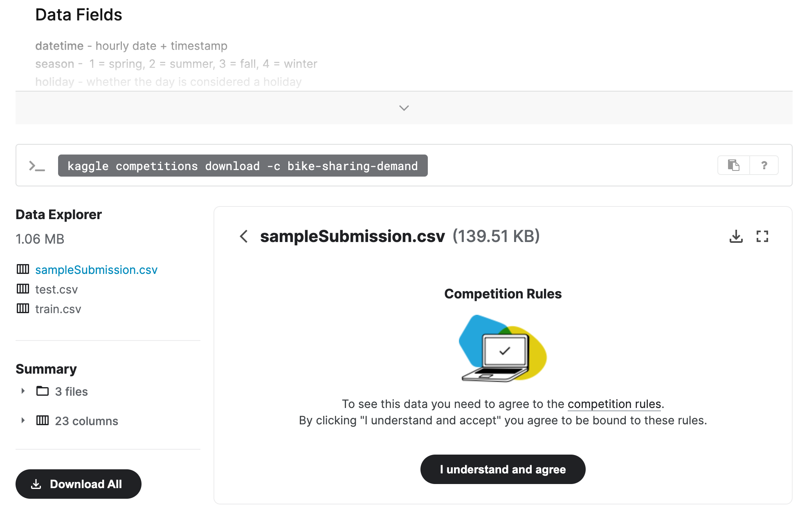
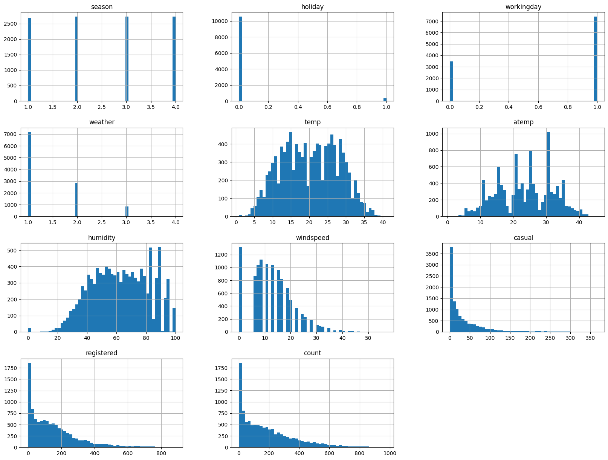
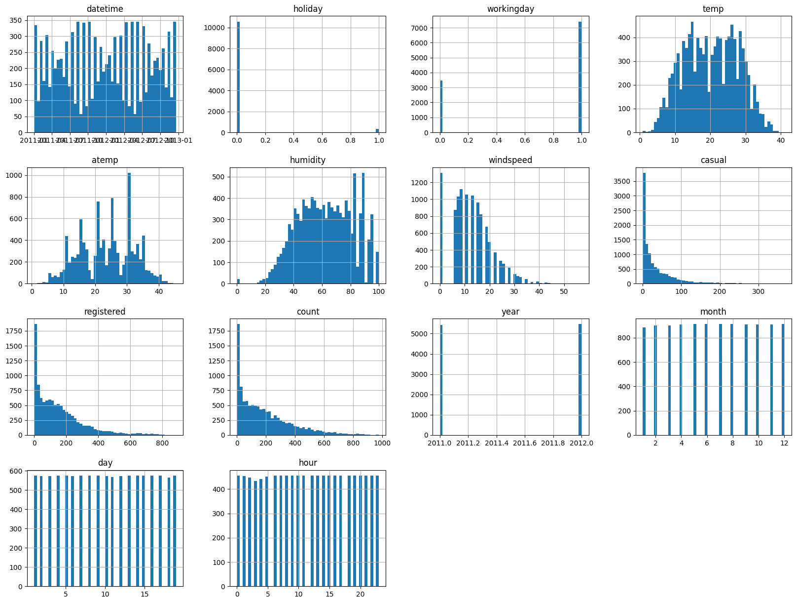
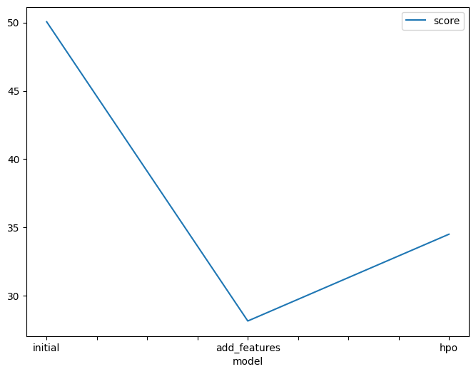
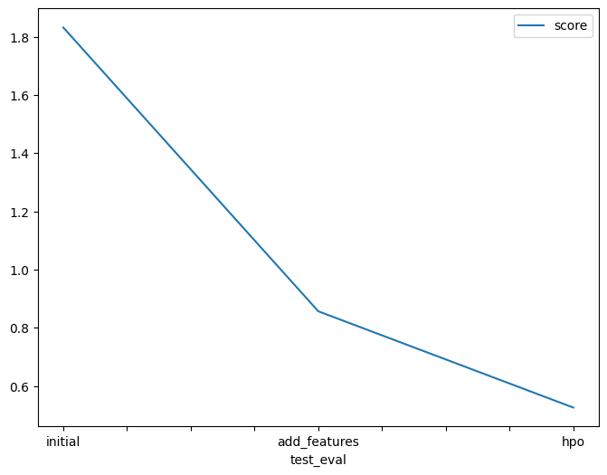

This notebook is a template with each step that you need to complete for the project.
Please fill in your code where there are explicit ?
markers in the notebook. You are welcome to add more cells and code as
you see fit.
Once you have completed all the code implementations, please export your notebook as a HTML file so the reviews can view your code. Make sure you have all outputs correctly outputted.
File-> Export Notebook As... -> Export Notebook as HTML
There is a writeup to complete as well after all code implememtation is done. Please answer all questions and attach the necessary tables and charts. You can complete the writeup in either markdown or PDF.
Completing the code template and writeup template will cover all of the rubric points for this project.
The rubric contains "Stand Out Suggestions" for enhancing the project beyond the minimum requirements. The stand out suggestions are optional. If you decide to pursue the "stand out suggestions", you can include the code in this notebook and also discuss the results in the writeup file.
Below is example of steps to get the API username and key. Each student will have their own username and key.
kaggle.json and use the username and key. ml.t3.medium instance (2
vCPU + 4 GiB)Python 3 (MXNet 1.8 Python 3.7 CPU Optimized)!pip install -U pip
!pip install -U setuptools wheel
!pip install -U "mxnet<2.0.0" bokeh==2.0.1
!pip install autogluon --no-cache-dir
# Without --no-cache-dir, smaller aws instances may have trouble installingRequirement already satisfied: pip in /opt/homebrew/lib/python3.11/site-packages (24.0)
Requirement already satisfied: setuptools in /opt/homebrew/lib/python3.11/site-packages (69.5.1)
Requirement already satisfied: wheel in /opt/homebrew/lib/python3.11/site-packages (0.43.0)
Requirement already satisfied: mxnet<2.0.0 in /opt/homebrew/lib/python3.11/site-packages (1.6.0)
Requirement already satisfied: bokeh==2.0.1 in /opt/homebrew/lib/python3.11/site-packages (2.0.1)
Requirement already satisfied: PyYAML>=3.10 in /opt/homebrew/lib/python3.11/site-packages (from bokeh==2.0.1) (6.0.1)
Requirement already satisfied: python-dateutil>=2.1 in /Users/ymadigital/Library/Python/3.11/lib/python/site-packages (from bokeh==2.0.1) (2.8.2)
Requirement already satisfied: Jinja2>=2.7 in /opt/homebrew/lib/python3.11/site-packages (from bokeh==2.0.1) (3.1.2)
Requirement already satisfied: numpy>=1.11.3 in /opt/homebrew/lib/python3.11/site-packages (from bokeh==2.0.1) (1.25.2)
Requirement already satisfied: pillow>=4.0 in /opt/homebrew/lib/python3.11/site-packages (from bokeh==2.0.1) (10.1.0)
Requirement already satisfied: packaging>=16.8 in /Users/ymadigital/Library/Python/3.11/lib/python/site-packages (from bokeh==2.0.1) (23.1)
Requirement already satisfied: tornado>=5 in /Users/ymadigital/Library/Python/3.11/lib/python/site-packages (from bokeh==2.0.1) (6.3.3)
Requirement already satisfied: typing-extensions>=3.7.4 in /opt/homebrew/lib/python3.11/site-packages (from bokeh==2.0.1) (4.8.0)
Requirement already satisfied: requests<3,>=2.20.0 in /opt/homebrew/lib/python3.11/site-packages (from mxnet<2.0.0) (2.31.0)
Requirement already satisfied: graphviz<0.9.0,>=0.8.1 in /opt/homebrew/lib/python3.11/site-packages (from mxnet<2.0.0) (0.8.4)
Requirement already satisfied: MarkupSafe>=2.0 in /opt/homebrew/lib/python3.11/site-packages (from Jinja2>=2.7->bokeh==2.0.1) (2.1.3)
Requirement already satisfied: six>=1.5 in /opt/homebrew/lib/python3.11/site-packages (from python-dateutil>=2.1->bokeh==2.0.1) (1.16.0)
Requirement already satisfied: charset-normalizer<4,>=2 in /opt/homebrew/lib/python3.11/site-packages (from requests<3,>=2.20.0->mxnet<2.0.0) (3.3.2)
Requirement already satisfied: idna<4,>=2.5 in /opt/homebrew/lib/python3.11/site-packages (from requests<3,>=2.20.0->mxnet<2.0.0) (3.4)
Requirement already satisfied: urllib3<3,>=1.21.1 in /opt/homebrew/lib/python3.11/site-packages (from requests<3,>=2.20.0->mxnet<2.0.0) (1.26.18)
Requirement already satisfied: certifi>=2017.4.17 in /opt/homebrew/lib/python3.11/site-packages (from requests<3,>=2.20.0->mxnet<2.0.0) (2023.11.17)
Collecting autogluon
Downloading autogluon-1.1.0-py3-none-any.whl.metadata (11 kB)
Collecting autogluon.core==1.1.0 (from autogluon.core[all]==1.1.0->autogluon)
Downloading autogluon.core-1.1.0-py3-none-any.whl.metadata (11 kB)
Collecting autogluon.features==1.1.0 (from autogluon)
Downloading autogluon.features-1.1.0-py3-none-any.whl.metadata (11 kB)
Collecting autogluon.tabular==1.1.0 (from autogluon.tabular[all]==1.1.0->autogluon)
Downloading autogluon.tabular-1.1.0-py3-none-any.whl.metadata (13 kB)
Collecting autogluon.multimodal==1.1.0 (from autogluon)
Downloading autogluon.multimodal-1.1.0-py3-none-any.whl.metadata (12 kB)
Collecting autogluon.timeseries==1.1.0 (from autogluon.timeseries[all]==1.1.0->autogluon)
Downloading autogluon.timeseries-1.1.0-py3-none-any.whl.metadata (12 kB)
Requirement already satisfied: numpy<1.29,>=1.21 in /opt/homebrew/lib/python3.11/site-packages (from autogluon.core==1.1.0->autogluon.core[all]==1.1.0->autogluon) (1.25.2)
Requirement already satisfied: scipy<1.13,>=1.5.4 in /opt/homebrew/lib/python3.11/site-packages (from autogluon.core==1.1.0->autogluon.core[all]==1.1.0->autogluon) (1.11.4)
Requirement already satisfied: scikit-learn<1.4.1,>=1.3.0 in /opt/homebrew/lib/python3.11/site-packages (from autogluon.core==1.1.0->autogluon.core[all]==1.1.0->autogluon) (1.3.2)
Collecting networkx<4,>=3.0 (from autogluon.core==1.1.0->autogluon.core[all]==1.1.0->autogluon)
Downloading networkx-3.3-py3-none-any.whl.metadata (5.1 kB)
Collecting pandas<2.3.0,>=2.0.0 (from autogluon.core==1.1.0->autogluon.core[all]==1.1.0->autogluon)
Downloading pandas-2.2.2-cp311-cp311-macosx_11_0_arm64.whl.metadata (19 kB)
Requirement already satisfied: tqdm<5,>=4.38 in /opt/homebrew/lib/python3.11/site-packages (from autogluon.core==1.1.0->autogluon.core[all]==1.1.0->autogluon) (4.64.1)
Requirement already satisfied: requests in /opt/homebrew/lib/python3.11/site-packages (from autogluon.core==1.1.0->autogluon.core[all]==1.1.0->autogluon) (2.31.0)
Requirement already satisfied: matplotlib in /opt/homebrew/lib/python3.11/site-packages (from autogluon.core==1.1.0->autogluon.core[all]==1.1.0->autogluon) (3.8.2)
Collecting boto3<2,>=1.10 (from autogluon.core==1.1.0->autogluon.core[all]==1.1.0->autogluon)
Downloading boto3-1.34.93-py3-none-any.whl.metadata (6.6 kB)
Collecting autogluon.common==1.1.0 (from autogluon.core==1.1.0->autogluon.core[all]==1.1.0->autogluon)
Downloading autogluon.common-1.1.0-py3-none-any.whl.metadata (11 kB)
Collecting ray<2.11,>=2.10.0 (from ray[default,tune]<2.11,>=2.10.0; extra == "all"->autogluon.core[all]==1.1.0->autogluon)
Downloading ray-2.10.0-cp311-cp311-macosx_11_0_arm64.whl.metadata (13 kB)
Collecting hyperopt<0.2.8,>=0.2.7 (from autogluon.core[all]==1.1.0->autogluon)
Downloading hyperopt-0.2.7-py2.py3-none-any.whl.metadata (1.7 kB)
Requirement already satisfied: Pillow<11,>=10.0.1 in /opt/homebrew/lib/python3.11/site-packages (from autogluon.multimodal==1.1.0->autogluon) (10.1.0)
Requirement already satisfied: torch<2.2,>=2.1 in /opt/homebrew/lib/python3.11/site-packages (from autogluon.multimodal==1.1.0->autogluon) (2.1.2)
Collecting lightning<2.2,>=2.1 (from autogluon.multimodal==1.1.0->autogluon)
Downloading lightning-2.1.4-py3-none-any.whl.metadata (57 kB)
━━━━━━━━━━━━━━━━━━━━━━━━━━━━━━━━━━━━━━━ 57.2/57.2 kB 723.9 kB/s eta 0:00:00a 0:00:01
ers<4.39.0,>=4.38.0 (from transformers[sentencepiece]<4.39.0,>=4.38.0->autogluon.multimodal==1.1.0->autogluon)
Downloading transformers-4.38.2-py3-none-any.whl.metadata (130 kB)
━━━━━━━━━━━━━━━━━━━━━━━━━━━━━━━━━━━━━ 130.7/130.7 kB 303.0 kB/s eta 0:00:00a 0:00:01
autogluon.multimodal==1.1.0->autogluon)
Downloading accelerate-0.21.0-py3-none-any.whl.metadata (17 kB)
Requirement already satisfied: jsonschema<4.22,>=4.18 in /opt/homebrew/lib/python3.11/site-packages (from autogluon.multimodal==1.1.0->autogluon) (4.20.0)
Collecting seqeval<1.3.0,>=1.2.2 (from autogluon.multimodal==1.1.0->autogluon)
Downloading seqeval-1.2.2.tar.gz (43 kB)
━━━━━━━━━━━━━━━━━━━━━━━━━━━━━━━━━━━━━━━━ 43.6/43.6 kB 3.7 MB/s eta 0:00:00
etadata (setup.py) ... autogluon.multimodal==1.1.0->autogluon)
Downloading evaluate-0.4.1-py3-none-any.whl.metadata (9.4 kB)
Collecting timm<0.10.0,>=0.9.5 (from autogluon.multimodal==1.1.0->autogluon)
Downloading timm-0.9.16-py3-none-any.whl.metadata (38 kB)
Requirement already satisfied: torchvision<0.17.0,>=0.16.0 in /opt/homebrew/lib/python3.11/site-packages (from autogluon.multimodal==1.1.0->autogluon) (0.16.2)
Collecting scikit-image<0.21.0,>=0.19.1 (from autogluon.multimodal==1.1.0->autogluon)
Downloading scikit_image-0.20.0-cp311-cp311-macosx_12_0_arm64.whl.metadata (16 kB)
Collecting text-unidecode<1.4,>=1.3 (from autogluon.multimodal==1.1.0->autogluon)
Downloading text_unidecode-1.3-py2.py3-none-any.whl.metadata (2.4 kB)
Collecting torchmetrics<1.3.0,>=1.2.0 (from autogluon.multimodal==1.1.0->autogluon)
Downloading torchmetrics-1.2.1-py3-none-any.whl.metadata (20 kB)
Collecting nptyping<2.5.0,>=1.4.4 (from autogluon.multimodal==1.1.0->autogluon)
Downloading nptyping-2.4.1-py3-none-any.whl.metadata (7.7 kB)
Collecting omegaconf<2.3.0,>=2.1.1 (from autogluon.multimodal==1.1.0->autogluon)
Downloading omegaconf-2.2.3-py3-none-any.whl.metadata (3.9 kB)
Collecting pytorch-metric-learning<2.4,>=1.3.0 (from autogluon.multimodal==1.1.0->autogluon)
Downloading pytorch_metric_learning-2.3.0-py3-none-any.whl.metadata (17 kB)
Collecting nlpaug<1.2.0,>=1.1.10 (from autogluon.multimodal==1.1.0->autogluon)
Downloading nlpaug-1.1.11-py3-none-any.whl.metadata (14 kB)
Requirement already satisfied: nltk<4.0.0,>=3.4.5 in /opt/homebrew/lib/python3.11/site-packages (from autogluon.multimodal==1.1.0->autogluon) (3.8.1)
Collecting openmim<0.4.0,>=0.3.7 (from autogluon.multimodal==1.1.0->autogluon)
Downloading openmim-0.3.9-py2.py3-none-any.whl.metadata (16 kB)
Requirement already satisfied: defusedxml<0.7.2,>=0.7.1 in /opt/homebrew/lib/python3.11/site-packages (from autogluon.multimodal==1.1.0->autogluon) (0.7.1)
Requirement already satisfied: jinja2<3.2,>=3.0.3 in /opt/homebrew/lib/python3.11/site-packages (from autogluon.multimodal==1.1.0->autogluon) (3.1.2)
Collecting tensorboard<3,>=2.9 (from autogluon.multimodal==1.1.0->autogluon)
Downloading tensorboard-2.16.2-py3-none-any.whl.metadata (1.6 kB)
Collecting pytesseract<0.3.11,>=0.3.9 (from autogluon.multimodal==1.1.0->autogluon)
Downloading pytesseract-0.3.10-py3-none-any.whl.metadata (11 kB)
Collecting nvidia-ml-py3==7.352.0 (from autogluon.multimodal==1.1.0->autogluon)
Downloading nvidia-ml-py3-7.352.0.tar.gz (19 kB)
Preparing metadata (setup.py) ... age<1.19,>=1.17.0 (from autogluon.multimodal==1.1.0->autogluon)
Downloading pdf2image-1.17.0-py3-none-any.whl.metadata (6.2 kB)
Requirement already satisfied: xgboost<2.1,>=1.6 in /opt/homebrew/lib/python3.11/site-packages (from autogluon.tabular[all]==1.1.0->autogluon) (2.0.3)
Collecting fastai<2.8,>=2.3.1 (from autogluon.tabular[all]==1.1.0->autogluon)
Downloading fastai-2.7.15-py3-none-any.whl.metadata (9.1 kB)
Collecting lightgbm<4.4,>=3.3 (from autogluon.tabular[all]==1.1.0->autogluon)
Downloading lightgbm-4.3.0.tar.gz (1.7 MB)
━━━━━━━━━━━━━━━━━━━━━━━━━━━━━━━━━━━━━━━━ 1.7/1.7 MB 2.1 MB/s eta 0:00:00a 0:00:01
ents to build wheel ... etadata (pyproject.toml) ... ent already satisfied: joblib<2,>=1.1 in /opt/homebrew/lib/python3.11/site-packages (from autogluon.timeseries==1.1.0->autogluon.timeseries[all]==1.1.0->autogluon) (1.3.2)
Collecting pytorch-lightning<2.2,>=2.1 (from autogluon.timeseries==1.1.0->autogluon.timeseries[all]==1.1.0->autogluon)
Downloading pytorch_lightning-2.1.4-py3-none-any.whl.metadata (21 kB)
Collecting gluonts<0.14.4,>=0.14.0 (from autogluon.timeseries==1.1.0->autogluon.timeseries[all]==1.1.0->autogluon)
Downloading gluonts-0.14.3-py3-none-any.whl.metadata (9.5 kB)
Collecting statsforecast<1.5,>=1.4.0 (from autogluon.timeseries==1.1.0->autogluon.timeseries[all]==1.1.0->autogluon)
Downloading statsforecast-1.4.0-py3-none-any.whl.metadata (19 kB)
Collecting mlforecast<0.10.1,>=0.10.0 (from autogluon.timeseries==1.1.0->autogluon.timeseries[all]==1.1.0->autogluon)
Downloading mlforecast-0.10.0-py3-none-any.whl.metadata (11 kB)
Collecting utilsforecast<0.0.11,>=0.0.10 (from autogluon.timeseries==1.1.0->autogluon.timeseries[all]==1.1.0->autogluon)
Downloading utilsforecast-0.0.10-py3-none-any.whl.metadata (7.0 kB)
Collecting orjson~=3.9 (from autogluon.timeseries==1.1.0->autogluon.timeseries[all]==1.1.0->autogluon)
Downloading orjson-3.10.1-cp311-cp311-macosx_10_15_x86_64.macosx_11_0_arm64.macosx_10_15_universal2.whl.metadata (49 kB)
━━━━━━━━━━━━━━━━━━━━━━━━━━━━━━━━━━━━━━━━ 49.7/49.7 kB 2.8 MB/s eta 0:00:00
um<1.19,>=1.17 (from optimum[onnxruntime]<1.19,>=1.17; extra == "all"->autogluon.timeseries[all]==1.1.0->autogluon)
Downloading optimum-1.18.1-py3-none-any.whl.metadata (18 kB)
Requirement already satisfied: psutil<6,>=5.7.3 in /Users/ymadigital/Library/Python/3.11/lib/python/site-packages (from autogluon.common==1.1.0->autogluon.core==1.1.0->autogluon.core[all]==1.1.0->autogluon) (5.9.5)
Requirement already satisfied: setuptools in /opt/homebrew/lib/python3.11/site-packages (from autogluon.common==1.1.0->autogluon.core==1.1.0->autogluon.core[all]==1.1.0->autogluon) (69.5.1)
Requirement already satisfied: packaging>=20.0 in /Users/ymadigital/Library/Python/3.11/lib/python/site-packages (from accelerate<0.22.0,>=0.21.0->autogluon.multimodal==1.1.0->autogluon) (23.1)
Requirement already satisfied: pyyaml in /opt/homebrew/lib/python3.11/site-packages (from accelerate<0.22.0,>=0.21.0->autogluon.multimodal==1.1.0->autogluon) (6.0.1)
Collecting botocore<1.35.0,>=1.34.93 (from boto3<2,>=1.10->autogluon.core==1.1.0->autogluon.core[all]==1.1.0->autogluon)
Downloading botocore-1.34.93-py3-none-any.whl.metadata (5.7 kB)
Requirement already satisfied: jmespath<2.0.0,>=0.7.1 in /opt/homebrew/lib/python3.11/site-packages (from boto3<2,>=1.10->autogluon.core==1.1.0->autogluon.core[all]==1.1.0->autogluon) (1.0.1)
Collecting s3transfer<0.11.0,>=0.10.0 (from boto3<2,>=1.10->autogluon.core==1.1.0->autogluon.core[all]==1.1.0->autogluon)
Downloading s3transfer-0.10.1-py3-none-any.whl.metadata (1.7 kB)
Requirement already satisfied: datasets>=2.0.0 in /opt/homebrew/lib/python3.11/site-packages (from evaluate<0.5.0,>=0.4.0->autogluon.multimodal==1.1.0->autogluon) (2.15.0)
Requirement already satisfied: dill in /opt/homebrew/lib/python3.11/site-packages (from evaluate<0.5.0,>=0.4.0->autogluon.multimodal==1.1.0->autogluon) (0.3.7)
Requirement already satisfied: xxhash in /opt/homebrew/lib/python3.11/site-packages (from evaluate<0.5.0,>=0.4.0->autogluon.multimodal==1.1.0->autogluon) (3.4.1)
Requirement already satisfied: multiprocess in /opt/homebrew/lib/python3.11/site-packages (from evaluate<0.5.0,>=0.4.0->autogluon.multimodal==1.1.0->autogluon) (0.70.15)
Requirement already satisfied: fsspec>=2021.05.0 in /opt/homebrew/lib/python3.11/site-packages (from fsspec[http]>=2021.05.0->evaluate<0.5.0,>=0.4.0->autogluon.multimodal==1.1.0->autogluon) (2023.10.0)
Requirement already satisfied: huggingface-hub>=0.7.0 in /opt/homebrew/lib/python3.11/site-packages (from evaluate<0.5.0,>=0.4.0->autogluon.multimodal==1.1.0->autogluon) (0.19.4)
Collecting responses<0.19 (from evaluate<0.5.0,>=0.4.0->autogluon.multimodal==1.1.0->autogluon)
Downloading responses-0.18.0-py3-none-any.whl.metadata (29 kB)
Requirement already satisfied: pip in /opt/homebrew/lib/python3.11/site-packages (from fastai<2.8,>=2.3.1->autogluon.tabular[all]==1.1.0->autogluon) (24.0)
Collecting fastdownload<2,>=0.0.5 (from fastai<2.8,>=2.3.1->autogluon.tabular[all]==1.1.0->autogluon)
Downloading fastdownload-0.0.7-py3-none-any.whl.metadata (5.5 kB)
Collecting fastcore<1.6,>=1.5.29 (from fastai<2.8,>=2.3.1->autogluon.tabular[all]==1.1.0->autogluon)
Downloading fastcore-1.5.32-py3-none-any.whl.metadata (3.5 kB)
Collecting fastprogress>=0.2.4 (from fastai<2.8,>=2.3.1->autogluon.tabular[all]==1.1.0->autogluon)
Downloading fastprogress-1.0.3-py3-none-any.whl.metadata (5.6 kB)
Requirement already satisfied: spacy<4 in /opt/homebrew/lib/python3.11/site-packages (from fastai<2.8,>=2.3.1->autogluon.tabular[all]==1.1.0->autogluon) (3.7.2)
Requirement already satisfied: pydantic<3,>=1.7 in /opt/homebrew/lib/python3.11/site-packages (from gluonts<0.14.4,>=0.14.0->autogluon.timeseries==1.1.0->autogluon.timeseries[all]==1.1.0->autogluon) (2.5.2)
Collecting toolz~=0.10 (from gluonts<0.14.4,>=0.14.0->autogluon.timeseries==1.1.0->autogluon.timeseries[all]==1.1.0->autogluon)
Downloading toolz-0.12.1-py3-none-any.whl.metadata (5.1 kB)
Requirement already satisfied: typing-extensions~=4.0 in /opt/homebrew/lib/python3.11/site-packages (from gluonts<0.14.4,>=0.14.0->autogluon.timeseries==1.1.0->autogluon.timeseries[all]==1.1.0->autogluon) (4.8.0)
Requirement already satisfied: six in /opt/homebrew/lib/python3.11/site-packages (from hyperopt<0.2.8,>=0.2.7->autogluon.core[all]==1.1.0->autogluon) (1.16.0)
Requirement already satisfied: future in /opt/homebrew/lib/python3.11/site-packages (from hyperopt<0.2.8,>=0.2.7->autogluon.core[all]==1.1.0->autogluon) (0.18.3)
Collecting cloudpickle (from hyperopt<0.2.8,>=0.2.7->autogluon.core[all]==1.1.0->autogluon)
Downloading cloudpickle-3.0.0-py3-none-any.whl.metadata (7.0 kB)
Collecting py4j (from hyperopt<0.2.8,>=0.2.7->autogluon.core[all]==1.1.0->autogluon)
Downloading py4j-0.10.9.7-py2.py3-none-any.whl.metadata (1.5 kB)
Requirement already satisfied: MarkupSafe>=2.0 in /opt/homebrew/lib/python3.11/site-packages (from jinja2<3.2,>=3.0.3->autogluon.multimodal==1.1.0->autogluon) (2.1.3)
Requirement already satisfied: attrs>=22.2.0 in /opt/homebrew/lib/python3.11/site-packages (from jsonschema<4.22,>=4.18->autogluon.multimodal==1.1.0->autogluon) (23.1.0)
Requirement already satisfied: jsonschema-specifications>=2023.03.6 in /opt/homebrew/lib/python3.11/site-packages (from jsonschema<4.22,>=4.18->autogluon.multimodal==1.1.0->autogluon) (2023.12.1)
Requirement already satisfied: referencing>=0.28.4 in /opt/homebrew/lib/python3.11/site-packages (from jsonschema<4.22,>=4.18->autogluon.multimodal==1.1.0->autogluon) (0.32.0)
Requirement already satisfied: rpds-py>=0.7.1 in /opt/homebrew/lib/python3.11/site-packages (from jsonschema<4.22,>=4.18->autogluon.multimodal==1.1.0->autogluon) (0.15.2)
Collecting lightning-utilities<2.0,>=0.8.0 (from lightning<2.2,>=2.1->autogluon.multimodal==1.1.0->autogluon)
Downloading lightning_utilities-0.11.2-py3-none-any.whl.metadata (4.7 kB)
Requirement already satisfied: numba in /opt/homebrew/lib/python3.11/site-packages (from mlforecast<0.10.1,>=0.10.0->autogluon.timeseries==1.1.0->autogluon.timeseries[all]==1.1.0->autogluon) (0.58.1)
Collecting window-ops (from mlforecast<0.10.1,>=0.10.0->autogluon.timeseries==1.1.0->autogluon.timeseries[all]==1.1.0->autogluon)
Downloading window_ops-0.0.15-py3-none-any.whl.metadata (6.8 kB)
Collecting gdown>=4.0.0 (from nlpaug<1.2.0,>=1.1.10->autogluon.multimodal==1.1.0->autogluon)
Downloading gdown-5.1.0-py3-none-any.whl.metadata (5.7 kB)
Requirement already satisfied: click in /opt/homebrew/lib/python3.11/site-packages (from nltk<4.0.0,>=3.4.5->autogluon.multimodal==1.1.0->autogluon) (8.1.7)
Requirement already satisfied: regex>=2021.8.3 in /opt/homebrew/lib/python3.11/site-packages (from nltk<4.0.0,>=3.4.5->autogluon.multimodal==1.1.0->autogluon) (2023.10.3)
Collecting antlr4-python3-runtime==4.9.* (from omegaconf<2.3.0,>=2.1.1->autogluon.multimodal==1.1.0->autogluon)
Downloading antlr4-python3-runtime-4.9.3.tar.gz (117 kB)
━━━━━━━━━━━━━━━━━━━━━━━━━━━━━━━━━━━━━━━ 117.0/117.0 kB 2.5 MB/s eta 0:00:00a 0:00:01
etadata (setup.py) ... ent already satisfied: colorama in /opt/homebrew/lib/python3.11/site-packages (from openmim<0.4.0,>=0.3.7->autogluon.multimodal==1.1.0->autogluon) (0.4.6)
Collecting model-index (from openmim<0.4.0,>=0.3.7->autogluon.multimodal==1.1.0->autogluon)
Downloading model_index-0.1.11-py3-none-any.whl.metadata (3.9 kB)
Collecting opendatalab (from openmim<0.4.0,>=0.3.7->autogluon.multimodal==1.1.0->autogluon)
Downloading opendatalab-0.0.10-py3-none-any.whl.metadata (6.4 kB)
Collecting rich (from openmim<0.4.0,>=0.3.7->autogluon.multimodal==1.1.0->autogluon)
Downloading rich-13.7.1-py3-none-any.whl.metadata (18 kB)
Requirement already satisfied: tabulate in /opt/homebrew/lib/python3.11/site-packages (from openmim<0.4.0,>=0.3.7->autogluon.multimodal==1.1.0->autogluon) (0.9.0)
Collecting coloredlogs (from optimum<1.19,>=1.17->optimum[onnxruntime]<1.19,>=1.17; extra == "all"->autogluon.timeseries[all]==1.1.0->autogluon)
Downloading coloredlogs-15.0.1-py2.py3-none-any.whl.metadata (12 kB)
Requirement already satisfied: sympy in /opt/homebrew/lib/python3.11/site-packages (from optimum<1.19,>=1.17->optimum[onnxruntime]<1.19,>=1.17; extra == "all"->autogluon.timeseries[all]==1.1.0->autogluon) (1.12)
Collecting onnx (from optimum[onnxruntime]<1.19,>=1.17; extra == "all"->autogluon.timeseries[all]==1.1.0->autogluon)
Downloading onnx-1.16.0-cp311-cp311-macosx_10_15_universal2.whl.metadata (16 kB)
Collecting onnxruntime>=1.11.0 (from optimum[onnxruntime]<1.19,>=1.17; extra == "all"->autogluon.timeseries[all]==1.1.0->autogluon)
Downloading onnxruntime-1.17.3-cp311-cp311-macosx_11_0_universal2.whl.metadata (4.4 kB)
Requirement already satisfied: protobuf>=3.20.1 in /opt/homebrew/lib/python3.11/site-packages (from optimum[onnxruntime]<1.19,>=1.17; extra == "all"->autogluon.timeseries[all]==1.1.0->autogluon) (4.23.4)
Requirement already satisfied: python-dateutil>=2.8.2 in /Users/ymadigital/Library/Python/3.11/lib/python/site-packages (from pandas<2.3.0,>=2.0.0->autogluon.core==1.1.0->autogluon.core[all]==1.1.0->autogluon) (2.8.2)
Requirement already satisfied: pytz>=2020.1 in /opt/homebrew/lib/python3.11/site-packages (from pandas<2.3.0,>=2.0.0->autogluon.core==1.1.0->autogluon.core[all]==1.1.0->autogluon) (2023.3.post1)
Requirement already satisfied: tzdata>=2022.7 in /opt/homebrew/lib/python3.11/site-packages (from pandas<2.3.0,>=2.0.0->autogluon.core==1.1.0->autogluon.core[all]==1.1.0->autogluon) (2023.3)
Requirement already satisfied: filelock in /opt/homebrew/lib/python3.11/site-packages (from ray<2.11,>=2.10.0->ray[default,tune]<2.11,>=2.10.0; extra == "all"->autogluon.core[all]==1.1.0->autogluon) (3.13.1)
Requirement already satisfied: msgpack<2.0.0,>=1.0.0 in /opt/homebrew/lib/python3.11/site-packages (from ray<2.11,>=2.10.0->ray[default,tune]<2.11,>=2.10.0; extra == "all"->autogluon.core[all]==1.1.0->autogluon) (1.0.7)
Requirement already satisfied: aiosignal in /opt/homebrew/lib/python3.11/site-packages (from ray<2.11,>=2.10.0->ray[default,tune]<2.11,>=2.10.0; extra == "all"->autogluon.core[all]==1.1.0->autogluon) (1.3.1)
Requirement already satisfied: frozenlist in /opt/homebrew/lib/python3.11/site-packages (from ray<2.11,>=2.10.0->ray[default,tune]<2.11,>=2.10.0; extra == "all"->autogluon.core[all]==1.1.0->autogluon) (1.4.0)
Requirement already satisfied: aiohttp>=3.7 in /opt/homebrew/lib/python3.11/site-packages (from ray[default,tune]<2.11,>=2.10.0; extra == "all"->autogluon.core[all]==1.1.0->autogluon) (3.9.0)
Collecting aiohttp-cors (from ray[default,tune]<2.11,>=2.10.0; extra == "all"->autogluon.core[all]==1.1.0->autogluon)
Downloading aiohttp_cors-0.7.0-py3-none-any.whl.metadata (20 kB)
Collecting colorful (from ray[default,tune]<2.11,>=2.10.0; extra == "all"->autogluon.core[all]==1.1.0->autogluon)
Downloading colorful-0.5.6-py2.py3-none-any.whl.metadata (16 kB)
Collecting py-spy>=0.2.0 (from ray[default,tune]<2.11,>=2.10.0; extra == "all"->autogluon.core[all]==1.1.0->autogluon)
Downloading py_spy-0.3.14-py2.py3-none-macosx_10_9_x86_64.macosx_11_0_arm64.macosx_10_9_universal2.whl.metadata (16 kB)
Collecting opencensus (from ray[default,tune]<2.11,>=2.10.0; extra == "all"->autogluon.core[all]==1.1.0->autogluon)
Downloading opencensus-0.11.4-py2.py3-none-any.whl.metadata (12 kB)
Requirement already satisfied: prometheus-client>=0.7.1 in /opt/homebrew/lib/python3.11/site-packages (from ray[default,tune]<2.11,>=2.10.0; extra == "all"->autogluon.core[all]==1.1.0->autogluon) (0.19.0)
Requirement already satisfied: smart-open in /opt/homebrew/lib/python3.11/site-packages (from ray[default,tune]<2.11,>=2.10.0; extra == "all"->autogluon.core[all]==1.1.0->autogluon) (6.4.0)
Requirement already satisfied: virtualenv!=20.21.1,>=20.0.24 in /opt/homebrew/lib/python3.11/site-packages (from ray[default,tune]<2.11,>=2.10.0; extra == "all"->autogluon.core[all]==1.1.0->autogluon) (20.24.7)
Requirement already satisfied: grpcio>=1.42.0 in /opt/homebrew/lib/python3.11/site-packages (from ray[default,tune]<2.11,>=2.10.0; extra == "all"->autogluon.core[all]==1.1.0->autogluon) (1.59.3)
Collecting tensorboardX>=1.9 (from ray[default,tune]<2.11,>=2.10.0; extra == "all"->autogluon.core[all]==1.1.0->autogluon)
Downloading tensorboardX-2.6.2.2-py2.py3-none-any.whl.metadata (5.8 kB)
Requirement already satisfied: pyarrow>=6.0.1 in /opt/homebrew/lib/python3.11/site-packages (from ray[default,tune]<2.11,>=2.10.0; extra == "all"->autogluon.core[all]==1.1.0->autogluon) (14.0.1)
Requirement already satisfied: charset-normalizer<4,>=2 in /opt/homebrew/lib/python3.11/site-packages (from requests->autogluon.core==1.1.0->autogluon.core[all]==1.1.0->autogluon) (3.3.2)
Requirement already satisfied: idna<4,>=2.5 in /opt/homebrew/lib/python3.11/site-packages (from requests->autogluon.core==1.1.0->autogluon.core[all]==1.1.0->autogluon) (3.4)
Requirement already satisfied: urllib3<3,>=1.21.1 in /opt/homebrew/lib/python3.11/site-packages (from requests->autogluon.core==1.1.0->autogluon.core[all]==1.1.0->autogluon) (1.26.18)
Requirement already satisfied: certifi>=2017.4.17 in /opt/homebrew/lib/python3.11/site-packages (from requests->autogluon.core==1.1.0->autogluon.core[all]==1.1.0->autogluon) (2023.11.17)
Collecting imageio>=2.4.1 (from scikit-image<0.21.0,>=0.19.1->autogluon.multimodal==1.1.0->autogluon)
Downloading imageio-2.34.1-py3-none-any.whl.metadata (4.9 kB)
Collecting tifffile>=2019.7.26 (from scikit-image<0.21.0,>=0.19.1->autogluon.multimodal==1.1.0->autogluon)
Downloading tifffile-2024.4.24-py3-none-any.whl.metadata (31 kB)
Collecting PyWavelets>=1.1.1 (from scikit-image<0.21.0,>=0.19.1->autogluon.multimodal==1.1.0->autogluon)
Downloading pywavelets-1.6.0-cp311-cp311-macosx_11_0_arm64.whl.metadata (9.0 kB)
Requirement already satisfied: lazy_loader>=0.1 in /opt/homebrew/lib/python3.11/site-packages (from scikit-image<0.21.0,>=0.19.1->autogluon.multimodal==1.1.0->autogluon) (0.3)
Requirement already satisfied: threadpoolctl>=2.0.0 in /opt/homebrew/lib/python3.11/site-packages (from scikit-learn<1.4.1,>=1.3.0->autogluon.core==1.1.0->autogluon.core[all]==1.1.0->autogluon) (3.2.0)
Requirement already satisfied: plotly in /opt/homebrew/lib/python3.11/site-packages (from statsforecast<1.5,>=1.4.0->autogluon.timeseries==1.1.0->autogluon.timeseries[all]==1.1.0->autogluon) (5.19.0)
Requirement already satisfied: statsmodels>=0.13.2 in /opt/homebrew/lib/python3.11/site-packages (from statsforecast<1.5,>=1.4.0->autogluon.timeseries==1.1.0->autogluon.timeseries[all]==1.1.0->autogluon) (0.14.1)
Requirement already satisfied: absl-py>=0.4 in /opt/homebrew/lib/python3.11/site-packages (from tensorboard<3,>=2.9->autogluon.multimodal==1.1.0->autogluon) (2.0.0)
Requirement already satisfied: markdown>=2.6.8 in /opt/homebrew/lib/python3.11/site-packages (from tensorboard<3,>=2.9->autogluon.multimodal==1.1.0->autogluon) (3.5.1)
Requirement already satisfied: tensorboard-data-server<0.8.0,>=0.7.0 in /opt/homebrew/lib/python3.11/site-packages (from tensorboard<3,>=2.9->autogluon.multimodal==1.1.0->autogluon) (0.7.2)
Requirement already satisfied: werkzeug>=1.0.1 in /opt/homebrew/lib/python3.11/site-packages (from tensorboard<3,>=2.9->autogluon.multimodal==1.1.0->autogluon) (3.0.1)
Requirement already satisfied: safetensors in /opt/homebrew/lib/python3.11/site-packages (from timm<0.10.0,>=0.9.5->autogluon.multimodal==1.1.0->autogluon) (0.4.0)
Requirement already satisfied: tokenizers<0.19,>=0.14 in /opt/homebrew/lib/python3.11/site-packages (from transformers<4.39.0,>=4.38.0->transformers[sentencepiece]<4.39.0,>=4.38.0->autogluon.multimodal==1.1.0->autogluon) (0.15.0)
Collecting safetensors (from timm<0.10.0,>=0.9.5->autogluon.multimodal==1.1.0->autogluon)
Downloading safetensors-0.4.3-cp311-cp311-macosx_11_0_arm64.whl.metadata (3.8 kB)
Requirement already satisfied: sentencepiece!=0.1.92,>=0.1.91 in /opt/homebrew/lib/python3.11/site-packages (from transformers[sentencepiece]<4.39.0,>=4.38.0->autogluon.multimodal==1.1.0->autogluon) (0.1.99)
Requirement already satisfied: contourpy>=1.0.1 in /opt/homebrew/lib/python3.11/site-packages (from matplotlib->autogluon.core==1.1.0->autogluon.core[all]==1.1.0->autogluon) (1.2.0)
Requirement already satisfied: cycler>=0.10 in /opt/homebrew/lib/python3.11/site-packages (from matplotlib->autogluon.core==1.1.0->autogluon.core[all]==1.1.0->autogluon) (0.12.1)
Requirement already satisfied: fonttools>=4.22.0 in /opt/homebrew/lib/python3.11/site-packages (from matplotlib->autogluon.core==1.1.0->autogluon.core[all]==1.1.0->autogluon) (4.44.0)
Requirement already satisfied: kiwisolver>=1.3.1 in /opt/homebrew/lib/python3.11/site-packages (from matplotlib->autogluon.core==1.1.0->autogluon.core[all]==1.1.0->autogluon) (1.4.5)
Requirement already satisfied: pyparsing>=2.3.1 in /opt/homebrew/lib/python3.11/site-packages (from matplotlib->autogluon.core==1.1.0->autogluon.core[all]==1.1.0->autogluon) (3.1.1)
Requirement already satisfied: multidict<7.0,>=4.5 in /opt/homebrew/lib/python3.11/site-packages (from aiohttp>=3.7->ray[default,tune]<2.11,>=2.10.0; extra == "all"->autogluon.core[all]==1.1.0->autogluon) (6.0.4)
Requirement already satisfied: yarl<2.0,>=1.0 in /opt/homebrew/lib/python3.11/site-packages (from aiohttp>=3.7->ray[default,tune]<2.11,>=2.10.0; extra == "all"->autogluon.core[all]==1.1.0->autogluon) (1.9.3)
Requirement already satisfied: pyarrow-hotfix in /opt/homebrew/lib/python3.11/site-packages (from datasets>=2.0.0->evaluate<0.5.0,>=0.4.0->autogluon.multimodal==1.1.0->autogluon) (0.6)
Requirement already satisfied: beautifulsoup4 in /opt/homebrew/lib/python3.11/site-packages (from gdown>=4.0.0->nlpaug<1.2.0,>=1.1.10->autogluon.multimodal==1.1.0->autogluon) (4.12.2)
Requirement already satisfied: llvmlite<0.42,>=0.41.0dev0 in /opt/homebrew/lib/python3.11/site-packages (from numba->mlforecast<0.10.1,>=0.10.0->autogluon.timeseries==1.1.0->autogluon.timeseries[all]==1.1.0->autogluon) (0.41.1)
Collecting flatbuffers (from onnxruntime>=1.11.0->optimum[onnxruntime]<1.19,>=1.17; extra == "all"->autogluon.timeseries[all]==1.1.0->autogluon)
Downloading flatbuffers-24.3.25-py2.py3-none-any.whl.metadata (850 bytes)
Requirement already satisfied: annotated-types>=0.4.0 in /opt/homebrew/lib/python3.11/site-packages (from pydantic<3,>=1.7->gluonts<0.14.4,>=0.14.0->autogluon.timeseries==1.1.0->autogluon.timeseries[all]==1.1.0->autogluon) (0.6.0)
Requirement already satisfied: pydantic-core==2.14.5 in /opt/homebrew/lib/python3.11/site-packages (from pydantic<3,>=1.7->gluonts<0.14.4,>=0.14.0->autogluon.timeseries==1.1.0->autogluon.timeseries[all]==1.1.0->autogluon) (2.14.5)
Requirement already satisfied: spacy-legacy<3.1.0,>=3.0.11 in /opt/homebrew/lib/python3.11/site-packages (from spacy<4->fastai<2.8,>=2.3.1->autogluon.tabular[all]==1.1.0->autogluon) (3.0.12)
Requirement already satisfied: spacy-loggers<2.0.0,>=1.0.0 in /opt/homebrew/lib/python3.11/site-packages (from spacy<4->fastai<2.8,>=2.3.1->autogluon.tabular[all]==1.1.0->autogluon) (1.0.5)
Requirement already satisfied: murmurhash<1.1.0,>=0.28.0 in /opt/homebrew/lib/python3.11/site-packages (from spacy<4->fastai<2.8,>=2.3.1->autogluon.tabular[all]==1.1.0->autogluon) (1.0.10)
Requirement already satisfied: cymem<2.1.0,>=2.0.2 in /opt/homebrew/lib/python3.11/site-packages (from spacy<4->fastai<2.8,>=2.3.1->autogluon.tabular[all]==1.1.0->autogluon) (2.0.8)
Requirement already satisfied: preshed<3.1.0,>=3.0.2 in /opt/homebrew/lib/python3.11/site-packages (from spacy<4->fastai<2.8,>=2.3.1->autogluon.tabular[all]==1.1.0->autogluon) (3.0.9)
Requirement already satisfied: thinc<8.3.0,>=8.1.8 in /opt/homebrew/lib/python3.11/site-packages (from spacy<4->fastai<2.8,>=2.3.1->autogluon.tabular[all]==1.1.0->autogluon) (8.2.1)
Requirement already satisfied: wasabi<1.2.0,>=0.9.1 in /opt/homebrew/lib/python3.11/site-packages (from spacy<4->fastai<2.8,>=2.3.1->autogluon.tabular[all]==1.1.0->autogluon) (1.1.2)
Requirement already satisfied: srsly<3.0.0,>=2.4.3 in /opt/homebrew/lib/python3.11/site-packages (from spacy<4->fastai<2.8,>=2.3.1->autogluon.tabular[all]==1.1.0->autogluon) (2.4.8)
Requirement already satisfied: catalogue<2.1.0,>=2.0.6 in /opt/homebrew/lib/python3.11/site-packages (from spacy<4->fastai<2.8,>=2.3.1->autogluon.tabular[all]==1.1.0->autogluon) (2.0.10)
Requirement already satisfied: weasel<0.4.0,>=0.1.0 in /opt/homebrew/lib/python3.11/site-packages (from spacy<4->fastai<2.8,>=2.3.1->autogluon.tabular[all]==1.1.0->autogluon) (0.3.4)
Requirement already satisfied: typer<0.10.0,>=0.3.0 in /opt/homebrew/lib/python3.11/site-packages (from spacy<4->fastai<2.8,>=2.3.1->autogluon.tabular[all]==1.1.0->autogluon) (0.9.0)
Requirement already satisfied: langcodes<4.0.0,>=3.2.0 in /opt/homebrew/lib/python3.11/site-packages (from spacy<4->fastai<2.8,>=2.3.1->autogluon.tabular[all]==1.1.0->autogluon) (3.3.0)
Requirement already satisfied: patsy>=0.5.4 in /opt/homebrew/lib/python3.11/site-packages (from statsmodels>=0.13.2->statsforecast<1.5,>=1.4.0->autogluon.timeseries==1.1.0->autogluon.timeseries[all]==1.1.0->autogluon) (0.5.6)
Requirement already satisfied: distlib<1,>=0.3.7 in /opt/homebrew/lib/python3.11/site-packages (from virtualenv!=20.21.1,>=20.0.24->ray[default,tune]<2.11,>=2.10.0; extra == "all"->autogluon.core[all]==1.1.0->autogluon) (0.3.7)
Requirement already satisfied: platformdirs<5,>=3.9.1 in /Users/ymadigital/Library/Python/3.11/lib/python/site-packages (from virtualenv!=20.21.1,>=20.0.24->ray[default,tune]<2.11,>=2.10.0; extra == "all"->autogluon.core[all]==1.1.0->autogluon) (3.10.0)
Collecting humanfriendly>=9.1 (from coloredlogs->optimum<1.19,>=1.17->optimum[onnxruntime]<1.19,>=1.17; extra == "all"->autogluon.timeseries[all]==1.1.0->autogluon)
Downloading humanfriendly-10.0-py2.py3-none-any.whl.metadata (9.2 kB)
Collecting ordered-set (from model-index->openmim<0.4.0,>=0.3.7->autogluon.multimodal==1.1.0->autogluon)
Downloading ordered_set-4.1.0-py3-none-any.whl.metadata (5.3 kB)
Collecting opencensus-context>=0.1.3 (from opencensus->ray[default,tune]<2.11,>=2.10.0; extra == "all"->autogluon.core[all]==1.1.0->autogluon)
Downloading opencensus_context-0.1.3-py2.py3-none-any.whl.metadata (3.3 kB)
Collecting google-api-core<3.0.0,>=1.0.0 (from opencensus->ray[default,tune]<2.11,>=2.10.0; extra == "all"->autogluon.core[all]==1.1.0->autogluon)
Downloading google_api_core-2.18.0-py3-none-any.whl.metadata (2.7 kB)
Collecting pycryptodome (from opendatalab->openmim<0.4.0,>=0.3.7->autogluon.multimodal==1.1.0->autogluon)
Downloading pycryptodome-3.20.0-cp35-abi3-macosx_10_9_universal2.whl.metadata (3.4 kB)
Collecting openxlab (from opendatalab->openmim<0.4.0,>=0.3.7->autogluon.multimodal==1.1.0->autogluon)
Downloading openxlab-0.0.38-py3-none-any.whl.metadata (3.8 kB)
Requirement already satisfied: tenacity>=6.2.0 in /opt/homebrew/lib/python3.11/site-packages (from plotly->statsforecast<1.5,>=1.4.0->autogluon.timeseries==1.1.0->autogluon.timeseries[all]==1.1.0->autogluon) (8.2.3)
Collecting markdown-it-py>=2.2.0 (from rich->openmim<0.4.0,>=0.3.7->autogluon.multimodal==1.1.0->autogluon)
Downloading markdown_it_py-3.0.0-py3-none-any.whl.metadata (6.9 kB)
Requirement already satisfied: pygments<3.0.0,>=2.13.0 in /Users/ymadigital/Library/Python/3.11/lib/python/site-packages (from rich->openmim<0.4.0,>=0.3.7->autogluon.multimodal==1.1.0->autogluon) (2.16.1)
Requirement already satisfied: mpmath>=0.19 in /opt/homebrew/lib/python3.11/site-packages (from sympy->optimum<1.19,>=1.17->optimum[onnxruntime]<1.19,>=1.17; extra == "all"->autogluon.timeseries[all]==1.1.0->autogluon) (1.3.0)
Collecting googleapis-common-protos<2.0.dev0,>=1.56.2 (from google-api-core<3.0.0,>=1.0.0->opencensus->ray[default,tune]<2.11,>=2.10.0; extra == "all"->autogluon.core[all]==1.1.0->autogluon)
Downloading googleapis_common_protos-1.63.0-py2.py3-none-any.whl.metadata (1.5 kB)
Collecting proto-plus<2.0.0dev,>=1.22.3 (from google-api-core<3.0.0,>=1.0.0->opencensus->ray[default,tune]<2.11,>=2.10.0; extra == "all"->autogluon.core[all]==1.1.0->autogluon)
Downloading proto_plus-1.23.0-py3-none-any.whl.metadata (2.2 kB)
Collecting google-auth<3.0.dev0,>=2.14.1 (from google-api-core<3.0.0,>=1.0.0->opencensus->ray[default,tune]<2.11,>=2.10.0; extra == "all"->autogluon.core[all]==1.1.0->autogluon)
Downloading google_auth-2.29.0-py2.py3-none-any.whl.metadata (4.7 kB)
Collecting mdurl~=0.1 (from markdown-it-py>=2.2.0->rich->openmim<0.4.0,>=0.3.7->autogluon.multimodal==1.1.0->autogluon)
Downloading mdurl-0.1.2-py3-none-any.whl.metadata (1.6 kB)
Requirement already satisfied: blis<0.8.0,>=0.7.8 in /opt/homebrew/lib/python3.11/site-packages (from thinc<8.3.0,>=8.1.8->spacy<4->fastai<2.8,>=2.3.1->autogluon.tabular[all]==1.1.0->autogluon) (0.7.11)
Requirement already satisfied: confection<1.0.0,>=0.0.1 in /opt/homebrew/lib/python3.11/site-packages (from thinc<8.3.0,>=8.1.8->spacy<4->fastai<2.8,>=2.3.1->autogluon.tabular[all]==1.1.0->autogluon) (0.1.4)
Requirement already satisfied: cloudpathlib<0.17.0,>=0.7.0 in /opt/homebrew/lib/python3.11/site-packages (from weasel<0.4.0,>=0.1.0->spacy<4->fastai<2.8,>=2.3.1->autogluon.tabular[all]==1.1.0->autogluon) (0.16.0)
Requirement already satisfied: soupsieve>1.2 in /opt/homebrew/lib/python3.11/site-packages (from beautifulsoup4->gdown>=4.0.0->nlpaug<1.2.0,>=1.1.10->autogluon.multimodal==1.1.0->autogluon) (2.5)
Collecting oss2~=2.17.0 (from openxlab->opendatalab->openmim<0.4.0,>=0.3.7->autogluon.multimodal==1.1.0->autogluon)
Downloading oss2-2.17.0.tar.gz (259 kB)
━━━━━━━━━━━━━━━━━━━━━━━━━━━━━━━━━━━━━━━ 259.5/259.5 kB 3.3 MB/s eta 0:00:00a 0:00:01
etadata (setup.py) ... autogluon.core==1.1.0->autogluon.core[all]==1.1.0->autogluon)
Downloading requests-2.28.2-py3-none-any.whl.metadata (4.6 kB)
Collecting rich (from openmim<0.4.0,>=0.3.7->autogluon.multimodal==1.1.0->autogluon)
Downloading rich-13.4.2-py3-none-any.whl.metadata (18 kB)
Collecting setuptools (from autogluon.common==1.1.0->autogluon.core==1.1.0->autogluon.core[all]==1.1.0->autogluon)
Downloading setuptools-60.2.0-py3-none-any.whl.metadata (5.1 kB)
Collecting tqdm<5,>=4.38 (from autogluon.core==1.1.0->autogluon.core[all]==1.1.0->autogluon)
Downloading tqdm-4.65.2-py3-none-any.whl.metadata (56 kB)
━━━━━━━━━━━━━━━━━━━━━━━━━━━━━━━━━━━━━━━━ 57.0/57.0 kB 4.4 MB/s eta 0:00:00
ultiple versions of requests[socks] to determine which version is compatible with other requirements. This could take a while.
Collecting requests[socks] (from gdown>=4.0.0->nlpaug<1.2.0,>=1.1.10->autogluon.multimodal==1.1.0->autogluon)
Downloading requests-2.30.0-py3-none-any.whl.metadata (4.6 kB)
Downloading requests-2.29.0-py3-none-any.whl.metadata (4.6 kB)
Requirement already satisfied: PySocks!=1.5.7,>=1.5.6 in /opt/homebrew/lib/python3.11/site-packages (from requests[socks]->gdown>=4.0.0->nlpaug<1.2.0,>=1.1.10->autogluon.multimodal==1.1.0->autogluon) (1.7.1)
Requirement already satisfied: cachetools<6.0,>=2.0.0 in /opt/homebrew/lib/python3.11/site-packages (from google-auth<3.0.dev0,>=2.14.1->google-api-core<3.0.0,>=1.0.0->opencensus->ray[default,tune]<2.11,>=2.10.0; extra == "all"->autogluon.core[all]==1.1.0->autogluon) (4.2.4)
Requirement already satisfied: pyasn1-modules>=0.2.1 in /opt/homebrew/lib/python3.11/site-packages (from google-auth<3.0.dev0,>=2.14.1->google-api-core<3.0.0,>=1.0.0->opencensus->ray[default,tune]<2.11,>=2.10.0; extra == "all"->autogluon.core[all]==1.1.0->autogluon) (0.3.0)
Requirement already satisfied: rsa<5,>=3.1.4 in /opt/homebrew/lib/python3.11/site-packages (from google-auth<3.0.dev0,>=2.14.1->google-api-core<3.0.0,>=1.0.0->opencensus->ray[default,tune]<2.11,>=2.10.0; extra == "all"->autogluon.core[all]==1.1.0->autogluon) (4.9)
Collecting crcmod>=1.7 (from oss2~=2.17.0->openxlab->opendatalab->openmim<0.4.0,>=0.3.7->autogluon.multimodal==1.1.0->autogluon)
Downloading crcmod-1.7.tar.gz (89 kB)
━━━━━━━━━━━━━━━━━━━━━━━━━━━━━━━━━━━━━━━━ 89.7/89.7 kB 4.9 MB/s eta 0:00:00
etadata (setup.py) ... s>=2.4.1 (from oss2~=2.17.0->openxlab->opendatalab->openmim<0.4.0,>=0.3.7->autogluon.multimodal==1.1.0->autogluon)
Downloading aliyun_python_sdk_kms-2.16.2-py2.py3-none-any.whl.metadata (1.5 kB)
Collecting aliyun-python-sdk-core>=2.13.12 (from oss2~=2.17.0->openxlab->opendatalab->openmim<0.4.0,>=0.3.7->autogluon.multimodal==1.1.0->autogluon)
Downloading aliyun-python-sdk-core-2.15.1.tar.gz (443 kB)
━━━━━━━━━━━━━━━━━━━━━━━━━━━━━━━━━━━━━━━ 443.1/443.1 kB 3.1 MB/s eta 0:00:00a 0:00:01
etadata (setup.py) ... espath<2.0.0,>=0.7.1 (from boto3<2,>=1.10->autogluon.core==1.1.0->autogluon.core[all]==1.1.0->autogluon)
Downloading jmespath-0.10.0-py2.py3-none-any.whl.metadata (8.0 kB)
Requirement already satisfied: cryptography>=2.6.0 in /opt/homebrew/lib/python3.11/site-packages (from aliyun-python-sdk-core>=2.13.12->oss2~=2.17.0->openxlab->opendatalab->openmim<0.4.0,>=0.3.7->autogluon.multimodal==1.1.0->autogluon) (41.0.7)
Requirement already satisfied: pyasn1<0.6.0,>=0.4.6 in /opt/homebrew/lib/python3.11/site-packages (from pyasn1-modules>=0.2.1->google-auth<3.0.dev0,>=2.14.1->google-api-core<3.0.0,>=1.0.0->opencensus->ray[default,tune]<2.11,>=2.10.0; extra == "all"->autogluon.core[all]==1.1.0->autogluon) (0.5.1)
Requirement already satisfied: cffi>=1.12 in /opt/homebrew/lib/python3.11/site-packages (from cryptography>=2.6.0->aliyun-python-sdk-core>=2.13.12->oss2~=2.17.0->openxlab->opendatalab->openmim<0.4.0,>=0.3.7->autogluon.multimodal==1.1.0->autogluon) (1.16.0)
Requirement already satisfied: pycparser in /opt/homebrew/lib/python3.11/site-packages (from cffi>=1.12->cryptography>=2.6.0->aliyun-python-sdk-core>=2.13.12->oss2~=2.17.0->openxlab->opendatalab->openmim<0.4.0,>=0.3.7->autogluon.multimodal==1.1.0->autogluon) (2.21)
Downloading autogluon-1.1.0-py3-none-any.whl (9.7 kB)
Downloading autogluon.core-1.1.0-py3-none-any.whl (232 kB)
━━━━━━━━━━━━━━━━━━━━━━━━━━━━━━━━━━━━━━━━ 232.6/232.6 kB 3.4 MB/s eta 0:00:00a 0:00:01
━━━━━━━━━━━━━━━━━━━━━━━━━━━━━━━━━━━━━━━━ 63.0/63.0 kB 5.0 MB/s eta 0:00:00
ultimodal-1.1.0-py3-none-any.whl (427 kB)
━━━━━━━━━━━━━━━━━━━━━━━━━━━━━━━━━━━━━━━━ 427.5/427.5 kB 3.3 MB/s eta 0:00:00a 0:00:01
━━━━━━━━━━━━━━━━━━━━━━━━━━━━━━━━━━━━━━━━ 308.5/308.5 kB 2.1 MB/s eta 0:00:00a 0:00:01
eseries-1.1.0-py3-none-any.whl (147 kB)
━━━━━━━━━━━━━━━━━━━━━━━━━━━━━━━━━━━━━━━━ 147.1/147.1 kB 2.9 MB/s eta 0:00:00 0:00:01
mon-1.1.0-py3-none-any.whl (64 kB)
━━━━━━━━━━━━━━━━━━━━━━━━━━━━━━━━━━━━━━━━ 64.3/64.3 kB 3.5 MB/s eta 0:00:00
━━━━━━━━━━━━━━━━━━━━━━━━━━━━━━━━━━━━━━━━ 244.2/244.2 kB 3.5 MB/s eta 0:00:00a 0:00:01
━━━━━━━━━━━━━━━━━━━━━━━━━━━━━━━━━━━━━━━━ 139.3/139.3 kB 4.8 MB/s eta 0:00:00
━━━━━━━━━━━━━━━━━━━━━━━━━━━━━━━━━━━━━━━━ 84.1/84.1 kB 4.2 MB/s eta 0:00:00
━━━━━━━━━━━━━━━━━━━━━━━━━━━━━━━━━━━━━━━━ 232.7/232.7 kB 3.6 MB/s eta 0:00:00a 0:00:01
━━━━━━━━━━━━━━━━━━━━━━━━━━━━━━━━━━━━━━━━ 1.5/1.5 MB 3.2 MB/s eta 0:00:00a 0:00:01
━━━━━━━━━━━━━━━━━━━━━━━━━━━━━━━━━━━━━━━━ 1.6/1.6 MB 3.3 MB/s eta 0:00:00a 0:00:01
━━━━━━━━━━━━━━━━━━━━━━━━━━━━━━━━━━━━━━━━ 2.0/2.0 MB 2.7 MB/s eta 0:00:00a 0:00:01
lforecast-0.10.0-py3-none-any.whl (47 kB)
━━━━━━━━━━━━━━━━━━━━━━━━━━━━━━━━━━━━━━━━ 47.6/47.6 kB 4.4 MB/s eta 0:00:00
━━━━━━━━━━━━━━━━━━━━━━━━━━━━━━━━━━━━━━━━ 1.7/1.7 MB 3.2 MB/s eta 0:00:00a 0:00:01
━━━━━━━━━━━━━━━━━━━━━━━━━━━━━━━━━━━━━━━━ 410.5/410.5 kB 3.5 MB/s eta 0:00:00a 0:00:01
egaconf-2.2.3-py3-none-any.whl (79 kB)
━━━━━━━━━━━━━━━━━━━━━━━━━━━━━━━━━━━━━━━━ 79.3/79.3 kB 4.4 MB/s eta 0:00:00
im-0.3.9-py2.py3-none-any.whl (52 kB)
━━━━━━━━━━━━━━━━━━━━━━━━━━━━━━━━━━━━━━━━ 52.7/52.7 kB 3.7 MB/s eta 0:00:00
um-1.18.1-py3-none-any.whl (410 kB)
━━━━━━━━━━━━━━━━━━━━━━━━━━━━━━━━━━━━━━━━ 410.0/410.0 kB 2.4 MB/s eta 0:00:00a 0:00:01
acosx_10_15_x86_64.macosx_11_0_arm64.macosx_10_15_universal2.whl (250 kB)
━━━━━━━━━━━━━━━━━━━━━━━━━━━━━━━━━━━━━━━━ 250.6/250.6 kB 3.4 MB/s eta 0:00:00a 0:00:01
acosx_11_0_arm64.whl (11.3 MB)
━━━━━━━━━━━━━━━━━━━━━━━━━━━━━━━━━━━━━━━━ 11.3/11.3 MB 3.3 MB/s eta 0:00:0000:0100:01
age-1.17.0-py3-none-any.whl (11 kB)
Downloading pytesseract-0.3.10-py3-none-any.whl (14 kB)
Downloading pytorch_lightning-2.1.4-py3-none-any.whl (778 kB)
━━━━━━━━━━━━━━━━━━━━━━━━━━━━━━━━━━━━━━━━ 778.1/778.1 kB 2.2 MB/s eta 0:00:00a 0:00:01
etric_learning-2.3.0-py3-none-any.whl (115 kB)
━━━━━━━━━━━━━━━━━━━━━━━━━━━━━━━━━━━━━━━━ 115.3/115.3 kB 2.5 MB/s eta 0:00:00 0:00:01
acosx_11_0_arm64.whl (63.8 MB)
━━━━━━━━━━━━━━━━━━━━━━━━━━━━━━━━━━━━━━━━ 63.8/63.8 MB 6.7 MB/s eta 0:00:0000:0100:01
age-0.20.0-cp311-cp311-macosx_12_0_arm64.whl (12.6 MB)
━━━━━━━━━━━━━━━━━━━━━━━━━━━━━━━━━━━━━━━━ 12.6/12.6 MB 6.1 MB/s eta 0:00:0000:0100:01
━━━━━━━━━━━━━━━━━━━━━━━━━━━━━━━━━━━━━━━━ 92.0/92.0 kB 32.1 MB/s eta 0:00:00
━━━━━━━━━━━━━━━━━━━━━━━━━━━━━━━━━━━━━━━━ 5.5/5.5 MB 15.8 MB/s eta 0:00:00a 0:00:01
━━━━━━━━━━━━━━━━━━━━━━━━━━━━━━━━━━━━━━━━ 78.2/78.2 kB 47.2 MB/s eta 0:00:00
m-0.9.16-py3-none-any.whl (2.2 MB)
━━━━━━━━━━━━━━━━━━━━━━━━━━━━━━━━━━━━━━━━ 2.2/2.2 MB 12.3 MB/s eta 0:00:00a 0:00:01
etrics-1.2.1-py3-none-any.whl (806 kB)
━━━━━━━━━━━━━━━━━━━━━━━━━━━━━━━━━━━━━━━━ 806.1/806.1 kB 18.9 MB/s eta 0:00:00a 0:00:01
ers-4.38.2-py3-none-any.whl (8.5 MB)
━━━━━━━━━━━━━━━━━━━━━━━━━━━━━━━━━━━━━━━━ 8.5/8.5 MB 10.5 MB/s eta 0:00:0000:0100:01
━━━━━━━━━━━━━━━━━━━━━━━━━━━━━━━━━━━━━━━━ 12.2/12.2 MB 24.3 MB/s eta 0:00:00a 0:00:01
━━━━━━━━━━━━━━━━━━━━━━━━━━━━━━━━━━━━━━━━ 67.7/67.7 kB 15.2 MB/s eta 0:00:00
ageio-2.34.1-py3-none-any.whl (313 kB)
━━━━━━━━━━━━━━━━━━━━━━━━━━━━━━━━━━━━━━━━ 313.5/313.5 kB 16.9 MB/s eta 0:00:00
e-1.17.3-cp311-cp311-macosx_11_0_universal2.whl (14.8 MB)
━━━━━━━━━━━━━━━━━━━━━━━━━━━━━━━━━━━━━━━━ 14.8/14.8 MB 8.2 MB/s eta 0:00:00a 0:00:01
acosx_10_9_x86_64.macosx_11_0_arm64.macosx_10_9_universal2.whl (3.0 MB)
━━━━━━━━━━━━━━━━━━━━━━━━━━━━━━━━━━━━━━━━ 3.0/3.0 MB 29.4 MB/s eta 0:00:00a 0:00:01
acosx_11_0_arm64.whl (4.3 MB)
━━━━━━━━━━━━━━━━━━━━━━━━━━━━━━━━━━━━━━━━ 4.3/4.3 MB 21.7 MB/s eta 0:00:00a 0:00:01
━━━━━━━━━━━━━━━━━━━━━━━━━━━━━━━━━━━━━━━━ 82.2/82.2 kB 316.1 MB/s eta 0:00:00
acosx_11_0_arm64.whl (410 kB)
━━━━━━━━━━━━━━━━━━━━━━━━━━━━━━━━━━━━━━━━ 410.3/410.3 kB 38.7 MB/s eta 0:00:00
━━━━━━━━━━━━━━━━━━━━━━━━━━━━━━━━━━━━━━━ 101.7/101.7 kB 231.2 MB/s eta 0:00:00
━━━━━━━━━━━━━━━━━━━━━━━━━━━━━━━━━━━━━━━━ 225.0/225.0 kB 8.8 MB/s eta 0:00:00
━━━━━━━━━━━━━━━━━━━━━━━━━━━━━━━━━━━━━━━━ 56.1/56.1 kB 211.6 MB/s eta 0:00:00
━━━━━━━━━━━━━━━━━━━━━━━━━━━━━━━━━━━━━━━━ 46.0/46.0 kB 57.2 MB/s eta 0:00:00
━━━━━━━━━━━━━━━━━━━━━━━━━━━━━━━━━━━━━━━━ 201.4/201.4 kB 31.6 MB/s eta 0:00:00
odel_index-0.1.11-py3-none-any.whl (34 kB)
Downloading onnx-1.16.0-cp311-cp311-macosx_10_15_universal2.whl (16.5 MB)
━━━━━━━━━━━━━━━━━━━━━━━━━━━━━━━━━━━━━━━━ 16.5/16.5 MB 16.3 MB/s eta 0:00:0000:0100:01
━━━━━━━━━━━━━━━━━━━━━━━━━━━━━━━━━━━━━━━━ 128.2/128.2 kB 55.2 MB/s eta 0:00:00
━━━━━━━━━━━━━━━━━━━━━━━━━━━━━━━━━━━━━━━━ 200.5/200.5 kB 39.7 MB/s eta 0:00:00
━━━━━━━━━━━━━━━━━━━━━━━━━━━━━━━━━━━━━━━ 138.3/138.3 kB 347.6 MB/s eta 0:00:00
anfriendly-10.0-py2.py3-none-any.whl (86 kB)
━━━━━━━━━━━━━━━━━━━━━━━━━━━━━━━━━━━━━━━━ 86.8/86.8 kB 297.1 MB/s eta 0:00:00
arkdown_it_py-3.0.0-py3-none-any.whl (87 kB)
━━━━━━━━━━━━━━━━━━━━━━━━━━━━━━━━━━━━━━━━ 87.5/87.5 kB 297.3 MB/s eta 0:00:00
━━━━━━━━━━━━━━━━━━━━━━━━━━━━━━━━━━━━━━━━ 302.8/302.8 kB 26.5 MB/s eta 0:00:00
━━━━━━━━━━━━━━━━━━━━━━━━━━━━━━━━━━━━━━━━ 62.8/62.8 kB 202.1 MB/s eta 0:00:00
-4.65.2-py3-none-any.whl (77 kB)
━━━━━━━━━━━━━━━━━━━━━━━━━━━━━━━━━━━━━━━━ 77.1/77.1 kB 268.4 MB/s eta 0:00:00
━━━━━━━━━━━━━━━━━━━━━━━━━━━━━━━━━━━━━━━━ 239.4/239.4 kB 38.3 MB/s eta 0:00:00
━━━━━━━━━━━━━━━━━━━━━━━━━━━━━━━━━━━━━━━━ 953.1/953.1 kB 28.2 MB/s eta 0:00:00
e-3.20.0-cp35-abi3-macosx_10_9_universal2.whl (2.4 MB)
━━━━━━━━━━━━━━━━━━━━━━━━━━━━━━━━━━━━━━━━ 2.4/2.4 MB 24.5 MB/s eta 0:00:00a 0:00:01
━━━━━━━━━━━━━━━━━━━━━━━━━━━━━━━━━━━━━━━━ 189.2/189.2 kB 51.2 MB/s eta 0:00:00
mon_protos-1.63.0-py2.py3-none-any.whl (229 kB)
━━━━━━━━━━━━━━━━━━━━━━━━━━━━━━━━━━━━━━━━ 229.1/229.1 kB 37.8 MB/s eta 0:00:00
durl-0.1.2-py3-none-any.whl (10.0 kB)
Downloading proto_plus-1.23.0-py3-none-any.whl (48 kB)
━━━━━━━━━━━━━━━━━━━━━━━━━━━━━━━━━━━━━━━━ 48.8/48.8 kB 142.6 MB/s eta 0:00:00
espath-0.10.0-py2.py3-none-any.whl (24 kB)
Downloading aliyun_python_sdk_kms-2.16.2-py2.py3-none-any.whl (94 kB)
━━━━━━━━━━━━━━━━━━━━━━━━━━━━━━━━━━━━━━━━ 94.0/94.0 kB 30.9 MB/s eta 0:00:00
l-py3, lightgbm, antlr4-python3-runtime, seqeval, oss2, aliyun-python-sdk-core, crcmod
Building wheel for nvidia-ml-py3 (setup.py) ... l-py3: filename=nvidia_ml_py3-7.352.0-py3-none-any.whl size=19172 sha256=5deec37732aa47327992113a1b36c1b3ef1f7dd795b1875a78da6eb1bb98a423
Stored in directory: /private/var/folders/1s/8_yq4qfn4wg43t727cpmhgb40000gn/T/pip-ephem-wheel-cache-lz6aeif8/wheels/47/50/9e/29dc79037d74c3c1bb4a8661fb608e8674b7e4260d6a3f8f51
Building wheel for lightgbm (pyproject.toml) ... : filename=lightgbm-4.3.0-py3-none-macosx_14_0_arm64.whl size=1417983 sha256=4701db5ac84fa48f744654d9cc050caaed233fd329787f99073c85ca4042d04b
Stored in directory: /private/var/folders/1s/8_yq4qfn4wg43t727cpmhgb40000gn/T/pip-ephem-wheel-cache-lz6aeif8/wheels/f4/d1/f4/3cd66516e5a05b0879846879dfb06e5a087f453adb405a5999
Building wheel for antlr4-python3-runtime (setup.py) ... e: filename=antlr4_python3_runtime-4.9.3-py3-none-any.whl size=144554 sha256=479684e9cf96d7bfe8f8429fd5f28a5a66b3d8ca75a317eaeeb0164ae5f8b6b9
Stored in directory: /private/var/folders/1s/8_yq4qfn4wg43t727cpmhgb40000gn/T/pip-ephem-wheel-cache-lz6aeif8/wheels/1a/97/32/461f837398029ad76911109f07047fde1d7b661a147c7c56d1
Building wheel for seqeval (setup.py) ... e=seqeval-1.2.2-py3-none-any.whl size=16161 sha256=1d780b0861205f37f7d8e9763638247ed0e0b147c7714a620b098c9825f0c34b
Stored in directory: /private/var/folders/1s/8_yq4qfn4wg43t727cpmhgb40000gn/T/pip-ephem-wheel-cache-lz6aeif8/wheels/bc/92/f0/243288f899c2eacdfa8c5f9aede4c71a9bad0ee26a01dc5ead
Building wheel for oss2 (setup.py) ... e=oss2-2.17.0-py3-none-any.whl size=112372 sha256=247f73f826165f60b18251f668ba9d469e910354dab23c45af1f0e89725cbfe5
Stored in directory: /private/var/folders/1s/8_yq4qfn4wg43t727cpmhgb40000gn/T/pip-ephem-wheel-cache-lz6aeif8/wheels/42/79/aa/3671e313c27de35211d345d7a9d8ccb7dde515cf05edba75df
Building wheel for aliyun-python-sdk-core (setup.py) ... e=aliyun_python_sdk_core-2.15.1-py3-none-any.whl size=535325 sha256=c10234dc8a63154e30c25a5944ac23d553f8c024968155d99f6554e56f3a1223
Stored in directory: /private/var/folders/1s/8_yq4qfn4wg43t727cpmhgb40000gn/T/pip-ephem-wheel-cache-lz6aeif8/wheels/a8/3d/4d/0247faf6ab88eb63524d53c86ad8d3e9672f11babca7fd0e53
Building wheel for crcmod (setup.py) ... od: filename=crcmod-1.7-cp311-cp311-macosx_13_0_arm64.whl size=22108 sha256=3f3ccd3e0c5ec6880939f267b52f9e47f0fe566f19ff04f68bae8d06a19c778e
Stored in directory: /private/var/folders/1s/8_yq4qfn4wg43t727cpmhgb40000gn/T/pip-ephem-wheel-cache-lz6aeif8/wheels/23/94/7a/8cb7d14597e6395ce969933f01aed9ea8fa5f5b4d4c8a61e99
Successfully built nvidia-ml-py3 lightgbm antlr4-python3-runtime seqeval oss2 aliyun-python-sdk-core crcmod
Installing collected packages: text-unidecode, py4j, py-spy, opencensus-context, nvidia-ml-py3, flatbuffers, crcmod, colorful, antlr4-python3-runtime, tqdm, toolz, tifffile, tensorboardX, setuptools, safetensors, requests, PyWavelets, pytesseract, pycryptodome, proto-plus, pdf2image, orjson, ordered-set, onnx, omegaconf, nptyping, networkx, mdurl, jmespath, imageio, humanfriendly, googleapis-common-protos, fastprogress, fastcore, cloudpickle, window-ops, tensorboard, scikit-image, responses, pandas, model-index, markdown-it-py, lightning-utilities, lightgbm, hyperopt, google-auth, fastdownload, coloredlogs, botocore, utilsforecast, torchmetrics, seqeval, s3transfer, rich, pytorch-metric-learning, onnxruntime, google-api-core, gluonts, gdown, aliyun-python-sdk-core, aiohttp-cors, accelerate, transformers, timm, statsforecast, ray, pytorch-lightning, opencensus, nlpaug, mlforecast, boto3, aliyun-python-sdk-kms, oss2, lightning, evaluate, autogluon.common, optimum, openxlab, fastai, autogluon.features, autogluon.core, opendatalab, autogluon.tabular, openmim, autogluon.timeseries, autogluon.multimodal, autogluon
Attempting uninstall: tqdm
Found existing installation: tqdm 4.64.1
Uninstalling tqdm-4.64.1:
Successfully uninstalled tqdm-4.64.1
Attempting uninstall: setuptools
Found existing installation: setuptools 69.5.1
Uninstalling setuptools-69.5.1:
Successfully uninstalled setuptools-69.5.1
Attempting uninstall: safetensors
Found existing installation: safetensors 0.4.0
Uninstalling safetensors-0.4.0:
Successfully uninstalled safetensors-0.4.0
Attempting uninstall: requests
Found existing installation: requests 2.31.0
Uninstalling requests-2.31.0:
Successfully uninstalled requests-2.31.0
Attempting uninstall: networkx
Found existing installation: networkx 2.8.8
Uninstalling networkx-2.8.8:
Successfully uninstalled networkx-2.8.8
Attempting uninstall: jmespath
Found existing installation: jmespath 1.0.1
Uninstalling jmespath-1.0.1:
Successfully uninstalled jmespath-1.0.1
Attempting uninstall: tensorboard
Found existing installation: tensorboard 2.2.2
Uninstalling tensorboard-2.2.2:
Successfully uninstalled tensorboard-2.2.2
Attempting uninstall: pandas
Found existing installation: pandas 1.5.3
Uninstalling pandas-1.5.3:
Successfully uninstalled pandas-1.5.3
Attempting uninstall: google-auth
Found existing installation: google-auth 1.35.0
Uninstalling google-auth-1.35.0:
Successfully uninstalled google-auth-1.35.0
Attempting uninstall: transformers
Found existing installation: transformers 4.35.2
Uninstalling transformers-4.35.2:
Successfully uninstalled transformers-4.35.2
ERROR: pip's dependency resolver does not currently take into account all the packages that are installed. This behaviour is the source of the following dependency conflicts.
simuleval 1.1.4 requires tqdm==4.64.1, but you have tqdm 4.65.2 which is incompatible.
jupyterlab-server 2.25.2 requires requests>=2.31, but you have requests 2.28.2 which is incompatible.
scrapeops-scrapy 0.5.4 requires requests>=2.31.0, but you have requests 2.28.2 which is incompatible.
scrapeops-scrapy 0.5.4 requires urllib3>=2.1, but you have urllib3 1.26.18 which is incompatible.
tts 0.20.6 requires pandas<2.0,>=1.4, but you have pandas 2.2.2 which is incompatible.
yt-dlp 2023.11.16 requires requests<3,>=2.31.0, but you have requests 2.28.2 which is incompatible.
gruut 2.2.3 requires networkx<3.0.0,>=2.5.0, but you have networkx 3.3 which is incompatible.
Successfully installed PyWavelets-1.6.0 accelerate-0.21.0 aiohttp-cors-0.7.0 aliyun-python-sdk-core-2.15.1 aliyun-python-sdk-kms-2.16.2 antlr4-python3-runtime-4.9.3 autogluon-1.1.0 autogluon.common-1.1.0 autogluon.core-1.1.0 autogluon.features-1.1.0 autogluon.multimodal-1.1.0 autogluon.tabular-1.1.0 autogluon.timeseries-1.1.0 boto3-1.34.93 botocore-1.34.93 cloudpickle-3.0.0 coloredlogs-15.0.1 colorful-0.5.6 crcmod-1.7 evaluate-0.4.1 fastai-2.7.15 fastcore-1.5.32 fastdownload-0.0.7 fastprogress-1.0.3 flatbuffers-24.3.25 gdown-5.1.0 gluonts-0.14.3 google-api-core-2.18.0 google-auth-2.29.0 googleapis-common-protos-1.63.0 humanfriendly-10.0 hyperopt-0.2.7 imageio-2.34.1 jmespath-0.10.0 lightgbm-4.3.0 lightning-2.1.4 lightning-utilities-0.11.2 markdown-it-py-3.0.0 mdurl-0.1.2 mlforecast-0.10.0 model-index-0.1.11 networkx-3.3 nlpaug-1.1.11 nptyping-2.4.1 nvidia-ml-py3-7.352.0 omegaconf-2.2.3 onnx-1.16.0 onnxruntime-1.17.3 opencensus-0.11.4 opencensus-context-0.1.3 opendatalab-0.0.10 openmim-0.3.9 openxlab-0.0.38 optimum-1.18.1 ordered-set-4.1.0 orjson-3.10.1 oss2-2.17.0 pandas-2.2.2 pdf2image-1.17.0 proto-plus-1.23.0 py-spy-0.3.14 py4j-0.10.9.7 pycryptodome-3.20.0 pytesseract-0.3.10 pytorch-lightning-2.1.4 pytorch-metric-learning-2.3.0 ray-2.10.0 requests-2.28.2 responses-0.18.0 rich-13.4.2 s3transfer-0.10.1 safetensors-0.4.3 scikit-image-0.20.0 seqeval-1.2.2 setuptools-60.2.0 statsforecast-1.4.0 tensorboard-2.16.2 tensorboardX-2.6.2.2 text-unidecode-1.3 tifffile-2024.4.24 timm-0.9.16 toolz-0.12.1 torchmetrics-1.2.1 tqdm-4.65.2 transformers-4.38.2 utilsforecast-0.0.10 window-ops-0.0.15
!mkdir -p ~/.kaggle
!touch ~/.kaggle/kaggle.json
!chmod 600 ~/.kaggle/kaggle.json# Fill in your user name and key from creating the kaggle account and API token file
import os
import json
kaggle_username = "hafidabelayd"
kaggle_key = "05fab7c442f85f92564ff8d94497d07e"
# Save API token the kaggle.json file
# Specify the path to the kaggle.json file in the user's home directory
kaggle_json_path = os.path.expanduser("~/.kaggle/kaggle.json")
# Save the new API token to the kaggle.json file
with open(kaggle_json_path, "w") as f:
json.dump({"username": kaggle_username, "key": kaggle_key}, f)
# Set the correct permissions on the kaggle.json file
os.chmod(kaggle_json_path, 0o600)
# Download the dataset, it will be in a .zip file so you'll need to unzip it as well.
!kaggle competitions download -c bike-sharing-demand
# If you already downloaded it you can use the -o command to overwrite the file
!unzip -o bike-sharing-demand.zipDownloading bike-sharing-demand.zip to /Users/ymadigital/Downloads/cd0385-project-starter-main/project
100%|█████████████████████████████████████████| 189k/189k [00:00<00:00, 636kB/s]
100%|█████████████████████████████████████████| 189k/189k [00:00<00:00, 634kB/s]
Archive: bike-sharing-demand.zip
inflating: sampleSubmission.csv
inflating: test.csv
inflating: train.csv
import pandas as pd
from autogluon.tabular import TabularPredictor# Create the train dataset in pandas by reading the csv
# Set the parsing of the datetime column so you can use some of the `dt` features in pandas later
train = pd.read_csv("/Users/ymadigital/Downloads/cd0385-project-starter-main/project/train.csv")
train.head()| datetime | season | holiday | workingday | weather | temp | atemp | humidity | windspeed | casual | registered | count | |
|---|---|---|---|---|---|---|---|---|---|---|---|---|
| 0 | 2011-01-01 00:00:00 | 1 | 0 | 0 | 1 | 9.84 | 14.395 | 81 | 0.0 | 3 | 13 | 16 |
| 1 | 2011-01-01 01:00:00 | 1 | 0 | 0 | 1 | 9.02 | 13.635 | 80 | 0.0 | 8 | 32 | 40 |
| 2 | 2011-01-01 02:00:00 | 1 | 0 | 0 | 1 | 9.02 | 13.635 | 80 | 0.0 | 5 | 27 | 32 |
| 3 | 2011-01-01 03:00:00 | 1 | 0 | 0 | 1 | 9.84 | 14.395 | 75 | 0.0 | 3 | 10 | 13 |
| 4 | 2011-01-01 04:00:00 | 1 | 0 | 0 | 1 | 9.84 | 14.395 | 75 | 0.0 | 0 | 1 | 1 |
# Simple output of the train dataset to view some of the min/max/varition of the dataset features.# Create the test pandas dataframe in pandas by reading the csv, remember to parse the datetime!
test = pd.read_csv("/Users/ymadigital/Downloads/cd0385-project-starter-main/project/test.csv")
test.head()| datetime | season | holiday | workingday | weather | temp | atemp | humidity | windspeed | |
|---|---|---|---|---|---|---|---|---|---|
| 0 | 2011-01-20 00:00:00 | 1 | 0 | 1 | 1 | 10.66 | 11.365 | 56 | 26.0027 |
| 1 | 2011-01-20 01:00:00 | 1 | 0 | 1 | 1 | 10.66 | 13.635 | 56 | 0.0000 |
| 2 | 2011-01-20 02:00:00 | 1 | 0 | 1 | 1 | 10.66 | 13.635 | 56 | 0.0000 |
| 3 | 2011-01-20 03:00:00 | 1 | 0 | 1 | 1 | 10.66 | 12.880 | 56 | 11.0014 |
| 4 | 2011-01-20 04:00:00 | 1 | 0 | 1 | 1 | 10.66 | 12.880 | 56 | 11.0014 |
# Same thing as train and test dataset
submission = pd.read_csv("/Users/ymadigital/Downloads/cd0385-project-starter-main/project/sampleSubmission.csv")
submission.head()| datetime | count | |
|---|---|---|
| 0 | 2011-01-20 00:00:00 | 0 |
| 1 | 2011-01-20 01:00:00 | 0 |
| 2 | 2011-01-20 02:00:00 | 0 |
| 3 | 2011-01-20 03:00:00 | 0 |
| 4 | 2011-01-20 04:00:00 | 0 |
Requirements:
count, so it is the label we are
setting.casual and registered columns as
they are also not present in the test dataset.root_mean_squared_error as the metric to use
for evaluation.best_quality to focus on creating the
best model.predictor = TabularPredictor(label="count", problem_type="regression", eval_metric="root_mean_squared_error")
predictor.fit(train_data=train.drop(columns=["casual", "registered"]), time_limit=600, presets="best_quality")No path specified. Models will be saved in: "AutogluonModels/ag-20240428_174128"
Presets specified: ['best_quality']
Setting dynamic_stacking from 'auto' to True. Reason: Enable dynamic_stacking when use_bag_holdout is disabled. (use_bag_holdout=False)
Stack configuration (auto_stack=True): num_stack_levels=1, num_bag_folds=8, num_bag_sets=1
Dynamic stacking is enabled (dynamic_stacking=True). AutoGluon will try to determine whether the input data is affected by stacked overfitting and enable or disable stacking as a consequence.
Detecting stacked overfitting by sub-fitting AutoGluon on the input data. That is, copies of AutoGluon will be sub-fit on subset(s) of the data. Then, the holdout validation data is used to detect stacked overfitting.
Sub-fit(s) time limit is: 600 seconds.
Starting holdout-based sub-fit for dynamic stacking. Context path is: AutogluonModels/ag-20240428_174128/ds_sub_fit/sub_fit_ho.
Running the sub-fit in a ray process to avoid memory leakage.
Spend 165 seconds for the sub-fit(s) during dynamic stacking.
Time left for full fit of AutoGluon: 435 seconds.
Starting full fit now with num_stack_levels 1.
Beginning AutoGluon training ... Time limit = 435s
AutoGluon will save models to "AutogluonModels/ag-20240428_174128"
=================== System Info ===================
AutoGluon Version: 1.1.0
Python Version: 3.11.5
Operating System: Darwin
Platform Machine: arm64
Platform Version: Darwin Kernel Version 23.3.0: Wed Dec 20 21:30:44 PST 2023; root:xnu-10002.81.5~7/RELEASE_ARM64_T6000
CPU Count: 8
Memory Avail: 4.78 GB / 16.00 GB (29.8%)
Disk Space Avail: 47.36 GB / 460.43 GB (10.3%)
===================================================
Train Data Rows: 10886
Train Data Columns: 9
Label Column: count
Problem Type: regression
Preprocessing data ...
Using Feature Generators to preprocess the data ...
Fitting AutoMLPipelineFeatureGenerator...
Available Memory: 4891.86 MB
Train Data (Original) Memory Usage: 1.45 MB (0.0% of available memory)
Inferring data type of each feature based on column values. Set feature_metadata_in to manually specify special dtypes of the features.
Stage 1 Generators:
Fitting AsTypeFeatureGenerator...
Note: Converting 2 features to boolean dtype as they only contain 2 unique values.
Stage 2 Generators:
Fitting FillNaFeatureGenerator...
Stage 3 Generators:
Fitting IdentityFeatureGenerator...
Fitting DatetimeFeatureGenerator...
Stage 4 Generators:
Fitting DropUniqueFeatureGenerator...
Stage 5 Generators:
Fitting DropDuplicatesFeatureGenerator...
Types of features in original data (raw dtype, special dtypes):
('float', []) : 3 | ['temp', 'atemp', 'windspeed']
('int', []) : 5 | ['season', 'holiday', 'workingday', 'weather', 'humidity']
('object', ['datetime_as_object']) : 1 | ['datetime']
Types of features in processed data (raw dtype, special dtypes):
('float', []) : 3 | ['temp', 'atemp', 'windspeed']
('int', []) : 3 | ['season', 'weather', 'humidity']
('int', ['bool']) : 2 | ['holiday', 'workingday']
('int', ['datetime_as_int']) : 5 | ['datetime', 'datetime.year', 'datetime.month', 'datetime.day', 'datetime.dayofweek']
0.1s = Fit runtime
9 features in original data used to generate 13 features in processed data.
Train Data (Processed) Memory Usage: 0.93 MB (0.0% of available memory)
Data preprocessing and feature engineering runtime = 0.07s ...
AutoGluon will gauge predictive performance using evaluation metric: 'root_mean_squared_error'
This metric's sign has been flipped to adhere to being higher_is_better. The metric score can be multiplied by -1 to get the metric value.
To change this, specify the eval_metric parameter of Predictor()
Large model count detected (112 configs) ... Only displaying the first 3 models of each family. To see all, set `verbosity=3`.
User-specified model hyperparameters to be fit:
{
'NN_TORCH': [{}, {'activation': 'elu', 'dropout_prob': 0.10077639529843717, 'hidden_size': 108, 'learning_rate': 0.002735937344002146, 'num_layers': 4, 'use_batchnorm': True, 'weight_decay': 1.356433327634438e-12, 'ag_args': {'name_suffix': '_r79', 'priority': -2}}, {'activation': 'elu', 'dropout_prob': 0.11897478034205347, 'hidden_size': 213, 'learning_rate': 0.0010474382260641949, 'num_layers': 4, 'use_batchnorm': False, 'weight_decay': 5.594471067786272e-10, 'ag_args': {'name_suffix': '_r22', 'priority': -7}}],
'GBM': [{'extra_trees': True, 'ag_args': {'name_suffix': 'XT'}}, {}, 'GBMLarge'],
'CAT': [{}, {'depth': 6, 'grow_policy': 'SymmetricTree', 'l2_leaf_reg': 2.1542798306067823, 'learning_rate': 0.06864209415792857, 'max_ctr_complexity': 4, 'one_hot_max_size': 10, 'ag_args': {'name_suffix': '_r177', 'priority': -1}}, {'depth': 8, 'grow_policy': 'Depthwise', 'l2_leaf_reg': 2.7997999596449104, 'learning_rate': 0.031375015734637225, 'max_ctr_complexity': 2, 'one_hot_max_size': 3, 'ag_args': {'name_suffix': '_r9', 'priority': -5}}],
'XGB': [{}, {'colsample_bytree': 0.6917311125174739, 'enable_categorical': False, 'learning_rate': 0.018063876087523967, 'max_depth': 10, 'min_child_weight': 0.6028633586934382, 'ag_args': {'name_suffix': '_r33', 'priority': -8}}, {'colsample_bytree': 0.6628423832084077, 'enable_categorical': False, 'learning_rate': 0.08775715546881824, 'max_depth': 5, 'min_child_weight': 0.6294123374222513, 'ag_args': {'name_suffix': '_r89', 'priority': -16}}],
'FASTAI': [{}, {'bs': 256, 'emb_drop': 0.5411770367537934, 'epochs': 43, 'layers': [800, 400], 'lr': 0.01519848858318159, 'ps': 0.23782946566604385, 'ag_args': {'name_suffix': '_r191', 'priority': -4}}, {'bs': 2048, 'emb_drop': 0.05070411322605811, 'epochs': 29, 'layers': [200, 100], 'lr': 0.08974235041576624, 'ps': 0.10393466140748028, 'ag_args': {'name_suffix': '_r102', 'priority': -11}}],
'RF': [{'criterion': 'gini', 'ag_args': {'name_suffix': 'Gini', 'problem_types': ['binary', 'multiclass']}}, {'criterion': 'entropy', 'ag_args': {'name_suffix': 'Entr', 'problem_types': ['binary', 'multiclass']}}, {'criterion': 'squared_error', 'ag_args': {'name_suffix': 'MSE', 'problem_types': ['regression', 'quantile']}}],
'XT': [{'criterion': 'gini', 'ag_args': {'name_suffix': 'Gini', 'problem_types': ['binary', 'multiclass']}}, {'criterion': 'entropy', 'ag_args': {'name_suffix': 'Entr', 'problem_types': ['binary', 'multiclass']}}, {'criterion': 'squared_error', 'ag_args': {'name_suffix': 'MSE', 'problem_types': ['regression', 'quantile']}}],
'KNN': [{'weights': 'uniform', 'ag_args': {'name_suffix': 'Unif'}}, {'weights': 'distance', 'ag_args': {'name_suffix': 'Dist'}}],
}
AutoGluon will fit 2 stack levels (L1 to L2) ...
Fitting 108 L1 models ...
Fitting model: KNeighborsUnif_BAG_L1 ... Training model for up to 289.88s of the 434.93s of remaining time.
-101.5882 = Validation score (-root_mean_squared_error)
0.01s = Training runtime
0.02s = Validation runtime
Fitting model: KNeighborsDist_BAG_L1 ... Training model for up to 289.81s of the 434.85s of remaining time.
-84.1464 = Validation score (-root_mean_squared_error)
0.01s = Training runtime
0.02s = Validation runtime
Fitting model: LightGBMXT_BAG_L1 ... Training model for up to 289.76s of the 434.8s of remaining time.
Fitting 8 child models (S1F1 - S1F8) | Fitting with ParallelLocalFoldFittingStrategy (8 workers, per: cpus=1, gpus=0, memory=0.17%)
-131.4609 = Validation score (-root_mean_squared_error)
10.38s = Training runtime
4.57s = Validation runtime
Fitting model: LightGBM_BAG_L1 ... Training model for up to 275.36s of the 420.41s of remaining time.
Fitting 8 child models (S1F1 - S1F8) | Fitting with ParallelLocalFoldFittingStrategy (8 workers, per: cpus=1, gpus=0, memory=0.15%)
-131.0542 = Validation score (-root_mean_squared_error)
1.66s = Training runtime
0.99s = Validation runtime
Fitting model: RandomForestMSE_BAG_L1 ... Training model for up to 271.5s of the 416.54s of remaining time.
-116.5439 = Validation score (-root_mean_squared_error)
2.52s = Training runtime
0.31s = Validation runtime
Fitting model: CatBoost_BAG_L1 ... Training model for up to 268.46s of the 413.5s of remaining time.
Fitting 8 child models (S1F1 - S1F8) | Fitting with ParallelLocalFoldFittingStrategy (8 workers, per: cpus=1, gpus=0, memory=0.21%)
Warning: Exception caused CatBoost_BAG_L1 to fail during training (ImportError)... Skipping this model.
ray::_ray_fit() (pid=22987, ip=127.0.0.1)
ModuleNotFoundError: No module named 'catboost'
During handling of the above exception, another exception occurred:
ray::_ray_fit() (pid=22987, ip=127.0.0.1)
File "/opt/homebrew/lib/python3.11/site-packages/autogluon/core/models/ensemble/fold_fitting_strategy.py", line 404, in _ray_fit
fold_model.fit(X=X_fold, y=y_fold, X_val=X_val_fold, y_val=y_val_fold, time_limit=time_limit_fold, **resources, **kwargs_fold)
File "/opt/homebrew/lib/python3.11/site-packages/autogluon/core/models/abstract/abstract_model.py", line 855, in fit
out = self._fit(**kwargs)
^^^^^^^^^^^^^^^^^^^
File "/opt/homebrew/lib/python3.11/site-packages/autogluon/tabular/models/catboost/catboost_model.py", line 95, in _fit
try_import_catboost()
File "/opt/homebrew/lib/python3.11/site-packages/autogluon/common/utils/try_import.py", line 71, in try_import_catboost
raise ImportError()
ImportError
Fitting model: ExtraTreesMSE_BAG_L1 ... Training model for up to 266.48s of the 411.53s of remaining time.
-124.5878 = Validation score (-root_mean_squared_error)
0.94s = Training runtime
0.31s = Validation runtime
Fitting model: NeuralNetFastAI_BAG_L1 ... Training model for up to 265.0s of the 410.05s of remaining time.
Fitting 8 child models (S1F1 - S1F8) | Fitting with ParallelLocalFoldFittingStrategy (8 workers, per: cpus=1, gpus=0, memory=0.21%)
2024-04-28 18:44:42,460 ERROR worker.py:406 -- Unhandled error (suppress with 'RAY_IGNORE_UNHANDLED_ERRORS=1'): The worker died unexpectedly while executing this task. Check python-core-worker-*.log files for more information.
2024-04-28 18:44:42,468 ERROR worker.py:406 -- Unhandled error (suppress with 'RAY_IGNORE_UNHANDLED_ERRORS=1'): The worker died unexpectedly while executing this task. Check python-core-worker-*.log files for more information.
2024-04-28 18:44:42,469 ERROR worker.py:406 -- Unhandled error (suppress with 'RAY_IGNORE_UNHANDLED_ERRORS=1'): The worker died unexpectedly while executing this task. Check python-core-worker-*.log files for more information.
2024-04-28 18:44:42,471 ERROR worker.py:406 -- Unhandled error (suppress with 'RAY_IGNORE_UNHANDLED_ERRORS=1'): The worker died unexpectedly while executing this task. Check python-core-worker-*.log files for more information.
2024-04-28 18:44:42,473 ERROR worker.py:406 -- Unhandled error (suppress with 'RAY_IGNORE_UNHANDLED_ERRORS=1'): The worker died unexpectedly while executing this task. Check python-core-worker-*.log files for more information.
2024-04-28 18:44:42,474 ERROR worker.py:406 -- Unhandled error (suppress with 'RAY_IGNORE_UNHANDLED_ERRORS=1'): The worker died unexpectedly while executing this task. Check python-core-worker-*.log files for more information.
2024-04-28 18:44:42,475 ERROR worker.py:406 -- Unhandled error (suppress with 'RAY_IGNORE_UNHANDLED_ERRORS=1'): The worker died unexpectedly while executing this task. Check python-core-worker-*.log files for more information.
-135.9455 = Validation score (-root_mean_squared_error)
8.84s = Training runtime
0.09s = Validation runtime
Fitting model: XGBoost_BAG_L1 ... Training model for up to 254.3s of the 399.34s of remaining time.
Fitting 8 child models (S1F1 - S1F8) | Fitting with ParallelLocalFoldFittingStrategy (8 workers, per: cpus=1, gpus=0, memory=0.29%)
-131.8939 = Validation score (-root_mean_squared_error)
1.54s = Training runtime
0.24s = Validation runtime
Fitting model: NeuralNetTorch_BAG_L1 ... Training model for up to 249.53s of the 394.58s of remaining time.
Fitting 8 child models (S1F1 - S1F8) | Fitting with ParallelLocalFoldFittingStrategy (8 workers, per: cpus=1, gpus=0, memory=0.10%)
-138.3607 = Validation score (-root_mean_squared_error)
40.23s = Training runtime
0.11s = Validation runtime
Fitting model: LightGBMLarge_BAG_L1 ... Training model for up to 207.31s of the 352.36s of remaining time.
Fitting 8 child models (S1F1 - S1F8) | Fitting with ParallelLocalFoldFittingStrategy (8 workers, per: cpus=1, gpus=0, memory=0.30%)
-130.1323 = Validation score (-root_mean_squared_error)
2.05s = Training runtime
0.73s = Validation runtime
Fitting model: CatBoost_r177_BAG_L1 ... Training model for up to 202.71s of the 347.75s of remaining time.
Fitting 8 child models (S1F1 - S1F8) | Fitting with ParallelLocalFoldFittingStrategy (8 workers, per: cpus=1, gpus=0, memory=0.22%)
Warning: Exception caused CatBoost_r177_BAG_L1 to fail during training (ImportError)... Skipping this model.
ray::_ray_fit() (pid=23366, ip=127.0.0.1)
ModuleNotFoundError: No module named 'catboost'
During handling of the above exception, another exception occurred:
ray::_ray_fit() (pid=23366, ip=127.0.0.1)
File "/opt/homebrew/lib/python3.11/site-packages/autogluon/core/models/ensemble/fold_fitting_strategy.py", line 404, in _ray_fit
fold_model.fit(X=X_fold, y=y_fold, X_val=X_val_fold, y_val=y_val_fold, time_limit=time_limit_fold, **resources, **kwargs_fold)
File "/opt/homebrew/lib/python3.11/site-packages/autogluon/core/models/abstract/abstract_model.py", line 855, in fit
out = self._fit(**kwargs)
^^^^^^^^^^^^^^^^^^^
File "/opt/homebrew/lib/python3.11/site-packages/autogluon/tabular/models/catboost/catboost_model.py", line 95, in _fit
try_import_catboost()
File "/opt/homebrew/lib/python3.11/site-packages/autogluon/common/utils/try_import.py", line 71, in try_import_catboost
raise ImportError()
ImportError
Fitting model: NeuralNetTorch_r79_BAG_L1 ... Training model for up to 200.46s of the 345.5s of remaining time.
Fitting 8 child models (S1F1 - S1F8) | Fitting with ParallelLocalFoldFittingStrategy (8 workers, per: cpus=1, gpus=0, memory=0.11%)
2024-04-28 18:45:48,678 ERROR worker.py:406 -- Unhandled error (suppress with 'RAY_IGNORE_UNHANDLED_ERRORS=1'): The worker died unexpectedly while executing this task. Check python-core-worker-*.log files for more information.
2024-04-28 18:45:48,681 ERROR worker.py:406 -- Unhandled error (suppress with 'RAY_IGNORE_UNHANDLED_ERRORS=1'): The worker died unexpectedly while executing this task. Check python-core-worker-*.log files for more information.
2024-04-28 18:45:48,682 ERROR worker.py:406 -- Unhandled error (suppress with 'RAY_IGNORE_UNHANDLED_ERRORS=1'): The worker died unexpectedly while executing this task. Check python-core-worker-*.log files for more information.
2024-04-28 18:45:48,683 ERROR worker.py:406 -- Unhandled error (suppress with 'RAY_IGNORE_UNHANDLED_ERRORS=1'): The worker died unexpectedly while executing this task. Check python-core-worker-*.log files for more information.
2024-04-28 18:45:48,684 ERROR worker.py:406 -- Unhandled error (suppress with 'RAY_IGNORE_UNHANDLED_ERRORS=1'): The worker died unexpectedly while executing this task. Check python-core-worker-*.log files for more information.
2024-04-28 18:45:48,686 ERROR worker.py:406 -- Unhandled error (suppress with 'RAY_IGNORE_UNHANDLED_ERRORS=1'): The worker died unexpectedly while executing this task. Check python-core-worker-*.log files for more information.
2024-04-28 18:45:48,687 ERROR worker.py:406 -- Unhandled error (suppress with 'RAY_IGNORE_UNHANDLED_ERRORS=1'): The worker died unexpectedly while executing this task. Check python-core-worker-*.log files for more information.
-140.3146 = Validation score (-root_mean_squared_error)
36.03s = Training runtime
0.09s = Validation runtime
Fitting model: LightGBM_r131_BAG_L1 ... Training model for up to 162.49s of the 307.54s of remaining time.
Fitting 8 child models (S1F1 - S1F8) | Fitting with ParallelLocalFoldFittingStrategy (8 workers, per: cpus=1, gpus=0, memory=0.18%)
-129.8629 = Validation score (-root_mean_squared_error)
4.88s = Training runtime
4.23s = Validation runtime
Fitting model: NeuralNetFastAI_r191_BAG_L1 ... Training model for up to 154.26s of the 299.3s of remaining time.
Fitting 8 child models (S1F1 - S1F8) | Fitting with ParallelLocalFoldFittingStrategy (8 workers, per: cpus=1, gpus=0, memory=0.21%)
-134.7179 = Validation score (-root_mean_squared_error)
44.45s = Training runtime
0.19s = Validation runtime
Fitting model: CatBoost_r9_BAG_L1 ... Training model for up to 108.09s of the 253.13s of remaining time.
Fitting 8 child models (S1F1 - S1F8) | Fitting with ParallelLocalFoldFittingStrategy (8 workers, per: cpus=1, gpus=0, memory=0.88%)
Warning: Exception caused CatBoost_r9_BAG_L1 to fail during training (ImportError)... Skipping this model.
ray::_ray_fit() (pid=23833, ip=127.0.0.1)
ModuleNotFoundError: No module named 'catboost'
During handling of the above exception, another exception occurred:
ray::_ray_fit() (pid=23833, ip=127.0.0.1)
File "/opt/homebrew/lib/python3.11/site-packages/autogluon/core/models/ensemble/fold_fitting_strategy.py", line 404, in _ray_fit
fold_model.fit(X=X_fold, y=y_fold, X_val=X_val_fold, y_val=y_val_fold, time_limit=time_limit_fold, **resources, **kwargs_fold)
File "/opt/homebrew/lib/python3.11/site-packages/autogluon/core/models/abstract/abstract_model.py", line 855, in fit
out = self._fit(**kwargs)
^^^^^^^^^^^^^^^^^^^
File "/opt/homebrew/lib/python3.11/site-packages/autogluon/tabular/models/catboost/catboost_model.py", line 95, in _fit
try_import_catboost()
File "/opt/homebrew/lib/python3.11/site-packages/autogluon/common/utils/try_import.py", line 71, in try_import_catboost
raise ImportError()
ImportError
Fitting model: LightGBM_r96_BAG_L1 ... Training model for up to 104.42s of the 249.46s of remaining time.
Fitting 8 child models (S1F1 - S1F8) | Fitting with ParallelLocalFoldFittingStrategy (8 workers, per: cpus=1, gpus=0, memory=0.19%)
2024-04-28 18:47:25,255 ERROR worker.py:406 -- Unhandled error (suppress with 'RAY_IGNORE_UNHANDLED_ERRORS=1'): ray::_ray_fit() (pid=23830, ip=127.0.0.1)
ModuleNotFoundError: No module named 'catboost'
During handling of the above exception, another exception occurred:
ray::_ray_fit() (pid=23830, ip=127.0.0.1)
File "/opt/homebrew/lib/python3.11/site-packages/autogluon/core/models/ensemble/fold_fitting_strategy.py", line 404, in _ray_fit
fold_model.fit(X=X_fold, y=y_fold, X_val=X_val_fold, y_val=y_val_fold, time_limit=time_limit_fold, **resources, **kwargs_fold)
File "/opt/homebrew/lib/python3.11/site-packages/autogluon/core/models/abstract/abstract_model.py", line 855, in fit
out = self._fit(**kwargs)
^^^^^^^^^^^^^^^^^^^
File "/opt/homebrew/lib/python3.11/site-packages/autogluon/tabular/models/catboost/catboost_model.py", line 95, in _fit
try_import_catboost()
File "/opt/homebrew/lib/python3.11/site-packages/autogluon/common/utils/try_import.py", line 71, in try_import_catboost
raise ImportError()
ImportError
2024-04-28 18:47:25,258 ERROR worker.py:406 -- Unhandled error (suppress with 'RAY_IGNORE_UNHANDLED_ERRORS=1'): ray::_ray_fit() (pid=23835, ip=127.0.0.1)
ModuleNotFoundError: No module named 'catboost'
During handling of the above exception, another exception occurred:
ray::_ray_fit() (pid=23835, ip=127.0.0.1)
File "/opt/homebrew/lib/python3.11/site-packages/autogluon/core/models/ensemble/fold_fitting_strategy.py", line 404, in _ray_fit
fold_model.fit(X=X_fold, y=y_fold, X_val=X_val_fold, y_val=y_val_fold, time_limit=time_limit_fold, **resources, **kwargs_fold)
File "/opt/homebrew/lib/python3.11/site-packages/autogluon/core/models/abstract/abstract_model.py", line 855, in fit
out = self._fit(**kwargs)
^^^^^^^^^^^^^^^^^^^
File "/opt/homebrew/lib/python3.11/site-packages/autogluon/tabular/models/catboost/catboost_model.py", line 95, in _fit
try_import_catboost()
File "/opt/homebrew/lib/python3.11/site-packages/autogluon/common/utils/try_import.py", line 71, in try_import_catboost
raise ImportError()
ImportError
2024-04-28 18:47:25,259 ERROR worker.py:406 -- Unhandled error (suppress with 'RAY_IGNORE_UNHANDLED_ERRORS=1'): ray::_ray_fit() (pid=23836, ip=127.0.0.1)
ModuleNotFoundError: No module named 'catboost'
During handling of the above exception, another exception occurred:
ray::_ray_fit() (pid=23836, ip=127.0.0.1)
File "/opt/homebrew/lib/python3.11/site-packages/autogluon/core/models/ensemble/fold_fitting_strategy.py", line 404, in _ray_fit
fold_model.fit(X=X_fold, y=y_fold, X_val=X_val_fold, y_val=y_val_fold, time_limit=time_limit_fold, **resources, **kwargs_fold)
File "/opt/homebrew/lib/python3.11/site-packages/autogluon/core/models/abstract/abstract_model.py", line 855, in fit
out = self._fit(**kwargs)
^^^^^^^^^^^^^^^^^^^
File "/opt/homebrew/lib/python3.11/site-packages/autogluon/tabular/models/catboost/catboost_model.py", line 95, in _fit
try_import_catboost()
File "/opt/homebrew/lib/python3.11/site-packages/autogluon/common/utils/try_import.py", line 71, in try_import_catboost
raise ImportError()
ImportError
2024-04-28 18:47:25,260 ERROR worker.py:406 -- Unhandled error (suppress with 'RAY_IGNORE_UNHANDLED_ERRORS=1'): ray::_ray_fit() (pid=23831, ip=127.0.0.1)
ModuleNotFoundError: No module named 'catboost'
During handling of the above exception, another exception occurred:
ray::_ray_fit() (pid=23831, ip=127.0.0.1)
File "/opt/homebrew/lib/python3.11/site-packages/autogluon/core/models/ensemble/fold_fitting_strategy.py", line 404, in _ray_fit
fold_model.fit(X=X_fold, y=y_fold, X_val=X_val_fold, y_val=y_val_fold, time_limit=time_limit_fold, **resources, **kwargs_fold)
File "/opt/homebrew/lib/python3.11/site-packages/autogluon/core/models/abstract/abstract_model.py", line 855, in fit
out = self._fit(**kwargs)
^^^^^^^^^^^^^^^^^^^
File "/opt/homebrew/lib/python3.11/site-packages/autogluon/tabular/models/catboost/catboost_model.py", line 95, in _fit
try_import_catboost()
File "/opt/homebrew/lib/python3.11/site-packages/autogluon/common/utils/try_import.py", line 71, in try_import_catboost
raise ImportError()
ImportError
2024-04-28 18:47:25,262 ERROR worker.py:406 -- Unhandled error (suppress with 'RAY_IGNORE_UNHANDLED_ERRORS=1'): ray::_ray_fit() (pid=23832, ip=127.0.0.1)
ModuleNotFoundError: No module named 'catboost'
During handling of the above exception, another exception occurred:
ray::_ray_fit() (pid=23832, ip=127.0.0.1)
File "/opt/homebrew/lib/python3.11/site-packages/autogluon/core/models/ensemble/fold_fitting_strategy.py", line 404, in _ray_fit
fold_model.fit(X=X_fold, y=y_fold, X_val=X_val_fold, y_val=y_val_fold, time_limit=time_limit_fold, **resources, **kwargs_fold)
File "/opt/homebrew/lib/python3.11/site-packages/autogluon/core/models/abstract/abstract_model.py", line 855, in fit
out = self._fit(**kwargs)
^^^^^^^^^^^^^^^^^^^
File "/opt/homebrew/lib/python3.11/site-packages/autogluon/tabular/models/catboost/catboost_model.py", line 95, in _fit
try_import_catboost()
File "/opt/homebrew/lib/python3.11/site-packages/autogluon/common/utils/try_import.py", line 71, in try_import_catboost
raise ImportError()
ImportError
2024-04-28 18:47:25,263 ERROR worker.py:406 -- Unhandled error (suppress with 'RAY_IGNORE_UNHANDLED_ERRORS=1'): The worker died unexpectedly while executing this task. Check python-core-worker-*.log files for more information.
-134.5292 = Validation score (-root_mean_squared_error)
10.99s = Training runtime
11.39s = Validation runtime
Fitting model: NeuralNetTorch_r22_BAG_L1 ... Training model for up to 89.22s of the 234.26s of remaining time.
Fitting 8 child models (S1F1 - S1F8) | Fitting with ParallelLocalFoldFittingStrategy (8 workers, per: cpus=1, gpus=0, memory=0.14%)
-139.1747 = Validation score (-root_mean_squared_error)
52.55s = Training runtime
0.16s = Validation runtime
Fitting model: XGBoost_r33_BAG_L1 ... Training model for up to 34.26s of the 179.3s of remaining time.
Fitting 8 child models (S1F1 - S1F8) | Fitting with ParallelLocalFoldFittingStrategy (8 workers, per: cpus=1, gpus=0, memory=1.01%)
-129.5673 = Validation score (-root_mean_squared_error)
3.91s = Training runtime
0.6s = Validation runtime
Fitting model: ExtraTrees_r42_BAG_L1 ... Training model for up to 27.69s of the 172.74s of remaining time.
-123.6154 = Validation score (-root_mean_squared_error)
0.75s = Training runtime
0.31s = Validation runtime
Fitting model: CatBoost_r137_BAG_L1 ... Training model for up to 26.42s of the 171.46s of remaining time.
Fitting 8 child models (S1F1 - S1F8) | Fitting with ParallelLocalFoldFittingStrategy (8 workers, per: cpus=1, gpus=0, memory=0.15%)
Warning: Exception caused CatBoost_r137_BAG_L1 to fail during training (ImportError)... Skipping this model.
ray::_ray_fit() (pid=24275, ip=127.0.0.1)
ModuleNotFoundError: No module named 'catboost'
During handling of the above exception, another exception occurred:
ray::_ray_fit() (pid=24275, ip=127.0.0.1)
File "/opt/homebrew/lib/python3.11/site-packages/autogluon/core/models/ensemble/fold_fitting_strategy.py", line 404, in _ray_fit
fold_model.fit(X=X_fold, y=y_fold, X_val=X_val_fold, y_val=y_val_fold, time_limit=time_limit_fold, **resources, **kwargs_fold)
File "/opt/homebrew/lib/python3.11/site-packages/autogluon/core/models/abstract/abstract_model.py", line 855, in fit
out = self._fit(**kwargs)
^^^^^^^^^^^^^^^^^^^
File "/opt/homebrew/lib/python3.11/site-packages/autogluon/tabular/models/catboost/catboost_model.py", line 95, in _fit
try_import_catboost()
File "/opt/homebrew/lib/python3.11/site-packages/autogluon/common/utils/try_import.py", line 71, in try_import_catboost
raise ImportError()
ImportError
Fitting model: NeuralNetFastAI_r102_BAG_L1 ... Training model for up to 24.2s of the 169.25s of remaining time.
Fitting 8 child models (S1F1 - S1F8) | Fitting with ParallelLocalFoldFittingStrategy (8 workers, per: cpus=1, gpus=0, memory=0.23%)
2024-04-28 18:48:45,468 ERROR worker.py:406 -- Unhandled error (suppress with 'RAY_IGNORE_UNHANDLED_ERRORS=1'): The worker died unexpectedly while executing this task. Check python-core-worker-*.log files for more information.
2024-04-28 18:48:45,499 ERROR worker.py:406 -- Unhandled error (suppress with 'RAY_IGNORE_UNHANDLED_ERRORS=1'): The worker died unexpectedly while executing this task. Check python-core-worker-*.log files for more information.
2024-04-28 18:48:45,509 ERROR worker.py:406 -- Unhandled error (suppress with 'RAY_IGNORE_UNHANDLED_ERRORS=1'): The worker died unexpectedly while executing this task. Check python-core-worker-*.log files for more information.
2024-04-28 18:48:45,514 ERROR worker.py:406 -- Unhandled error (suppress with 'RAY_IGNORE_UNHANDLED_ERRORS=1'): The worker died unexpectedly while executing this task. Check python-core-worker-*.log files for more information.
2024-04-28 18:48:45,518 ERROR worker.py:406 -- Unhandled error (suppress with 'RAY_IGNORE_UNHANDLED_ERRORS=1'): The worker died unexpectedly while executing this task. Check python-core-worker-*.log files for more information.
2024-04-28 18:48:45,522 ERROR worker.py:406 -- Unhandled error (suppress with 'RAY_IGNORE_UNHANDLED_ERRORS=1'): The worker died unexpectedly while executing this task. Check python-core-worker-*.log files for more information.
2024-04-28 18:48:45,526 ERROR worker.py:406 -- Unhandled error (suppress with 'RAY_IGNORE_UNHANDLED_ERRORS=1'): The worker died unexpectedly while executing this task. Check python-core-worker-*.log files for more information.
-138.1456 = Validation score (-root_mean_squared_error)
8.56s = Training runtime
0.12s = Validation runtime
Fitting model: CatBoost_r13_BAG_L1 ... Training model for up to 13.7s of the 158.74s of remaining time.
Fitting 8 child models (S1F1 - S1F8) | Fitting with ParallelLocalFoldFittingStrategy (8 workers, per: cpus=1, gpus=0, memory=0.79%)
Warning: Exception caused CatBoost_r13_BAG_L1 to fail during training (ImportError)... Skipping this model.
ray::_ray_fit() (pid=24370, ip=127.0.0.1)
ModuleNotFoundError: No module named 'catboost'
During handling of the above exception, another exception occurred:
ray::_ray_fit() (pid=24370, ip=127.0.0.1)
File "/opt/homebrew/lib/python3.11/site-packages/autogluon/core/models/ensemble/fold_fitting_strategy.py", line 404, in _ray_fit
fold_model.fit(X=X_fold, y=y_fold, X_val=X_val_fold, y_val=y_val_fold, time_limit=time_limit_fold, **resources, **kwargs_fold)
File "/opt/homebrew/lib/python3.11/site-packages/autogluon/core/models/abstract/abstract_model.py", line 855, in fit
out = self._fit(**kwargs)
^^^^^^^^^^^^^^^^^^^
File "/opt/homebrew/lib/python3.11/site-packages/autogluon/tabular/models/catboost/catboost_model.py", line 95, in _fit
try_import_catboost()
File "/opt/homebrew/lib/python3.11/site-packages/autogluon/common/utils/try_import.py", line 71, in try_import_catboost
raise ImportError()
ImportError
Fitting model: RandomForest_r195_BAG_L1 ... Training model for up to 9.22s of the 154.27s of remaining time.
-116.795 = Validation score (-root_mean_squared_error)
2.0s = Training runtime
0.31s = Validation runtime
Fitting model: LightGBM_r188_BAG_L1 ... Training model for up to 6.65s of the 151.69s of remaining time.
Fitting 8 child models (S1F1 - S1F8) | Fitting with ParallelLocalFoldFittingStrategy (8 workers, per: cpus=1, gpus=0, memory=0.37%)
2024-04-28 18:49:00,548 ERROR worker.py:406 -- Unhandled error (suppress with 'RAY_IGNORE_UNHANDLED_ERRORS=1'): The worker died unexpectedly while executing this task. Check python-core-worker-*.log files for more information.
2024-04-28 18:49:00,553 ERROR worker.py:406 -- Unhandled error (suppress with 'RAY_IGNORE_UNHANDLED_ERRORS=1'): The worker died unexpectedly while executing this task. Check python-core-worker-*.log files for more information.
2024-04-28 18:49:00,563 ERROR worker.py:406 -- Unhandled error (suppress with 'RAY_IGNORE_UNHANDLED_ERRORS=1'): The worker died unexpectedly while executing this task. Check python-core-worker-*.log files for more information.
2024-04-28 18:49:00,611 ERROR worker.py:406 -- Unhandled error (suppress with 'RAY_IGNORE_UNHANDLED_ERRORS=1'): The worker died unexpectedly while executing this task. Check python-core-worker-*.log files for more information.
2024-04-28 18:49:00,614 ERROR worker.py:406 -- Unhandled error (suppress with 'RAY_IGNORE_UNHANDLED_ERRORS=1'): The worker died unexpectedly while executing this task. Check python-core-worker-*.log files for more information.
2024-04-28 18:49:00,615 ERROR worker.py:406 -- Unhandled error (suppress with 'RAY_IGNORE_UNHANDLED_ERRORS=1'): The worker died unexpectedly while executing this task. Check python-core-worker-*.log files for more information.
2024-04-28 18:49:00,616 ERROR worker.py:406 -- Unhandled error (suppress with 'RAY_IGNORE_UNHANDLED_ERRORS=1'): The worker died unexpectedly while executing this task. Check python-core-worker-*.log files for more information.
-130.3842 = Validation score (-root_mean_squared_error)
7.47s = Training runtime
11.14s = Validation runtime
Fitting model: WeightedEnsemble_L2 ... Training model for up to 360.0s of the 139.75s of remaining time.
Ensemble Weights: {'KNeighborsDist_BAG_L1': 1.0}
-84.1464 = Validation score (-root_mean_squared_error)
0.03s = Training runtime
0.0s = Validation runtime
Fitting 106 L2 models ...
Fitting model: LightGBMXT_BAG_L2 ... Training model for up to 139.7s of the 139.63s of remaining time.
Fitting 8 child models (S1F1 - S1F8) | Fitting with ParallelLocalFoldFittingStrategy (8 workers, per: cpus=1, gpus=0, memory=0.35%)
-60.4864 = Validation score (-root_mean_squared_error)
8.17s = Training runtime
5.3s = Validation runtime
Fitting model: LightGBM_BAG_L2 ... Training model for up to 128.59s of the 128.51s of remaining time.
Fitting 8 child models (S1F1 - S1F8) | Fitting with ParallelLocalFoldFittingStrategy (8 workers, per: cpus=1, gpus=0, memory=0.33%)
-55.1907 = Validation score (-root_mean_squared_error)
2.03s = Training runtime
0.46s = Validation runtime
Fitting model: RandomForestMSE_BAG_L2 ... Training model for up to 122.7s of the 122.63s of remaining time.
-53.5781 = Validation score (-root_mean_squared_error)
12.43s = Training runtime
0.38s = Validation runtime
Fitting model: CatBoost_BAG_L2 ... Training model for up to 109.62s of the 109.55s of remaining time.
Fitting 8 child models (S1F1 - S1F8) | Fitting with ParallelLocalFoldFittingStrategy (8 workers, per: cpus=1, gpus=0, memory=0.45%)
Warning: Exception caused CatBoost_BAG_L2 to fail during training (ImportError)... Skipping this model.
ray::_ray_fit() (pid=24632, ip=127.0.0.1)
ModuleNotFoundError: No module named 'catboost'
During handling of the above exception, another exception occurred:
ray::_ray_fit() (pid=24632, ip=127.0.0.1)
File "/opt/homebrew/lib/python3.11/site-packages/autogluon/core/models/ensemble/fold_fitting_strategy.py", line 404, in _ray_fit
fold_model.fit(X=X_fold, y=y_fold, X_val=X_val_fold, y_val=y_val_fold, time_limit=time_limit_fold, **resources, **kwargs_fold)
File "/opt/homebrew/lib/python3.11/site-packages/autogluon/core/models/abstract/abstract_model.py", line 855, in fit
out = self._fit(**kwargs)
^^^^^^^^^^^^^^^^^^^
File "/opt/homebrew/lib/python3.11/site-packages/autogluon/tabular/models/catboost/catboost_model.py", line 95, in _fit
try_import_catboost()
File "/opt/homebrew/lib/python3.11/site-packages/autogluon/common/utils/try_import.py", line 71, in try_import_catboost
raise ImportError()
ImportError
Fitting model: ExtraTreesMSE_BAG_L2 ... Training model for up to 107.13s of the 107.06s of remaining time.
-54.4565 = Validation score (-root_mean_squared_error)
2.58s = Training runtime
0.38s = Validation runtime
Fitting model: NeuralNetFastAI_BAG_L2 ... Training model for up to 103.9s of the 103.82s of remaining time.
Fitting 8 child models (S1F1 - S1F8) | Fitting with ParallelLocalFoldFittingStrategy (8 workers, per: cpus=1, gpus=0, memory=0.38%)
2024-04-28 18:49:47,713 ERROR worker.py:406 -- Unhandled error (suppress with 'RAY_IGNORE_UNHANDLED_ERRORS=1'): The worker died unexpectedly while executing this task. Check python-core-worker-*.log files for more information.
2024-04-28 18:49:47,714 ERROR worker.py:406 -- Unhandled error (suppress with 'RAY_IGNORE_UNHANDLED_ERRORS=1'): The worker died unexpectedly while executing this task. Check python-core-worker-*.log files for more information.
2024-04-28 18:49:47,715 ERROR worker.py:406 -- Unhandled error (suppress with 'RAY_IGNORE_UNHANDLED_ERRORS=1'): The worker died unexpectedly while executing this task. Check python-core-worker-*.log files for more information.
2024-04-28 18:49:47,720 ERROR worker.py:406 -- Unhandled error (suppress with 'RAY_IGNORE_UNHANDLED_ERRORS=1'): ray::_ray_fit() (pid=24636, ip=127.0.0.1)
ModuleNotFoundError: No module named 'catboost'
During handling of the above exception, another exception occurred:
ray::_ray_fit() (pid=24636, ip=127.0.0.1)
File "/opt/homebrew/lib/python3.11/site-packages/autogluon/core/models/ensemble/fold_fitting_strategy.py", line 404, in _ray_fit
fold_model.fit(X=X_fold, y=y_fold, X_val=X_val_fold, y_val=y_val_fold, time_limit=time_limit_fold, **resources, **kwargs_fold)
File "/opt/homebrew/lib/python3.11/site-packages/autogluon/core/models/abstract/abstract_model.py", line 855, in fit
out = self._fit(**kwargs)
^^^^^^^^^^^^^^^^^^^
File "/opt/homebrew/lib/python3.11/site-packages/autogluon/tabular/models/catboost/catboost_model.py", line 95, in _fit
try_import_catboost()
File "/opt/homebrew/lib/python3.11/site-packages/autogluon/common/utils/try_import.py", line 71, in try_import_catboost
raise ImportError()
ImportError
-51.6381 = Validation score (-root_mean_squared_error)
9.42s = Training runtime
0.12s = Validation runtime
Fitting model: XGBoost_BAG_L2 ... Training model for up to 92.56s of the 92.49s of remaining time.
Fitting 8 child models (S1F1 - S1F8) | Fitting with ParallelLocalFoldFittingStrategy (8 workers, per: cpus=1, gpus=0, memory=0.62%)
-55.2956 = Validation score (-root_mean_squared_error)
2.99s = Training runtime
0.07s = Validation runtime
Fitting model: NeuralNetTorch_BAG_L2 ... Training model for up to 86.93s of the 86.86s of remaining time.
Fitting 8 child models (S1F1 - S1F8) | Fitting with ParallelLocalFoldFittingStrategy (8 workers, per: cpus=1, gpus=0, memory=0.22%)
-55.6522 = Validation score (-root_mean_squared_error)
28.03s = Training runtime
0.09s = Validation runtime
Fitting model: LightGBMLarge_BAG_L2 ... Training model for up to 56.99s of the 56.91s of remaining time.
Fitting 8 child models (S1F1 - S1F8) | Fitting with ParallelLocalFoldFittingStrategy (8 workers, per: cpus=1, gpus=0, memory=0.64%)
-55.6882 = Validation score (-root_mean_squared_error)
4.14s = Training runtime
0.5s = Validation runtime
Fitting model: CatBoost_r177_BAG_L2 ... Training model for up to 50.73s of the 50.66s of remaining time.
Fitting 8 child models (S1F1 - S1F8) | Fitting with ParallelLocalFoldFittingStrategy (8 workers, per: cpus=1, gpus=0, memory=0.44%)
Warning: Exception caused CatBoost_r177_BAG_L2 to fail during training (ImportError)... Skipping this model.
ray::_ray_fit() (pid=24955, ip=127.0.0.1)
ModuleNotFoundError: No module named 'catboost'
During handling of the above exception, another exception occurred:
ray::_ray_fit() (pid=24955, ip=127.0.0.1)
File "/opt/homebrew/lib/python3.11/site-packages/autogluon/core/models/ensemble/fold_fitting_strategy.py", line 404, in _ray_fit
fold_model.fit(X=X_fold, y=y_fold, X_val=X_val_fold, y_val=y_val_fold, time_limit=time_limit_fold, **resources, **kwargs_fold)
File "/opt/homebrew/lib/python3.11/site-packages/autogluon/core/models/abstract/abstract_model.py", line 855, in fit
out = self._fit(**kwargs)
^^^^^^^^^^^^^^^^^^^
File "/opt/homebrew/lib/python3.11/site-packages/autogluon/tabular/models/catboost/catboost_model.py", line 95, in _fit
try_import_catboost()
File "/opt/homebrew/lib/python3.11/site-packages/autogluon/common/utils/try_import.py", line 71, in try_import_catboost
raise ImportError()
ImportError
Fitting model: NeuralNetTorch_r79_BAG_L2 ... Training model for up to 48.81s of the 48.73s of remaining time.
Fitting 8 child models (S1F1 - S1F8) | Fitting with ParallelLocalFoldFittingStrategy (8 workers, per: cpus=1, gpus=0, memory=0.19%)
2024-04-28 18:50:45,876 ERROR worker.py:406 -- Unhandled error (suppress with 'RAY_IGNORE_UNHANDLED_ERRORS=1'): The worker died unexpectedly while executing this task. Check python-core-worker-*.log files for more information.
2024-04-28 18:50:45,879 ERROR worker.py:406 -- Unhandled error (suppress with 'RAY_IGNORE_UNHANDLED_ERRORS=1'): The worker died unexpectedly while executing this task. Check python-core-worker-*.log files for more information.
2024-04-28 18:50:45,880 ERROR worker.py:406 -- Unhandled error (suppress with 'RAY_IGNORE_UNHANDLED_ERRORS=1'): The worker died unexpectedly while executing this task. Check python-core-worker-*.log files for more information.
2024-04-28 18:50:45,881 ERROR worker.py:406 -- Unhandled error (suppress with 'RAY_IGNORE_UNHANDLED_ERRORS=1'): The worker died unexpectedly while executing this task. Check python-core-worker-*.log files for more information.
2024-04-28 18:50:45,882 ERROR worker.py:406 -- Unhandled error (suppress with 'RAY_IGNORE_UNHANDLED_ERRORS=1'): The worker died unexpectedly while executing this task. Check python-core-worker-*.log files for more information.
2024-04-28 18:50:45,883 ERROR worker.py:406 -- Unhandled error (suppress with 'RAY_IGNORE_UNHANDLED_ERRORS=1'): The worker died unexpectedly while executing this task. Check python-core-worker-*.log files for more information.
2024-04-28 18:50:45,884 ERROR worker.py:406 -- Unhandled error (suppress with 'RAY_IGNORE_UNHANDLED_ERRORS=1'): The worker died unexpectedly while executing this task. Check python-core-worker-*.log files for more information.
-52.0099 = Validation score (-root_mean_squared_error)
40.59s = Training runtime
0.15s = Validation runtime
Fitting model: LightGBM_r131_BAG_L2 ... Training model for up to 6.28s of the 6.2s of remaining time.
Fitting 8 child models (S1F1 - S1F8) | Fitting with ParallelLocalFoldFittingStrategy (8 workers, per: cpus=1, gpus=0, memory=0.40%)
-55.7988 = Validation score (-root_mean_squared_error)
5.9s = Training runtime
6.22s = Validation runtime
Fitting model: WeightedEnsemble_L3 ... Training model for up to 360.0s of the -8.58s of remaining time.
Ensemble Weights: {'NeuralNetFastAI_BAG_L2': 0.333, 'NeuralNetTorch_r79_BAG_L2': 0.333, 'RandomForestMSE_BAG_L2': 0.2, 'ExtraTreesMSE_BAG_L2': 0.067, 'NeuralNetTorch_BAG_L2': 0.067}
-50.0515 = Validation score (-root_mean_squared_error)
0.05s = Training runtime
0.0s = Validation runtime
AutoGluon training complete, total runtime = 443.65s ... Best model: "WeightedEnsemble_L3"
TabularPredictor saved. To load, use: predictor = TabularPredictor.load("AutogluonModels/ag-20240428_174128")
<autogluon.tabular.predictor.predictor.TabularPredictor at 0x285358b50>predictor.fit_summary()*** Summary of fit() ***
Estimated performance of each model:
model score_val eval_metric pred_time_val fit_time pred_time_val_marginal fit_time_marginal stack_level can_infer fit_order
0 WeightedEnsemble_L3 -50.051484 root_mean_squared_error 37.053862 332.859654 0.000278 0.050217 3 True 32
1 NeuralNetFastAI_BAG_L2 -51.638098 root_mean_squared_error 36.055013 249.174486 0.115703 9.424196 2 True 26
2 NeuralNetTorch_r79_BAG_L2 -52.009929 root_mean_squared_error 36.092029 280.341284 0.152719 40.590994 2 True 30
3 RandomForestMSE_BAG_L2 -53.578125 root_mean_squared_error 36.318207 252.175677 0.378897 12.425387 2 True 24
4 ExtraTreesMSE_BAG_L2 -54.456478 root_mean_squared_error 36.319005 242.333970 0.379695 2.583680 2 True 25
5 LightGBM_BAG_L2 -55.190664 root_mean_squared_error 36.403526 241.778615 0.464216 2.028325 2 True 23
6 XGBoost_BAG_L2 -55.295586 root_mean_squared_error 36.005630 242.736152 0.066320 2.985862 2 True 27
7 NeuralNetTorch_BAG_L2 -55.652235 root_mean_squared_error 36.026571 267.785180 0.087261 28.034890 2 True 28
8 LightGBMLarge_BAG_L2 -55.688152 root_mean_squared_error 36.443893 243.889118 0.504583 4.138828 2 True 29
9 LightGBM_r131_BAG_L2 -55.798825 root_mean_squared_error 42.159325 245.653419 6.220015 5.903129 2 True 31
10 LightGBMXT_BAG_L2 -60.486378 root_mean_squared_error 41.243752 247.921954 5.304442 8.171664 2 True 22
11 KNeighborsDist_BAG_L1 -84.146423 root_mean_squared_error 0.016056 0.010608 0.016056 0.010608 1 True 2
12 WeightedEnsemble_L2 -84.146423 root_mean_squared_error 0.016408 0.041622 0.000352 0.031014 2 True 21
13 KNeighborsUnif_BAG_L1 -101.588176 root_mean_squared_error 0.016640 0.011411 0.016640 0.011411 1 True 1
14 RandomForestMSE_BAG_L1 -116.543896 root_mean_squared_error 0.313704 2.515439 0.313704 2.515439 1 True 5
15 RandomForest_r195_BAG_L1 -116.794965 root_mean_squared_error 0.310778 1.997757 0.310778 1.997757 1 True 19
16 ExtraTrees_r42_BAG_L1 -123.615395 root_mean_squared_error 0.309332 0.749629 0.309332 0.749629 1 True 17
17 ExtraTreesMSE_BAG_L1 -124.587823 root_mean_squared_error 0.313365 0.939744 0.313365 0.939744 1 True 6
18 XGBoost_r33_BAG_L1 -129.567325 root_mean_squared_error 0.598168 3.905872 0.598168 3.905872 1 True 16
19 LightGBM_r131_BAG_L1 -129.862938 root_mean_squared_error 4.234677 4.884851 4.234677 4.884851 1 True 12
20 LightGBMLarge_BAG_L1 -130.132290 root_mean_squared_error 0.731242 2.046686 0.731242 2.046686 1 True 10
21 LightGBM_r188_BAG_L1 -130.384240 root_mean_squared_error 11.140976 7.466395 11.140976 7.466395 1 True 20
22 LightGBM_BAG_L1 -131.054162 root_mean_squared_error 0.991803 1.657133 0.991803 1.657133 1 True 4
23 LightGBMXT_BAG_L1 -131.460909 root_mean_squared_error 4.567910 10.380445 4.567910 10.380445 1 True 3
24 XGBoost_BAG_L1 -131.893935 root_mean_squared_error 0.238807 1.536159 0.238807 1.536159 1 True 8
25 LightGBM_r96_BAG_L1 -134.529206 root_mean_squared_error 11.390560 10.985263 11.390560 10.985263 1 True 14
26 NeuralNetFastAI_r191_BAG_L1 -134.717893 root_mean_squared_error 0.185012 44.447444 0.185012 44.447444 1 True 13
27 NeuralNetFastAI_BAG_L1 -135.945469 root_mean_squared_error 0.091512 8.842776 0.091512 8.842776 1 True 7
28 NeuralNetFastAI_r102_BAG_L1 -138.145579 root_mean_squared_error 0.124373 8.563601 0.124373 8.563601 1 True 18
29 NeuralNetTorch_BAG_L1 -138.360743 root_mean_squared_error 0.109538 40.229308 0.109538 40.229308 1 True 9
30 NeuralNetTorch_r22_BAG_L1 -139.174689 root_mean_squared_error 0.162762 52.553388 0.162762 52.553388 1 True 15
31 NeuralNetTorch_r79_BAG_L1 -140.314613 root_mean_squared_error 0.092095 36.026380 0.092095 36.026380 1 True 11
Number of models trained: 32
Types of models trained:
{'StackerEnsembleModel_KNN', 'StackerEnsembleModel_XGBoost', 'StackerEnsembleModel_RF', 'StackerEnsembleModel_TabularNeuralNetTorch', 'StackerEnsembleModel_XT', 'StackerEnsembleModel_LGB', 'WeightedEnsembleModel', 'StackerEnsembleModel_NNFastAiTabular'}
Bagging used: True (with 8 folds)
Multi-layer stack-ensembling used: True (with 3 levels)
Feature Metadata (Processed):
(raw dtype, special dtypes):
('float', []) : 3 | ['temp', 'atemp', 'windspeed']
('int', []) : 3 | ['season', 'weather', 'humidity']
('int', ['bool']) : 2 | ['holiday', 'workingday']
('int', ['datetime_as_int']) : 5 | ['datetime', 'datetime.year', 'datetime.month', 'datetime.day', 'datetime.dayofweek']
*** End of fit() summary ***
/opt/homebrew/lib/python3.11/site-packages/autogluon/core/utils/plots.py:169: UserWarning: AutoGluon summary plots cannot be created because bokeh is not installed. To see plots, please do: "pip install bokeh==2.0.1"
warnings.warn('AutoGluon summary plots cannot be created because bokeh is not installed. To see plots, please do: "pip install bokeh==2.0.1"')
{'model_types': {'KNeighborsUnif_BAG_L1': 'StackerEnsembleModel_KNN',
'KNeighborsDist_BAG_L1': 'StackerEnsembleModel_KNN',
'LightGBMXT_BAG_L1': 'StackerEnsembleModel_LGB',
'LightGBM_BAG_L1': 'StackerEnsembleModel_LGB',
'RandomForestMSE_BAG_L1': 'StackerEnsembleModel_RF',
'ExtraTreesMSE_BAG_L1': 'StackerEnsembleModel_XT',
'NeuralNetFastAI_BAG_L1': 'StackerEnsembleModel_NNFastAiTabular',
'XGBoost_BAG_L1': 'StackerEnsembleModel_XGBoost',
'NeuralNetTorch_BAG_L1': 'StackerEnsembleModel_TabularNeuralNetTorch',
'LightGBMLarge_BAG_L1': 'StackerEnsembleModel_LGB',
'NeuralNetTorch_r79_BAG_L1': 'StackerEnsembleModel_TabularNeuralNetTorch',
'LightGBM_r131_BAG_L1': 'StackerEnsembleModel_LGB',
'NeuralNetFastAI_r191_BAG_L1': 'StackerEnsembleModel_NNFastAiTabular',
'LightGBM_r96_BAG_L1': 'StackerEnsembleModel_LGB',
'NeuralNetTorch_r22_BAG_L1': 'StackerEnsembleModel_TabularNeuralNetTorch',
'XGBoost_r33_BAG_L1': 'StackerEnsembleModel_XGBoost',
'ExtraTrees_r42_BAG_L1': 'StackerEnsembleModel_XT',
'NeuralNetFastAI_r102_BAG_L1': 'StackerEnsembleModel_NNFastAiTabular',
'RandomForest_r195_BAG_L1': 'StackerEnsembleModel_RF',
'LightGBM_r188_BAG_L1': 'StackerEnsembleModel_LGB',
'WeightedEnsemble_L2': 'WeightedEnsembleModel',
'LightGBMXT_BAG_L2': 'StackerEnsembleModel_LGB',
'LightGBM_BAG_L2': 'StackerEnsembleModel_LGB',
'RandomForestMSE_BAG_L2': 'StackerEnsembleModel_RF',
'ExtraTreesMSE_BAG_L2': 'StackerEnsembleModel_XT',
'NeuralNetFastAI_BAG_L2': 'StackerEnsembleModel_NNFastAiTabular',
'XGBoost_BAG_L2': 'StackerEnsembleModel_XGBoost',
'NeuralNetTorch_BAG_L2': 'StackerEnsembleModel_TabularNeuralNetTorch',
'LightGBMLarge_BAG_L2': 'StackerEnsembleModel_LGB',
'NeuralNetTorch_r79_BAG_L2': 'StackerEnsembleModel_TabularNeuralNetTorch',
'LightGBM_r131_BAG_L2': 'StackerEnsembleModel_LGB',
'WeightedEnsemble_L3': 'WeightedEnsembleModel'},
'model_performance': {'KNeighborsUnif_BAG_L1': -101.58817625927213,
'KNeighborsDist_BAG_L1': -84.14642264302962,
'LightGBMXT_BAG_L1': -131.46090891834504,
'LightGBM_BAG_L1': -131.054161598899,
'RandomForestMSE_BAG_L1': -116.54389626190594,
'ExtraTreesMSE_BAG_L1': -124.58782321399028,
'NeuralNetFastAI_BAG_L1': -135.94546905391869,
'XGBoost_BAG_L1': -131.89393473529245,
'NeuralNetTorch_BAG_L1': -138.3607427426411,
'LightGBMLarge_BAG_L1': -130.13228993716103,
'NeuralNetTorch_r79_BAG_L1': -140.31461268775865,
'LightGBM_r131_BAG_L1': -129.86293820154293,
'NeuralNetFastAI_r191_BAG_L1': -134.7178925604412,
'LightGBM_r96_BAG_L1': -134.5292055395193,
'NeuralNetTorch_r22_BAG_L1': -139.17468897071913,
'XGBoost_r33_BAG_L1': -129.56732524632403,
'ExtraTrees_r42_BAG_L1': -123.61539457004514,
'NeuralNetFastAI_r102_BAG_L1': -138.14557870820497,
'RandomForest_r195_BAG_L1': -116.79496538999467,
'LightGBM_r188_BAG_L1': -130.3842399824061,
'WeightedEnsemble_L2': -84.14642264302962,
'LightGBMXT_BAG_L2': -60.48637816876633,
'LightGBM_BAG_L2': -55.19066401035075,
'RandomForestMSE_BAG_L2': -53.57812508638611,
'ExtraTreesMSE_BAG_L2': -54.45647816084044,
'NeuralNetFastAI_BAG_L2': -51.63809817154404,
'XGBoost_BAG_L2': -55.29558637253587,
'NeuralNetTorch_BAG_L2': -55.65223508461118,
'LightGBMLarge_BAG_L2': -55.688152290058106,
'NeuralNetTorch_r79_BAG_L2': -52.00992910112898,
'LightGBM_r131_BAG_L2': -55.798825269640126,
'WeightedEnsemble_L3': -50.051483627493404},
'model_best': 'WeightedEnsemble_L3',
'model_paths': {'KNeighborsUnif_BAG_L1': ['KNeighborsUnif_BAG_L1'],
'KNeighborsDist_BAG_L1': ['KNeighborsDist_BAG_L1'],
'LightGBMXT_BAG_L1': ['LightGBMXT_BAG_L1'],
'LightGBM_BAG_L1': ['LightGBM_BAG_L1'],
'RandomForestMSE_BAG_L1': ['RandomForestMSE_BAG_L1'],
'ExtraTreesMSE_BAG_L1': ['ExtraTreesMSE_BAG_L1'],
'NeuralNetFastAI_BAG_L1': ['NeuralNetFastAI_BAG_L1'],
'XGBoost_BAG_L1': ['XGBoost_BAG_L1'],
'NeuralNetTorch_BAG_L1': ['NeuralNetTorch_BAG_L1'],
'LightGBMLarge_BAG_L1': ['LightGBMLarge_BAG_L1'],
'NeuralNetTorch_r79_BAG_L1': ['NeuralNetTorch_r79_BAG_L1'],
'LightGBM_r131_BAG_L1': ['LightGBM_r131_BAG_L1'],
'NeuralNetFastAI_r191_BAG_L1': ['NeuralNetFastAI_r191_BAG_L1'],
'LightGBM_r96_BAG_L1': ['LightGBM_r96_BAG_L1'],
'NeuralNetTorch_r22_BAG_L1': ['NeuralNetTorch_r22_BAG_L1'],
'XGBoost_r33_BAG_L1': ['XGBoost_r33_BAG_L1'],
'ExtraTrees_r42_BAG_L1': ['ExtraTrees_r42_BAG_L1'],
'NeuralNetFastAI_r102_BAG_L1': ['NeuralNetFastAI_r102_BAG_L1'],
'RandomForest_r195_BAG_L1': ['RandomForest_r195_BAG_L1'],
'LightGBM_r188_BAG_L1': ['LightGBM_r188_BAG_L1'],
'WeightedEnsemble_L2': ['WeightedEnsemble_L2'],
'LightGBMXT_BAG_L2': ['LightGBMXT_BAG_L2'],
'LightGBM_BAG_L2': ['LightGBM_BAG_L2'],
'RandomForestMSE_BAG_L2': ['RandomForestMSE_BAG_L2'],
'ExtraTreesMSE_BAG_L2': ['ExtraTreesMSE_BAG_L2'],
'NeuralNetFastAI_BAG_L2': ['NeuralNetFastAI_BAG_L2'],
'XGBoost_BAG_L2': ['XGBoost_BAG_L2'],
'NeuralNetTorch_BAG_L2': ['NeuralNetTorch_BAG_L2'],
'LightGBMLarge_BAG_L2': ['LightGBMLarge_BAG_L2'],
'NeuralNetTorch_r79_BAG_L2': ['NeuralNetTorch_r79_BAG_L2'],
'LightGBM_r131_BAG_L2': ['LightGBM_r131_BAG_L2'],
'WeightedEnsemble_L3': ['WeightedEnsemble_L3']},
'model_fit_times': {'KNeighborsUnif_BAG_L1': 0.011410951614379883,
'KNeighborsDist_BAG_L1': 0.01060795783996582,
'LightGBMXT_BAG_L1': 10.3804452419281,
'LightGBM_BAG_L1': 1.6571331024169922,
'RandomForestMSE_BAG_L1': 2.515439033508301,
'ExtraTreesMSE_BAG_L1': 0.9397439956665039,
'NeuralNetFastAI_BAG_L1': 8.84277606010437,
'XGBoost_BAG_L1': 1.5361590385437012,
'NeuralNetTorch_BAG_L1': 40.229307889938354,
'LightGBMLarge_BAG_L1': 2.0466861724853516,
'NeuralNetTorch_r79_BAG_L1': 36.02638006210327,
'LightGBM_r131_BAG_L1': 4.884850978851318,
'NeuralNetFastAI_r191_BAG_L1': 44.44744396209717,
'LightGBM_r96_BAG_L1': 10.985263109207153,
'NeuralNetTorch_r22_BAG_L1': 52.5533881187439,
'XGBoost_r33_BAG_L1': 3.905872344970703,
'ExtraTrees_r42_BAG_L1': 0.749629020690918,
'NeuralNetFastAI_r102_BAG_L1': 8.563601016998291,
'RandomForest_r195_BAG_L1': 1.9977569580078125,
'LightGBM_r188_BAG_L1': 7.466394901275635,
'WeightedEnsemble_L2': 0.03101372718811035,
'LightGBMXT_BAG_L2': 8.171663761138916,
'LightGBM_BAG_L2': 2.028325080871582,
'RandomForestMSE_BAG_L2': 12.425387144088745,
'ExtraTreesMSE_BAG_L2': 2.5836801528930664,
'NeuralNetFastAI_BAG_L2': 9.424196243286133,
'XGBoost_BAG_L2': 2.9858620166778564,
'NeuralNetTorch_BAG_L2': 28.034889936447144,
'LightGBMLarge_BAG_L2': 4.1388280391693115,
'NeuralNetTorch_r79_BAG_L2': 40.590993881225586,
'LightGBM_r131_BAG_L2': 5.9031291007995605,
'WeightedEnsemble_L3': 0.0502169132232666},
'model_pred_times': {'KNeighborsUnif_BAG_L1': 0.01663994789123535,
'KNeighborsDist_BAG_L1': 0.016056060791015625,
'LightGBMXT_BAG_L1': 4.5679099559783936,
'LightGBM_BAG_L1': 0.9918029308319092,
'RandomForestMSE_BAG_L1': 0.3137040138244629,
'ExtraTreesMSE_BAG_L1': 0.31336498260498047,
'NeuralNetFastAI_BAG_L1': 0.09151244163513184,
'XGBoost_BAG_L1': 0.23880672454833984,
'NeuralNetTorch_BAG_L1': 0.10953760147094727,
'LightGBMLarge_BAG_L1': 0.7312421798706055,
'NeuralNetTorch_r79_BAG_L1': 0.09209537506103516,
'LightGBM_r131_BAG_L1': 4.234677314758301,
'NeuralNetFastAI_r191_BAG_L1': 0.1850121021270752,
'LightGBM_r96_BAG_L1': 11.390559673309326,
'NeuralNetTorch_r22_BAG_L1': 0.16276168823242188,
'XGBoost_r33_BAG_L1': 0.598167896270752,
'ExtraTrees_r42_BAG_L1': 0.30933189392089844,
'NeuralNetFastAI_r102_BAG_L1': 0.12437319755554199,
'RandomForest_r195_BAG_L1': 0.3107781410217285,
'LightGBM_r188_BAG_L1': 11.140975952148438,
'WeightedEnsemble_L2': 0.00035190582275390625,
'LightGBMXT_BAG_L2': 5.304441928863525,
'LightGBM_BAG_L2': 0.4642159938812256,
'RandomForestMSE_BAG_L2': 0.37889719009399414,
'ExtraTreesMSE_BAG_L2': 0.37969493865966797,
'NeuralNetFastAI_BAG_L2': 0.11570262908935547,
'XGBoost_BAG_L2': 0.06632041931152344,
'NeuralNetTorch_BAG_L2': 0.08726096153259277,
'LightGBMLarge_BAG_L2': 0.5045833587646484,
'NeuralNetTorch_r79_BAG_L2': 0.15271854400634766,
'LightGBM_r131_BAG_L2': 6.220014810562134,
'WeightedEnsemble_L3': 0.0002779960632324219},
'num_bag_folds': 8,
'max_stack_level': 3,
'model_hyperparams': {'KNeighborsUnif_BAG_L1': {'use_orig_features': True,
'max_base_models': 25,
'max_base_models_per_type': 5,
'save_bag_folds': True,
'use_child_oof': True},
'KNeighborsDist_BAG_L1': {'use_orig_features': True,
'max_base_models': 25,
'max_base_models_per_type': 5,
'save_bag_folds': True,
'use_child_oof': True},
'LightGBMXT_BAG_L1': {'use_orig_features': True,
'max_base_models': 25,
'max_base_models_per_type': 5,
'save_bag_folds': True},
'LightGBM_BAG_L1': {'use_orig_features': True,
'max_base_models': 25,
'max_base_models_per_type': 5,
'save_bag_folds': True},
'RandomForestMSE_BAG_L1': {'use_orig_features': True,
'max_base_models': 25,
'max_base_models_per_type': 5,
'save_bag_folds': True,
'use_child_oof': True},
'ExtraTreesMSE_BAG_L1': {'use_orig_features': True,
'max_base_models': 25,
'max_base_models_per_type': 5,
'save_bag_folds': True,
'use_child_oof': True},
'NeuralNetFastAI_BAG_L1': {'use_orig_features': True,
'max_base_models': 25,
'max_base_models_per_type': 5,
'save_bag_folds': True},
'XGBoost_BAG_L1': {'use_orig_features': True,
'max_base_models': 25,
'max_base_models_per_type': 5,
'save_bag_folds': True},
'NeuralNetTorch_BAG_L1': {'use_orig_features': True,
'max_base_models': 25,
'max_base_models_per_type': 5,
'save_bag_folds': True},
'LightGBMLarge_BAG_L1': {'use_orig_features': True,
'max_base_models': 25,
'max_base_models_per_type': 5,
'save_bag_folds': True},
'NeuralNetTorch_r79_BAG_L1': {'use_orig_features': True,
'max_base_models': 25,
'max_base_models_per_type': 5,
'save_bag_folds': True},
'LightGBM_r131_BAG_L1': {'use_orig_features': True,
'max_base_models': 25,
'max_base_models_per_type': 5,
'save_bag_folds': True},
'NeuralNetFastAI_r191_BAG_L1': {'use_orig_features': True,
'max_base_models': 25,
'max_base_models_per_type': 5,
'save_bag_folds': True},
'LightGBM_r96_BAG_L1': {'use_orig_features': True,
'max_base_models': 25,
'max_base_models_per_type': 5,
'save_bag_folds': True},
'NeuralNetTorch_r22_BAG_L1': {'use_orig_features': True,
'max_base_models': 25,
'max_base_models_per_type': 5,
'save_bag_folds': True},
'XGBoost_r33_BAG_L1': {'use_orig_features': True,
'max_base_models': 25,
'max_base_models_per_type': 5,
'save_bag_folds': True},
'ExtraTrees_r42_BAG_L1': {'use_orig_features': True,
'max_base_models': 25,
'max_base_models_per_type': 5,
'save_bag_folds': True,
'use_child_oof': True},
'NeuralNetFastAI_r102_BAG_L1': {'use_orig_features': True,
'max_base_models': 25,
'max_base_models_per_type': 5,
'save_bag_folds': True},
'RandomForest_r195_BAG_L1': {'use_orig_features': True,
'max_base_models': 25,
'max_base_models_per_type': 5,
'save_bag_folds': True,
'use_child_oof': True},
'LightGBM_r188_BAG_L1': {'use_orig_features': True,
'max_base_models': 25,
'max_base_models_per_type': 5,
'save_bag_folds': True},
'WeightedEnsemble_L2': {'use_orig_features': False,
'max_base_models': 25,
'max_base_models_per_type': 5,
'save_bag_folds': True},
'LightGBMXT_BAG_L2': {'use_orig_features': True,
'max_base_models': 25,
'max_base_models_per_type': 5,
'save_bag_folds': True},
'LightGBM_BAG_L2': {'use_orig_features': True,
'max_base_models': 25,
'max_base_models_per_type': 5,
'save_bag_folds': True},
'RandomForestMSE_BAG_L2': {'use_orig_features': True,
'max_base_models': 25,
'max_base_models_per_type': 5,
'save_bag_folds': True,
'use_child_oof': True},
'ExtraTreesMSE_BAG_L2': {'use_orig_features': True,
'max_base_models': 25,
'max_base_models_per_type': 5,
'save_bag_folds': True,
'use_child_oof': True},
'NeuralNetFastAI_BAG_L2': {'use_orig_features': True,
'max_base_models': 25,
'max_base_models_per_type': 5,
'save_bag_folds': True},
'XGBoost_BAG_L2': {'use_orig_features': True,
'max_base_models': 25,
'max_base_models_per_type': 5,
'save_bag_folds': True},
'NeuralNetTorch_BAG_L2': {'use_orig_features': True,
'max_base_models': 25,
'max_base_models_per_type': 5,
'save_bag_folds': True},
'LightGBMLarge_BAG_L2': {'use_orig_features': True,
'max_base_models': 25,
'max_base_models_per_type': 5,
'save_bag_folds': True},
'NeuralNetTorch_r79_BAG_L2': {'use_orig_features': True,
'max_base_models': 25,
'max_base_models_per_type': 5,
'save_bag_folds': True},
'LightGBM_r131_BAG_L2': {'use_orig_features': True,
'max_base_models': 25,
'max_base_models_per_type': 5,
'save_bag_folds': True},
'WeightedEnsemble_L3': {'use_orig_features': False,
'max_base_models': 25,
'max_base_models_per_type': 5,
'save_bag_folds': True}},
'leaderboard': model score_val eval_metric \
0 WeightedEnsemble_L3 -50.051484 root_mean_squared_error
1 NeuralNetFastAI_BAG_L2 -51.638098 root_mean_squared_error
2 NeuralNetTorch_r79_BAG_L2 -52.009929 root_mean_squared_error
3 RandomForestMSE_BAG_L2 -53.578125 root_mean_squared_error
4 ExtraTreesMSE_BAG_L2 -54.456478 root_mean_squared_error
5 LightGBM_BAG_L2 -55.190664 root_mean_squared_error
6 XGBoost_BAG_L2 -55.295586 root_mean_squared_error
7 NeuralNetTorch_BAG_L2 -55.652235 root_mean_squared_error
8 LightGBMLarge_BAG_L2 -55.688152 root_mean_squared_error
9 LightGBM_r131_BAG_L2 -55.798825 root_mean_squared_error
10 LightGBMXT_BAG_L2 -60.486378 root_mean_squared_error
11 KNeighborsDist_BAG_L1 -84.146423 root_mean_squared_error
12 WeightedEnsemble_L2 -84.146423 root_mean_squared_error
13 KNeighborsUnif_BAG_L1 -101.588176 root_mean_squared_error
14 RandomForestMSE_BAG_L1 -116.543896 root_mean_squared_error
15 RandomForest_r195_BAG_L1 -116.794965 root_mean_squared_error
16 ExtraTrees_r42_BAG_L1 -123.615395 root_mean_squared_error
17 ExtraTreesMSE_BAG_L1 -124.587823 root_mean_squared_error
18 XGBoost_r33_BAG_L1 -129.567325 root_mean_squared_error
19 LightGBM_r131_BAG_L1 -129.862938 root_mean_squared_error
20 LightGBMLarge_BAG_L1 -130.132290 root_mean_squared_error
21 LightGBM_r188_BAG_L1 -130.384240 root_mean_squared_error
22 LightGBM_BAG_L1 -131.054162 root_mean_squared_error
23 LightGBMXT_BAG_L1 -131.460909 root_mean_squared_error
24 XGBoost_BAG_L1 -131.893935 root_mean_squared_error
25 LightGBM_r96_BAG_L1 -134.529206 root_mean_squared_error
26 NeuralNetFastAI_r191_BAG_L1 -134.717893 root_mean_squared_error
27 NeuralNetFastAI_BAG_L1 -135.945469 root_mean_squared_error
28 NeuralNetFastAI_r102_BAG_L1 -138.145579 root_mean_squared_error
29 NeuralNetTorch_BAG_L1 -138.360743 root_mean_squared_error
30 NeuralNetTorch_r22_BAG_L1 -139.174689 root_mean_squared_error
31 NeuralNetTorch_r79_BAG_L1 -140.314613 root_mean_squared_error
pred_time_val fit_time pred_time_val_marginal fit_time_marginal \
0 37.053862 332.859654 0.000278 0.050217
1 36.055013 249.174486 0.115703 9.424196
2 36.092029 280.341284 0.152719 40.590994
3 36.318207 252.175677 0.378897 12.425387
4 36.319005 242.333970 0.379695 2.583680
5 36.403526 241.778615 0.464216 2.028325
6 36.005630 242.736152 0.066320 2.985862
7 36.026571 267.785180 0.087261 28.034890
8 36.443893 243.889118 0.504583 4.138828
9 42.159325 245.653419 6.220015 5.903129
10 41.243752 247.921954 5.304442 8.171664
11 0.016056 0.010608 0.016056 0.010608
12 0.016408 0.041622 0.000352 0.031014
13 0.016640 0.011411 0.016640 0.011411
14 0.313704 2.515439 0.313704 2.515439
15 0.310778 1.997757 0.310778 1.997757
16 0.309332 0.749629 0.309332 0.749629
17 0.313365 0.939744 0.313365 0.939744
18 0.598168 3.905872 0.598168 3.905872
19 4.234677 4.884851 4.234677 4.884851
20 0.731242 2.046686 0.731242 2.046686
21 11.140976 7.466395 11.140976 7.466395
22 0.991803 1.657133 0.991803 1.657133
23 4.567910 10.380445 4.567910 10.380445
24 0.238807 1.536159 0.238807 1.536159
25 11.390560 10.985263 11.390560 10.985263
26 0.185012 44.447444 0.185012 44.447444
27 0.091512 8.842776 0.091512 8.842776
28 0.124373 8.563601 0.124373 8.563601
29 0.109538 40.229308 0.109538 40.229308
30 0.162762 52.553388 0.162762 52.553388
31 0.092095 36.026380 0.092095 36.026380
stack_level can_infer fit_order
0 3 True 32
1 2 True 26
2 2 True 30
3 2 True 24
4 2 True 25
5 2 True 23
6 2 True 27
7 2 True 28
8 2 True 29
9 2 True 31
10 2 True 22
11 1 True 2
12 2 True 21
13 1 True 1
14 1 True 5
15 1 True 19
16 1 True 17
17 1 True 6
18 1 True 16
19 1 True 12
20 1 True 10
21 1 True 20
22 1 True 4
23 1 True 3
24 1 True 8
25 1 True 14
26 1 True 13
27 1 True 7
28 1 True 18
29 1 True 9
30 1 True 15
31 1 True 11 }predictions = predictor.predict(test)
predictions = {'datetime': test['datetime'], 'Pred_count': predictions}
predictions = pd.DataFrame(data=predictions)
predictions.head()| datetime | Pred_count | |
|---|---|---|
| 0 | 2011-01-20 00:00:00 | 27.299713 |
| 1 | 2011-01-20 01:00:00 | 40.786640 |
| 2 | 2011-01-20 02:00:00 | 46.426559 |
| 3 | 2011-01-20 03:00:00 | 50.377052 |
| 4 | 2011-01-20 04:00:00 | 52.754913 |
# Describe the `predictions` series to see if there are any negative values
predictions.describe()| Pred_count | |
|---|---|
| count | 6493.000000 |
| mean | 99.430008 |
| std | 89.633232 |
| min | 3.349782 |
| 25% | 18.217186 |
| 50% | 63.441143 |
| 75% | 171.790588 |
| max | 353.889343 |
# How many negative values do we have?
negative_counts = predictions.groupby(predictions['Pred_count'])
def minus(value):
return (value < 0).sum()
print(negative_counts['Pred_count'].agg([('negative_counts', minus)])) negative_counts
Pred_count
3.349782 0
3.584929 0
3.585921 0
3.636454 0
3.651541 0
... ...
352.617554 0
353.099640 0
353.335693 0
353.416168 0
353.889343 0
[6493 rows x 1 columns]
# Set them to zero
predictions['Pred_count'] = predictions['Pred_count'].clip(lower=0)predictions.describe()| Pred_count | |
|---|---|
| count | 6493.000000 |
| mean | 99.430008 |
| std | 89.633232 |
| min | 3.349782 |
| 25% | 18.217186 |
| 50% | 63.441143 |
| 75% | 171.790588 |
| max | 353.889343 |
predictions.head()| datetime | Pred_count | |
|---|---|---|
| 0 | 2011-01-20 00:00:00 | 27.299713 |
| 1 | 2011-01-20 01:00:00 | 40.786640 |
| 2 | 2011-01-20 02:00:00 | 46.426559 |
| 3 | 2011-01-20 03:00:00 | 50.377052 |
| 4 | 2011-01-20 04:00:00 | 52.754913 |
submission["count"] = predictions["Pred_count"]
submission.to_csv("submission.csv", index=False)!kaggle competitions submit -c bike-sharing-demand -f submission.csv -m "first raw submission"100%|█████████████████████████████████████████| 188k/188k [00:00<00:00, 220kB/s]
Successfully submitted to Bike Sharing DemandMy Submissions!kaggle competitions submissions -c bike-sharing-demand | tail -n +1 | head -n 6fileName date description status publicScore privateScore
-------------- ------------------- -------------------- -------- ----------- ------------
submission.csv 2024-04-28 18:04:20 first raw submission complete 1.83131 1.83131
1.83131# Create a histogram of all features to show the distribution of each one relative to the data. This is part of the exploritory data analysis
train.hist(bins=50, figsize=(20, 15))array([[<Axes: title={'center': 'season'}>,
<Axes: title={'center': 'holiday'}>,
<Axes: title={'center': 'workingday'}>],
[<Axes: title={'center': 'weather'}>,
<Axes: title={'center': 'temp'}>,
<Axes: title={'center': 'atemp'}>],
[<Axes: title={'center': 'humidity'}>,
<Axes: title={'center': 'windspeed'}>,
<Axes: title={'center': 'casual'}>],
[<Axes: title={'center': 'registered'}>,
<Axes: title={'center': 'count'}>, <Axes: >]], dtype=object)
# create a new feature
# Convert 'datetime' column to datetime format
train['datetime'] = pd.to_datetime(train['datetime'])
test['datetime'] = pd.to_datetime(test['datetime'])
# Extract year, month, day, and hour from 'datetime' column
train['year'] = train['datetime'].dt.year
train['month'] = train['datetime'].dt.month
train['day'] = train['datetime'].dt.day
train['hour'] = train['datetime'].dt.hour
test['year'] = test['datetime'].dt.year
test['month'] = test['datetime'].dt.month
test['day'] = test['datetime'].dt.day
test['hour'] = test['datetime'].dt.hourtrain["season"] = train["season"].astype("category")
train["weather"] = train["weather"].astype("category")
test["season"] = test["season"].astype("category")
test["weather"] = test["weather"].astype("category")# View are new feature
train.head()| datetime | season | holiday | workingday | weather | temp | atemp | humidity | windspeed | casual | registered | count | year | month | day | hour | |
|---|---|---|---|---|---|---|---|---|---|---|---|---|---|---|---|---|
| 0 | 2011-01-01 00:00:00 | 1 | 0 | 0 | 1 | 9.84 | 14.395 | 81 | 0.0 | 3 | 13 | 16 | 2011 | 1 | 1 | 0 |
| 1 | 2011-01-01 01:00:00 | 1 | 0 | 0 | 1 | 9.02 | 13.635 | 80 | 0.0 | 8 | 32 | 40 | 2011 | 1 | 1 | 1 |
| 2 | 2011-01-01 02:00:00 | 1 | 0 | 0 | 1 | 9.02 | 13.635 | 80 | 0.0 | 5 | 27 | 32 | 2011 | 1 | 1 | 2 |
| 3 | 2011-01-01 03:00:00 | 1 | 0 | 0 | 1 | 9.84 | 14.395 | 75 | 0.0 | 3 | 10 | 13 | 2011 | 1 | 1 | 3 |
| 4 | 2011-01-01 04:00:00 | 1 | 0 | 0 | 1 | 9.84 | 14.395 | 75 | 0.0 | 0 | 1 | 1 | 2011 | 1 | 1 | 4 |
# View histogram of all features again now with the hour feature
train.hist(bins=50, figsize=(20, 15))array([[<Axes: title={'center': 'datetime'}>,
<Axes: title={'center': 'holiday'}>,
<Axes: title={'center': 'workingday'}>,
<Axes: title={'center': 'temp'}>],
[<Axes: title={'center': 'atemp'}>,
<Axes: title={'center': 'humidity'}>,
<Axes: title={'center': 'windspeed'}>,
<Axes: title={'center': 'casual'}>],
[<Axes: title={'center': 'registered'}>,
<Axes: title={'center': 'count'}>,
<Axes: title={'center': 'year'}>,
<Axes: title={'center': 'month'}>],
[<Axes: title={'center': 'day'}>,
<Axes: title={'center': 'hour'}>, <Axes: >, <Axes: >]],
dtype=object)
predictor_new_features = TabularPredictor(label="count", problem_type="regression", eval_metric="rmse").fit(train_data=train.drop(columns=["casual", "registered"], axis=1), time_limit=600, presets="best_quality")No path specified. Models will be saved in: "AutogluonModels/ag-20240428_180959"
Presets specified: ['best_quality']
Setting dynamic_stacking from 'auto' to True. Reason: Enable dynamic_stacking when use_bag_holdout is disabled. (use_bag_holdout=False)
Stack configuration (auto_stack=True): num_stack_levels=1, num_bag_folds=8, num_bag_sets=1
Dynamic stacking is enabled (dynamic_stacking=True). AutoGluon will try to determine whether the input data is affected by stacked overfitting and enable or disable stacking as a consequence.
Detecting stacked overfitting by sub-fitting AutoGluon on the input data. That is, copies of AutoGluon will be sub-fit on subset(s) of the data. Then, the holdout validation data is used to detect stacked overfitting.
Sub-fit(s) time limit is: 600 seconds.
Starting holdout-based sub-fit for dynamic stacking. Context path is: AutogluonModels/ag-20240428_180959/ds_sub_fit/sub_fit_ho.
Running the sub-fit in a ray process to avoid memory leakage.
Spend 169 seconds for the sub-fit(s) during dynamic stacking.
Time left for full fit of AutoGluon: 431 seconds.
Starting full fit now with num_stack_levels 1.
Beginning AutoGluon training ... Time limit = 431s
AutoGluon will save models to "AutogluonModels/ag-20240428_180959"
=================== System Info ===================
AutoGluon Version: 1.1.0
Python Version: 3.11.5
Operating System: Darwin
Platform Machine: arm64
Platform Version: Darwin Kernel Version 23.3.0: Wed Dec 20 21:30:44 PST 2023; root:xnu-10002.81.5~7/RELEASE_ARM64_T6000
CPU Count: 8
Memory Avail: 4.82 GB / 16.00 GB (30.1%)
Disk Space Avail: 45.83 GB / 460.43 GB (10.0%)
===================================================
Train Data Rows: 10886
Train Data Columns: 13
Label Column: count
Problem Type: regression
Preprocessing data ...
Using Feature Generators to preprocess the data ...
Fitting AutoMLPipelineFeatureGenerator...
Available Memory: 4930.92 MB
Train Data (Original) Memory Usage: 0.77 MB (0.0% of available memory)
Inferring data type of each feature based on column values. Set feature_metadata_in to manually specify special dtypes of the features.
Stage 1 Generators:
Fitting AsTypeFeatureGenerator...
Note: Converting 3 features to boolean dtype as they only contain 2 unique values.
Stage 2 Generators:
Fitting FillNaFeatureGenerator...
Stage 3 Generators:
Fitting IdentityFeatureGenerator...
Fitting CategoryFeatureGenerator...
Fitting CategoryMemoryMinimizeFeatureGenerator...
Fitting DatetimeFeatureGenerator...
Stage 4 Generators:
Fitting DropUniqueFeatureGenerator...
Stage 5 Generators:
Fitting DropDuplicatesFeatureGenerator...
Types of features in original data (raw dtype, special dtypes):
('category', []) : 2 | ['season', 'weather']
('datetime', []) : 1 | ['datetime']
('float', []) : 3 | ['temp', 'atemp', 'windspeed']
('int', []) : 7 | ['holiday', 'workingday', 'humidity', 'year', 'month', ...]
Types of features in processed data (raw dtype, special dtypes):
('category', []) : 2 | ['season', 'weather']
('float', []) : 3 | ['temp', 'atemp', 'windspeed']
('int', []) : 4 | ['humidity', 'month', 'day', 'hour']
('int', ['bool']) : 3 | ['holiday', 'workingday', 'year']
('int', ['datetime_as_int']) : 3 | ['datetime', 'datetime.year', 'datetime.dayofweek']
0.2s = Fit runtime
13 features in original data used to generate 15 features in processed data.
Train Data (Processed) Memory Usage: 0.76 MB (0.0% of available memory)
Data preprocessing and feature engineering runtime = 0.19s ...
AutoGluon will gauge predictive performance using evaluation metric: 'root_mean_squared_error'
This metric's sign has been flipped to adhere to being higher_is_better. The metric score can be multiplied by -1 to get the metric value.
To change this, specify the eval_metric parameter of Predictor()
Large model count detected (112 configs) ... Only displaying the first 3 models of each family. To see all, set `verbosity=3`.
User-specified model hyperparameters to be fit:
{
'NN_TORCH': [{}, {'activation': 'elu', 'dropout_prob': 0.10077639529843717, 'hidden_size': 108, 'learning_rate': 0.002735937344002146, 'num_layers': 4, 'use_batchnorm': True, 'weight_decay': 1.356433327634438e-12, 'ag_args': {'name_suffix': '_r79', 'priority': -2}}, {'activation': 'elu', 'dropout_prob': 0.11897478034205347, 'hidden_size': 213, 'learning_rate': 0.0010474382260641949, 'num_layers': 4, 'use_batchnorm': False, 'weight_decay': 5.594471067786272e-10, 'ag_args': {'name_suffix': '_r22', 'priority': -7}}],
'GBM': [{'extra_trees': True, 'ag_args': {'name_suffix': 'XT'}}, {}, 'GBMLarge'],
'CAT': [{}, {'depth': 6, 'grow_policy': 'SymmetricTree', 'l2_leaf_reg': 2.1542798306067823, 'learning_rate': 0.06864209415792857, 'max_ctr_complexity': 4, 'one_hot_max_size': 10, 'ag_args': {'name_suffix': '_r177', 'priority': -1}}, {'depth': 8, 'grow_policy': 'Depthwise', 'l2_leaf_reg': 2.7997999596449104, 'learning_rate': 0.031375015734637225, 'max_ctr_complexity': 2, 'one_hot_max_size': 3, 'ag_args': {'name_suffix': '_r9', 'priority': -5}}],
'XGB': [{}, {'colsample_bytree': 0.6917311125174739, 'enable_categorical': False, 'learning_rate': 0.018063876087523967, 'max_depth': 10, 'min_child_weight': 0.6028633586934382, 'ag_args': {'name_suffix': '_r33', 'priority': -8}}, {'colsample_bytree': 0.6628423832084077, 'enable_categorical': False, 'learning_rate': 0.08775715546881824, 'max_depth': 5, 'min_child_weight': 0.6294123374222513, 'ag_args': {'name_suffix': '_r89', 'priority': -16}}],
'FASTAI': [{}, {'bs': 256, 'emb_drop': 0.5411770367537934, 'epochs': 43, 'layers': [800, 400], 'lr': 0.01519848858318159, 'ps': 0.23782946566604385, 'ag_args': {'name_suffix': '_r191', 'priority': -4}}, {'bs': 2048, 'emb_drop': 0.05070411322605811, 'epochs': 29, 'layers': [200, 100], 'lr': 0.08974235041576624, 'ps': 0.10393466140748028, 'ag_args': {'name_suffix': '_r102', 'priority': -11}}],
'RF': [{'criterion': 'gini', 'ag_args': {'name_suffix': 'Gini', 'problem_types': ['binary', 'multiclass']}}, {'criterion': 'entropy', 'ag_args': {'name_suffix': 'Entr', 'problem_types': ['binary', 'multiclass']}}, {'criterion': 'squared_error', 'ag_args': {'name_suffix': 'MSE', 'problem_types': ['regression', 'quantile']}}],
'XT': [{'criterion': 'gini', 'ag_args': {'name_suffix': 'Gini', 'problem_types': ['binary', 'multiclass']}}, {'criterion': 'entropy', 'ag_args': {'name_suffix': 'Entr', 'problem_types': ['binary', 'multiclass']}}, {'criterion': 'squared_error', 'ag_args': {'name_suffix': 'MSE', 'problem_types': ['regression', 'quantile']}}],
'KNN': [{'weights': 'uniform', 'ag_args': {'name_suffix': 'Unif'}}, {'weights': 'distance', 'ag_args': {'name_suffix': 'Dist'}}],
}
AutoGluon will fit 2 stack levels (L1 to L2) ...
Fitting 108 L1 models ...
Fitting model: KNeighborsUnif_BAG_L1 ... Training model for up to 287.13s of the 430.8s of remaining time.
-101.5882 = Validation score (-root_mean_squared_error)
0.01s = Training runtime
0.02s = Validation runtime
Fitting model: KNeighborsDist_BAG_L1 ... Training model for up to 287.08s of the 430.75s of remaining time.
-84.1464 = Validation score (-root_mean_squared_error)
0.01s = Training runtime
0.02s = Validation runtime
Fitting model: LightGBMXT_BAG_L1 ... Training model for up to 287.03s of the 430.7s of remaining time.
Fitting 8 child models (S1F1 - S1F8) | Fitting with ParallelLocalFoldFittingStrategy (8 workers, per: cpus=1, gpus=0, memory=0.15%)
-34.4539 = Validation score (-root_mean_squared_error)
7.47s = Training runtime
8.2s = Validation runtime
Fitting model: LightGBM_BAG_L1 ... Training model for up to 275.73s of the 419.39s of remaining time.
Fitting 8 child models (S1F1 - S1F8) | Fitting with ParallelLocalFoldFittingStrategy (8 workers, per: cpus=1, gpus=0, memory=0.14%)
-33.9173 = Validation score (-root_mean_squared_error)
3.4s = Training runtime
1.59s = Validation runtime
Fitting model: RandomForestMSE_BAG_L1 ... Training model for up to 270.07s of the 413.73s of remaining time.
-38.4351 = Validation score (-root_mean_squared_error)
2.44s = Training runtime
0.33s = Validation runtime
Fitting model: CatBoost_BAG_L1 ... Training model for up to 267.12s of the 410.79s of remaining time.
Fitting 8 child models (S1F1 - S1F8) | Fitting with ParallelLocalFoldFittingStrategy (8 workers, per: cpus=1, gpus=0, memory=0.21%)
Warning: Exception caused CatBoost_BAG_L1 to fail during training (ImportError)... Skipping this model.
ray::_ray_fit() (pid=30669, ip=127.0.0.1)
ModuleNotFoundError: No module named 'catboost'
During handling of the above exception, another exception occurred:
ray::_ray_fit() (pid=30669, ip=127.0.0.1)
File "/opt/homebrew/lib/python3.11/site-packages/autogluon/core/models/ensemble/fold_fitting_strategy.py", line 404, in _ray_fit
fold_model.fit(X=X_fold, y=y_fold, X_val=X_val_fold, y_val=y_val_fold, time_limit=time_limit_fold, **resources, **kwargs_fold)
File "/opt/homebrew/lib/python3.11/site-packages/autogluon/core/models/abstract/abstract_model.py", line 855, in fit
out = self._fit(**kwargs)
^^^^^^^^^^^^^^^^^^^
File "/opt/homebrew/lib/python3.11/site-packages/autogluon/tabular/models/catboost/catboost_model.py", line 95, in _fit
try_import_catboost()
File "/opt/homebrew/lib/python3.11/site-packages/autogluon/common/utils/try_import.py", line 71, in try_import_catboost
raise ImportError()
ImportError
Fitting model: ExtraTreesMSE_BAG_L1 ... Training model for up to 265.25s of the 408.92s of remaining time.
-38.0939 = Validation score (-root_mean_squared_error)
1.04s = Training runtime
0.34s = Validation runtime
Fitting model: NeuralNetFastAI_BAG_L1 ... Training model for up to 263.67s of the 407.33s of remaining time.
Fitting 8 child models (S1F1 - S1F8) | Fitting with ParallelLocalFoldFittingStrategy (8 workers, per: cpus=1, gpus=0, memory=0.17%)
2024-04-28 19:13:17,281 ERROR worker.py:406 -- Unhandled error (suppress with 'RAY_IGNORE_UNHANDLED_ERRORS=1'): The worker died unexpectedly while executing this task. Check python-core-worker-*.log files for more information.
2024-04-28 19:13:17,317 ERROR worker.py:406 -- Unhandled error (suppress with 'RAY_IGNORE_UNHANDLED_ERRORS=1'): The worker died unexpectedly while executing this task. Check python-core-worker-*.log files for more information.
2024-04-28 19:13:17,318 ERROR worker.py:406 -- Unhandled error (suppress with 'RAY_IGNORE_UNHANDLED_ERRORS=1'): The worker died unexpectedly while executing this task. Check python-core-worker-*.log files for more information.
2024-04-28 19:13:17,320 ERROR worker.py:406 -- Unhandled error (suppress with 'RAY_IGNORE_UNHANDLED_ERRORS=1'): The worker died unexpectedly while executing this task. Check python-core-worker-*.log files for more information.
2024-04-28 19:13:17,321 ERROR worker.py:406 -- Unhandled error (suppress with 'RAY_IGNORE_UNHANDLED_ERRORS=1'): The worker died unexpectedly while executing this task. Check python-core-worker-*.log files for more information.
2024-04-28 19:13:17,323 ERROR worker.py:406 -- Unhandled error (suppress with 'RAY_IGNORE_UNHANDLED_ERRORS=1'): The worker died unexpectedly while executing this task. Check python-core-worker-*.log files for more information.
2024-04-28 19:13:17,324 ERROR worker.py:406 -- Unhandled error (suppress with 'RAY_IGNORE_UNHANDLED_ERRORS=1'): The worker died unexpectedly while executing this task. Check python-core-worker-*.log files for more information.
-45.0436 = Validation score (-root_mean_squared_error)
8.64s = Training runtime
0.15s = Validation runtime
Fitting model: XGBoost_BAG_L1 ... Training model for up to 253.72s of the 397.39s of remaining time.
Fitting 8 child models (S1F1 - S1F8) | Fitting with ParallelLocalFoldFittingStrategy (8 workers, per: cpus=1, gpus=0, memory=0.27%)
-34.6029 = Validation score (-root_mean_squared_error)
4.49s = Training runtime
1.05s = Validation runtime
Fitting model: NeuralNetTorch_BAG_L1 ... Training model for up to 246.68s of the 390.34s of remaining time.
Fitting 8 child models (S1F1 - S1F8) | Fitting with ParallelLocalFoldFittingStrategy (8 workers, per: cpus=1, gpus=0, memory=0.08%)
-38.1838 = Validation score (-root_mean_squared_error)
38.23s = Training runtime
0.05s = Validation runtime
Fitting model: LightGBMLarge_BAG_L1 ... Training model for up to 206.8s of the 350.47s of remaining time.
Fitting 8 child models (S1F1 - S1F8) | Fitting with ParallelLocalFoldFittingStrategy (8 workers, per: cpus=1, gpus=0, memory=0.30%)
-33.6464 = Validation score (-root_mean_squared_error)
6.99s = Training runtime
1.67s = Validation runtime
Fitting model: CatBoost_r177_BAG_L1 ... Training model for up to 195.99s of the 339.66s of remaining time.
Fitting 8 child models (S1F1 - S1F8) | Fitting with ParallelLocalFoldFittingStrategy (8 workers, per: cpus=1, gpus=0, memory=0.20%)
Warning: Exception caused CatBoost_r177_BAG_L1 to fail during training (ImportError)... Skipping this model.
ray::_ray_fit() (pid=31011, ip=127.0.0.1)
ModuleNotFoundError: No module named 'catboost'
During handling of the above exception, another exception occurred:
ray::_ray_fit() (pid=31011, ip=127.0.0.1)
File "/opt/homebrew/lib/python3.11/site-packages/autogluon/core/models/ensemble/fold_fitting_strategy.py", line 404, in _ray_fit
fold_model.fit(X=X_fold, y=y_fold, X_val=X_val_fold, y_val=y_val_fold, time_limit=time_limit_fold, **resources, **kwargs_fold)
File "/opt/homebrew/lib/python3.11/site-packages/autogluon/core/models/abstract/abstract_model.py", line 855, in fit
out = self._fit(**kwargs)
^^^^^^^^^^^^^^^^^^^
File "/opt/homebrew/lib/python3.11/site-packages/autogluon/tabular/models/catboost/catboost_model.py", line 95, in _fit
try_import_catboost()
File "/opt/homebrew/lib/python3.11/site-packages/autogluon/common/utils/try_import.py", line 71, in try_import_catboost
raise ImportError()
ImportError
Fitting model: NeuralNetTorch_r79_BAG_L1 ... Training model for up to 194.18s of the 337.85s of remaining time.
Fitting 8 child models (S1F1 - S1F8) | Fitting with ParallelLocalFoldFittingStrategy (8 workers, per: cpus=1, gpus=0, memory=0.09%)
2024-04-28 19:14:28,394 ERROR worker.py:406 -- Unhandled error (suppress with 'RAY_IGNORE_UNHANDLED_ERRORS=1'): ray::_ray_fit() (pid=31012, ip=127.0.0.1)
ModuleNotFoundError: No module named 'catboost'
During handling of the above exception, another exception occurred:
ray::_ray_fit() (pid=31012, ip=127.0.0.1)
File "/opt/homebrew/lib/python3.11/site-packages/autogluon/core/models/ensemble/fold_fitting_strategy.py", line 404, in _ray_fit
fold_model.fit(X=X_fold, y=y_fold, X_val=X_val_fold, y_val=y_val_fold, time_limit=time_limit_fold, **resources, **kwargs_fold)
File "/opt/homebrew/lib/python3.11/site-packages/autogluon/core/models/abstract/abstract_model.py", line 855, in fit
out = self._fit(**kwargs)
^^^^^^^^^^^^^^^^^^^
File "/opt/homebrew/lib/python3.11/site-packages/autogluon/tabular/models/catboost/catboost_model.py", line 95, in _fit
try_import_catboost()
File "/opt/homebrew/lib/python3.11/site-packages/autogluon/common/utils/try_import.py", line 71, in try_import_catboost
raise ImportError()
ImportError
2024-04-28 19:14:28,395 ERROR worker.py:406 -- Unhandled error (suppress with 'RAY_IGNORE_UNHANDLED_ERRORS=1'): The worker died unexpectedly while executing this task. Check python-core-worker-*.log files for more information.
2024-04-28 19:14:28,397 ERROR worker.py:406 -- Unhandled error (suppress with 'RAY_IGNORE_UNHANDLED_ERRORS=1'): The worker died unexpectedly while executing this task. Check python-core-worker-*.log files for more information.
2024-04-28 19:14:28,399 ERROR worker.py:406 -- Unhandled error (suppress with 'RAY_IGNORE_UNHANDLED_ERRORS=1'): The worker died unexpectedly while executing this task. Check python-core-worker-*.log files for more information.
2024-04-28 19:14:28,401 ERROR worker.py:406 -- Unhandled error (suppress with 'RAY_IGNORE_UNHANDLED_ERRORS=1'): ray::_ray_fit() (pid=31015, ip=127.0.0.1)
ModuleNotFoundError: No module named 'catboost'
During handling of the above exception, another exception occurred:
ray::_ray_fit() (pid=31015, ip=127.0.0.1)
File "/opt/homebrew/lib/python3.11/site-packages/autogluon/core/models/ensemble/fold_fitting_strategy.py", line 404, in _ray_fit
fold_model.fit(X=X_fold, y=y_fold, X_val=X_val_fold, y_val=y_val_fold, time_limit=time_limit_fold, **resources, **kwargs_fold)
File "/opt/homebrew/lib/python3.11/site-packages/autogluon/core/models/abstract/abstract_model.py", line 855, in fit
out = self._fit(**kwargs)
^^^^^^^^^^^^^^^^^^^
File "/opt/homebrew/lib/python3.11/site-packages/autogluon/tabular/models/catboost/catboost_model.py", line 95, in _fit
try_import_catboost()
File "/opt/homebrew/lib/python3.11/site-packages/autogluon/common/utils/try_import.py", line 71, in try_import_catboost
raise ImportError()
ImportError
2024-04-28 19:14:28,403 ERROR worker.py:406 -- Unhandled error (suppress with 'RAY_IGNORE_UNHANDLED_ERRORS=1'): The worker died unexpectedly while executing this task. Check python-core-worker-*.log files for more information.
-50.077 = Validation score (-root_mean_squared_error)
51.97s = Training runtime
0.09s = Validation runtime
Fitting model: LightGBM_r131_BAG_L1 ... Training model for up to 140.54s of the 284.21s of remaining time.
Fitting 8 child models (S1F1 - S1F8) | Fitting with ParallelLocalFoldFittingStrategy (8 workers, per: cpus=1, gpus=0, memory=0.16%)
-33.2396 = Validation score (-root_mean_squared_error)
17.84s = Training runtime
23.9s = Validation runtime
Fitting model: NeuralNetFastAI_r191_BAG_L1 ... Training model for up to 113.35s of the 257.02s of remaining time.
Fitting 8 child models (S1F1 - S1F8) | Fitting with ParallelLocalFoldFittingStrategy (8 workers, per: cpus=1, gpus=0, memory=0.15%)
-42.5226 = Validation score (-root_mean_squared_error)
24.98s = Training runtime
0.19s = Validation runtime
Fitting model: CatBoost_r9_BAG_L1 ... Training model for up to 85.34s of the 229.01s of remaining time.
Fitting 8 child models (S1F1 - S1F8) | Fitting with ParallelLocalFoldFittingStrategy (8 workers, per: cpus=1, gpus=0, memory=0.59%)
Warning: Exception caused CatBoost_r9_BAG_L1 to fail during training (ImportError)... Skipping this model.
ray::_ray_fit() (pid=31513, ip=127.0.0.1)
ModuleNotFoundError: No module named 'catboost'
During handling of the above exception, another exception occurred:
ray::_ray_fit() (pid=31513, ip=127.0.0.1)
File "/opt/homebrew/lib/python3.11/site-packages/autogluon/core/models/ensemble/fold_fitting_strategy.py", line 404, in _ray_fit
fold_model.fit(X=X_fold, y=y_fold, X_val=X_val_fold, y_val=y_val_fold, time_limit=time_limit_fold, **resources, **kwargs_fold)
File "/opt/homebrew/lib/python3.11/site-packages/autogluon/core/models/abstract/abstract_model.py", line 855, in fit
out = self._fit(**kwargs)
^^^^^^^^^^^^^^^^^^^
File "/opt/homebrew/lib/python3.11/site-packages/autogluon/tabular/models/catboost/catboost_model.py", line 95, in _fit
try_import_catboost()
File "/opt/homebrew/lib/python3.11/site-packages/autogluon/common/utils/try_import.py", line 71, in try_import_catboost
raise ImportError()
ImportError
Fitting model: LightGBM_r96_BAG_L1 ... Training model for up to 82.43s of the 226.1s of remaining time.
Fitting 8 child models (S1F1 - S1F8) | Fitting with ParallelLocalFoldFittingStrategy (8 workers, per: cpus=1, gpus=0, memory=0.10%)
2024-04-28 19:16:19,816 ERROR worker.py:406 -- Unhandled error (suppress with 'RAY_IGNORE_UNHANDLED_ERRORS=1'): The worker died unexpectedly while executing this task. Check python-core-worker-*.log files for more information.
2024-04-28 19:16:19,817 ERROR worker.py:406 -- Unhandled error (suppress with 'RAY_IGNORE_UNHANDLED_ERRORS=1'): ray::_ray_fit() (pid=31515, ip=127.0.0.1)
ModuleNotFoundError: No module named 'catboost'
During handling of the above exception, another exception occurred:
ray::_ray_fit() (pid=31515, ip=127.0.0.1)
File "/opt/homebrew/lib/python3.11/site-packages/autogluon/core/models/ensemble/fold_fitting_strategy.py", line 404, in _ray_fit
fold_model.fit(X=X_fold, y=y_fold, X_val=X_val_fold, y_val=y_val_fold, time_limit=time_limit_fold, **resources, **kwargs_fold)
File "/opt/homebrew/lib/python3.11/site-packages/autogluon/core/models/abstract/abstract_model.py", line 855, in fit
out = self._fit(**kwargs)
^^^^^^^^^^^^^^^^^^^
File "/opt/homebrew/lib/python3.11/site-packages/autogluon/tabular/models/catboost/catboost_model.py", line 95, in _fit
try_import_catboost()
File "/opt/homebrew/lib/python3.11/site-packages/autogluon/common/utils/try_import.py", line 71, in try_import_catboost
raise ImportError()
ImportError
2024-04-28 19:16:19,818 ERROR worker.py:406 -- Unhandled error (suppress with 'RAY_IGNORE_UNHANDLED_ERRORS=1'): ray::_ray_fit() (pid=31517, ip=127.0.0.1)
ModuleNotFoundError: No module named 'catboost'
During handling of the above exception, another exception occurred:
ray::_ray_fit() (pid=31517, ip=127.0.0.1)
File "/opt/homebrew/lib/python3.11/site-packages/autogluon/core/models/ensemble/fold_fitting_strategy.py", line 404, in _ray_fit
fold_model.fit(X=X_fold, y=y_fold, X_val=X_val_fold, y_val=y_val_fold, time_limit=time_limit_fold, **resources, **kwargs_fold)
File "/opt/homebrew/lib/python3.11/site-packages/autogluon/core/models/abstract/abstract_model.py", line 855, in fit
out = self._fit(**kwargs)
^^^^^^^^^^^^^^^^^^^
File "/opt/homebrew/lib/python3.11/site-packages/autogluon/tabular/models/catboost/catboost_model.py", line 95, in _fit
try_import_catboost()
File "/opt/homebrew/lib/python3.11/site-packages/autogluon/common/utils/try_import.py", line 71, in try_import_catboost
raise ImportError()
ImportError
2024-04-28 19:16:19,819 ERROR worker.py:406 -- Unhandled error (suppress with 'RAY_IGNORE_UNHANDLED_ERRORS=1'): The worker died unexpectedly while executing this task. Check python-core-worker-*.log files for more information.
2024-04-28 19:16:19,820 ERROR worker.py:406 -- Unhandled error (suppress with 'RAY_IGNORE_UNHANDLED_ERRORS=1'): The worker died unexpectedly while executing this task. Check python-core-worker-*.log files for more information.
2024-04-28 19:16:19,821 ERROR worker.py:406 -- Unhandled error (suppress with 'RAY_IGNORE_UNHANDLED_ERRORS=1'): The worker died unexpectedly while executing this task. Check python-core-worker-*.log files for more information.
2024-04-28 19:16:19,822 ERROR worker.py:406 -- Unhandled error (suppress with 'RAY_IGNORE_UNHANDLED_ERRORS=1'): ray::_ray_fit() (pid=31518, ip=127.0.0.1)
ModuleNotFoundError: No module named 'catboost'
During handling of the above exception, another exception occurred:
ray::_ray_fit() (pid=31518, ip=127.0.0.1)
File "/opt/homebrew/lib/python3.11/site-packages/autogluon/core/models/ensemble/fold_fitting_strategy.py", line 404, in _ray_fit
fold_model.fit(X=X_fold, y=y_fold, X_val=X_val_fold, y_val=y_val_fold, time_limit=time_limit_fold, **resources, **kwargs_fold)
File "/opt/homebrew/lib/python3.11/site-packages/autogluon/core/models/abstract/abstract_model.py", line 855, in fit
out = self._fit(**kwargs)
^^^^^^^^^^^^^^^^^^^
File "/opt/homebrew/lib/python3.11/site-packages/autogluon/tabular/models/catboost/catboost_model.py", line 95, in _fit
try_import_catboost()
File "/opt/homebrew/lib/python3.11/site-packages/autogluon/common/utils/try_import.py", line 71, in try_import_catboost
raise ImportError()
ImportError
-37.962 = Validation score (-root_mean_squared_error)
10.34s = Training runtime
19.54s = Validation runtime
Fitting model: NeuralNetTorch_r22_BAG_L1 ... Training model for up to 65.22s of the 208.89s of remaining time.
Fitting 8 child models (S1F1 - S1F8) | Fitting with ParallelLocalFoldFittingStrategy (8 workers, per: cpus=1, gpus=0, memory=0.10%)
-40.0487 = Validation score (-root_mean_squared_error)
55.17s = Training runtime
0.32s = Validation runtime
Fitting model: XGBoost_r33_BAG_L1 ... Training model for up to 7.48s of the 151.14s of remaining time.
Fitting 8 child models (S1F1 - S1F8) | Fitting with ParallelLocalFoldFittingStrategy (8 workers, per: cpus=1, gpus=0, memory=1.21%)
-38.2307 = Validation score (-root_mean_squared_error)
6.48s = Training runtime
6.64s = Validation runtime
Fitting model: WeightedEnsemble_L2 ... Training model for up to 360.0s of the 140.46s of remaining time.
Ensemble Weights: {'LightGBMLarge_BAG_L1': 0.24, 'LightGBMXT_BAG_L1': 0.2, 'XGBoost_BAG_L1': 0.16, 'NeuralNetTorch_BAG_L1': 0.16, 'LightGBM_BAG_L1': 0.08, 'LightGBM_r131_BAG_L1': 0.08, 'KNeighborsDist_BAG_L1': 0.04, 'NeuralNetTorch_r22_BAG_L1': 0.04}
-31.6707 = Validation score (-root_mean_squared_error)
0.16s = Training runtime
0.0s = Validation runtime
Fitting 106 L2 models ...
Fitting model: LightGBMXT_BAG_L2 ... Training model for up to 140.27s of the 140.06s of remaining time.
Fitting 8 child models (S1F1 - S1F8) | Fitting with ParallelLocalFoldFittingStrategy (8 workers, per: cpus=1, gpus=0, memory=0.33%)
-30.9828 = Validation score (-root_mean_squared_error)
2.08s = Training runtime
0.5s = Validation runtime
Fitting model: LightGBM_BAG_L2 ... Training model for up to 136.17s of the 135.97s of remaining time.
Fitting 8 child models (S1F1 - S1F8) | Fitting with ParallelLocalFoldFittingStrategy (8 workers, per: cpus=1, gpus=0, memory=0.28%)
-30.3354 = Validation score (-root_mean_squared_error)
1.87s = Training runtime
0.28s = Validation runtime
Fitting model: RandomForestMSE_BAG_L2 ... Training model for up to 132.58s of the 132.37s of remaining time.
-31.3803 = Validation score (-root_mean_squared_error)
9.79s = Training runtime
0.37s = Validation runtime
Fitting model: CatBoost_BAG_L2 ... Training model for up to 122.18s of the 121.98s of remaining time.
Fitting 8 child models (S1F1 - S1F8) | Fitting with ParallelLocalFoldFittingStrategy (8 workers, per: cpus=1, gpus=0, memory=0.44%)
Warning: Exception caused CatBoost_BAG_L2 to fail during training (ImportError)... Skipping this model.
ray::_ray_fit() (pid=32052, ip=127.0.0.1)
ModuleNotFoundError: No module named 'catboost'
During handling of the above exception, another exception occurred:
ray::_ray_fit() (pid=32052, ip=127.0.0.1)
File "/opt/homebrew/lib/python3.11/site-packages/autogluon/core/models/ensemble/fold_fitting_strategy.py", line 404, in _ray_fit
fold_model.fit(X=X_fold, y=y_fold, X_val=X_val_fold, y_val=y_val_fold, time_limit=time_limit_fold, **resources, **kwargs_fold)
File "/opt/homebrew/lib/python3.11/site-packages/autogluon/core/models/abstract/abstract_model.py", line 855, in fit
out = self._fit(**kwargs)
^^^^^^^^^^^^^^^^^^^
File "/opt/homebrew/lib/python3.11/site-packages/autogluon/tabular/models/catboost/catboost_model.py", line 95, in _fit
try_import_catboost()
File "/opt/homebrew/lib/python3.11/site-packages/autogluon/common/utils/try_import.py", line 71, in try_import_catboost
raise ImportError()
ImportError
Fitting model: ExtraTreesMSE_BAG_L2 ... Training model for up to 120.04s of the 119.83s of remaining time.
-31.4526 = Validation score (-root_mean_squared_error)
2.25s = Training runtime
0.37s = Validation runtime
Fitting model: NeuralNetFastAI_BAG_L2 ... Training model for up to 117.14s of the 116.94s of remaining time.
Fitting 8 child models (S1F1 - S1F8) | Fitting with ParallelLocalFoldFittingStrategy (8 workers, per: cpus=1, gpus=0, memory=0.35%)
2024-04-28 19:18:06,062 ERROR worker.py:406 -- Unhandled error (suppress with 'RAY_IGNORE_UNHANDLED_ERRORS=1'): The worker died unexpectedly while executing this task. Check python-core-worker-*.log files for more information.
2024-04-28 19:18:06,064 ERROR worker.py:406 -- Unhandled error (suppress with 'RAY_IGNORE_UNHANDLED_ERRORS=1'): The worker died unexpectedly while executing this task. Check python-core-worker-*.log files for more information.
2024-04-28 19:18:06,065 ERROR worker.py:406 -- Unhandled error (suppress with 'RAY_IGNORE_UNHANDLED_ERRORS=1'): The worker died unexpectedly while executing this task. Check python-core-worker-*.log files for more information.
2024-04-28 19:18:06,067 ERROR worker.py:406 -- Unhandled error (suppress with 'RAY_IGNORE_UNHANDLED_ERRORS=1'): The worker died unexpectedly while executing this task. Check python-core-worker-*.log files for more information.
2024-04-28 19:18:06,070 ERROR worker.py:406 -- Unhandled error (suppress with 'RAY_IGNORE_UNHANDLED_ERRORS=1'): The worker died unexpectedly while executing this task. Check python-core-worker-*.log files for more information.
2024-04-28 19:18:06,079 ERROR worker.py:406 -- Unhandled error (suppress with 'RAY_IGNORE_UNHANDLED_ERRORS=1'): The worker died unexpectedly while executing this task. Check python-core-worker-*.log files for more information.
2024-04-28 19:18:06,082 ERROR worker.py:406 -- Unhandled error (suppress with 'RAY_IGNORE_UNHANDLED_ERRORS=1'): The worker died unexpectedly while executing this task. Check python-core-worker-*.log files for more information.
-29.5321 = Validation score (-root_mean_squared_error)
8.38s = Training runtime
0.11s = Validation runtime
Fitting model: XGBoost_BAG_L2 ... Training model for up to 107.06s of the 106.85s of remaining time.
Fitting 8 child models (S1F1 - S1F8) | Fitting with ParallelLocalFoldFittingStrategy (8 workers, per: cpus=1, gpus=0, memory=0.60%)
-30.9816 = Validation score (-root_mean_squared_error)
2.72s = Training runtime
0.56s = Validation runtime
Fitting model: NeuralNetTorch_BAG_L2 ... Training model for up to 102.01s of the 101.81s of remaining time.
Fitting 8 child models (S1F1 - S1F8) | Fitting with ParallelLocalFoldFittingStrategy (8 workers, per: cpus=1, gpus=0, memory=0.16%)
-31.4263 = Validation score (-root_mean_squared_error)
14.88s = Training runtime
0.1s = Validation runtime
Fitting model: LightGBMLarge_BAG_L2 ... Training model for up to 85.57s of the 85.37s of remaining time.
Fitting 8 child models (S1F1 - S1F8) | Fitting with ParallelLocalFoldFittingStrategy (8 workers, per: cpus=1, gpus=0, memory=0.64%)
-31.091 = Validation score (-root_mean_squared_error)
3.24s = Training runtime
0.42s = Validation runtime
Fitting model: CatBoost_r177_BAG_L2 ... Training model for up to 80.35s of the 80.14s of remaining time.
Fitting 8 child models (S1F1 - S1F8) | Fitting with ParallelLocalFoldFittingStrategy (8 workers, per: cpus=1, gpus=0, memory=0.40%)
Warning: Exception caused CatBoost_r177_BAG_L2 to fail during training (ImportError)... Skipping this model.
ray::_ray_fit() (pid=32319, ip=127.0.0.1)
ModuleNotFoundError: No module named 'catboost'
During handling of the above exception, another exception occurred:
ray::_ray_fit() (pid=32319, ip=127.0.0.1)
File "/opt/homebrew/lib/python3.11/site-packages/autogluon/core/models/ensemble/fold_fitting_strategy.py", line 404, in _ray_fit
fold_model.fit(X=X_fold, y=y_fold, X_val=X_val_fold, y_val=y_val_fold, time_limit=time_limit_fold, **resources, **kwargs_fold)
File "/opt/homebrew/lib/python3.11/site-packages/autogluon/core/models/abstract/abstract_model.py", line 855, in fit
out = self._fit(**kwargs)
^^^^^^^^^^^^^^^^^^^
File "/opt/homebrew/lib/python3.11/site-packages/autogluon/tabular/models/catboost/catboost_model.py", line 95, in _fit
try_import_catboost()
File "/opt/homebrew/lib/python3.11/site-packages/autogluon/common/utils/try_import.py", line 71, in try_import_catboost
raise ImportError()
ImportError
Fitting model: NeuralNetTorch_r79_BAG_L2 ... Training model for up to 78.17s of the 77.96s of remaining time.
Fitting 8 child models (S1F1 - S1F8) | Fitting with ParallelLocalFoldFittingStrategy (8 workers, per: cpus=1, gpus=0, memory=0.15%)
2024-04-28 19:18:48,144 ERROR worker.py:406 -- Unhandled error (suppress with 'RAY_IGNORE_UNHANDLED_ERRORS=1'): The worker died unexpectedly while executing this task. Check python-core-worker-*.log files for more information.
2024-04-28 19:18:48,146 ERROR worker.py:406 -- Unhandled error (suppress with 'RAY_IGNORE_UNHANDLED_ERRORS=1'): The worker died unexpectedly while executing this task. Check python-core-worker-*.log files for more information.
2024-04-28 19:18:48,147 ERROR worker.py:406 -- Unhandled error (suppress with 'RAY_IGNORE_UNHANDLED_ERRORS=1'): The worker died unexpectedly while executing this task. Check python-core-worker-*.log files for more information.
2024-04-28 19:18:48,149 ERROR worker.py:406 -- Unhandled error (suppress with 'RAY_IGNORE_UNHANDLED_ERRORS=1'): The worker died unexpectedly while executing this task. Check python-core-worker-*.log files for more information.
2024-04-28 19:18:48,150 ERROR worker.py:406 -- Unhandled error (suppress with 'RAY_IGNORE_UNHANDLED_ERRORS=1'): The worker died unexpectedly while executing this task. Check python-core-worker-*.log files for more information.
2024-04-28 19:18:48,151 ERROR worker.py:406 -- Unhandled error (suppress with 'RAY_IGNORE_UNHANDLED_ERRORS=1'): The worker died unexpectedly while executing this task. Check python-core-worker-*.log files for more information.
2024-04-28 19:18:48,152 ERROR worker.py:406 -- Unhandled error (suppress with 'RAY_IGNORE_UNHANDLED_ERRORS=1'): The worker died unexpectedly while executing this task. Check python-core-worker-*.log files for more information.
-28.9917 = Validation score (-root_mean_squared_error)
44.5s = Training runtime
0.14s = Validation runtime
Fitting model: LightGBM_r131_BAG_L2 ... Training model for up to 31.95s of the 31.74s of remaining time.
Fitting 8 child models (S1F1 - S1F8) | Fitting with ParallelLocalFoldFittingStrategy (8 workers, per: cpus=1, gpus=0, memory=0.35%)
-30.5716 = Validation score (-root_mean_squared_error)
3.37s = Training runtime
0.91s = Validation runtime
Fitting model: NeuralNetFastAI_r191_BAG_L2 ... Training model for up to 26.34s of the 26.13s of remaining time.
Fitting 8 child models (S1F1 - S1F8) | Fitting with ParallelLocalFoldFittingStrategy (8 workers, per: cpus=1, gpus=0, memory=0.31%)
-28.7554 = Validation score (-root_mean_squared_error)
20.99s = Training runtime
0.17s = Validation runtime
Fitting model: WeightedEnsemble_L3 ... Training model for up to 360.0s of the 3.21s of remaining time.
Ensemble Weights: {'NeuralNetFastAI_r191_BAG_L2': 0.471, 'NeuralNetTorch_r79_BAG_L2': 0.412, 'LightGBM_BAG_L2': 0.118}
-28.1637 = Validation score (-root_mean_squared_error)
0.06s = Training runtime
0.0s = Validation runtime
AutoGluon training complete, total runtime = 427.87s ... Best model: "WeightedEnsemble_L3"
TabularPredictor saved. To load, use: predictor = TabularPredictor.load("AutogluonModels/ag-20240428_180959")
predictor_new_features.fit_summary()*** Summary of fit() ***
Estimated performance of each model:
model score_val eval_metric pred_time_val fit_time pred_time_val_marginal fit_time_marginal stack_level can_infer fit_order
0 WeightedEnsemble_L3 -28.163684 root_mean_squared_error 64.682833 306.917837 0.000347 0.063044 3 True 29
1 NeuralNetFastAI_r191_BAG_L2 -28.755394 root_mean_squared_error 64.258761 260.482944 0.171508 20.987218 2 True 28
2 NeuralNetTorch_r79_BAG_L2 -28.991694 root_mean_squared_error 64.228266 283.998588 0.141013 44.502862 2 True 26
3 NeuralNetFastAI_BAG_L2 -29.532066 root_mean_squared_error 64.198199 247.878518 0.110946 8.382792 2 True 22
4 LightGBM_BAG_L2 -30.335405 root_mean_squared_error 64.369966 241.364714 0.282713 1.868988 2 True 19
5 LightGBM_r131_BAG_L2 -30.571619 root_mean_squared_error 65.000892 242.865588 0.913639 3.369862 2 True 27
6 XGBoost_BAG_L2 -30.981561 root_mean_squared_error 64.642256 242.217222 0.555002 2.721496 2 True 23
7 LightGBMXT_BAG_L2 -30.982791 root_mean_squared_error 64.585937 241.578472 0.498683 2.082746 2 True 18
8 LightGBMLarge_BAG_L2 -31.091021 root_mean_squared_error 64.510900 242.733773 0.423647 3.238047 2 True 25
9 RandomForestMSE_BAG_L2 -31.380349 root_mean_squared_error 64.456970 249.281442 0.369717 9.785716 2 True 20
10 NeuralNetTorch_BAG_L2 -31.426278 root_mean_squared_error 64.185942 254.380053 0.098689 14.884327 2 True 24
11 ExtraTreesMSE_BAG_L2 -31.452630 root_mean_squared_error 64.458685 241.744830 0.371432 2.249104 2 True 21
12 WeightedEnsemble_L2 -31.670650 root_mean_squared_error 36.790868 133.752577 0.000642 0.159596 2 True 17
13 LightGBM_r131_BAG_L1 -33.239616 root_mean_squared_error 23.904147 17.844153 23.904147 17.844153 1 True 12
14 LightGBMLarge_BAG_L1 -33.646444 root_mean_squared_error 1.670936 6.994130 1.670936 6.994130 1 True 10
15 LightGBM_BAG_L1 -33.917339 root_mean_squared_error 1.589185 3.402898 1.589185 3.402898 1 True 4
16 LightGBMXT_BAG_L1 -34.453884 root_mean_squared_error 8.196058 7.466105 8.196058 7.466105 1 True 3
17 XGBoost_BAG_L1 -34.602917 root_mean_squared_error 1.047377 4.485637 1.047377 4.485637 1 True 8
18 LightGBM_r96_BAG_L1 -37.962039 root_mean_squared_error 19.537646 10.340168 19.537646 10.340168 1 True 14
19 ExtraTreesMSE_BAG_L1 -38.093932 root_mean_squared_error 0.343005 1.037588 0.343005 1.037588 1 True 6
20 NeuralNetTorch_BAG_L1 -38.183763 root_mean_squared_error 0.048533 38.226841 0.048533 38.226841 1 True 9
21 XGBoost_r33_BAG_L1 -38.230654 root_mean_squared_error 6.643663 6.479961 6.643663 6.479961 1 True 16
22 RandomForestMSE_BAG_L1 -38.435101 root_mean_squared_error 0.325903 2.440858 0.325903 2.440858 1 True 5
23 NeuralNetTorch_r22_BAG_L1 -40.048682 root_mean_squared_error 0.317375 55.165059 0.317375 55.165059 1 True 15
24 NeuralNetFastAI_r191_BAG_L1 -42.522596 root_mean_squared_error 0.190433 24.977403 0.190433 24.977403 1 True 13
25 NeuralNetFastAI_BAG_L1 -45.043552 root_mean_squared_error 0.151246 8.641363 0.151246 8.641363 1 True 7
26 NeuralNetTorch_r79_BAG_L1 -50.076982 root_mean_squared_error 0.089319 51.974439 0.089319 51.974439 1 True 11
27 KNeighborsDist_BAG_L1 -84.146423 root_mean_squared_error 0.016615 0.008158 0.016615 0.008158 1 True 2
28 KNeighborsUnif_BAG_L1 -101.588176 root_mean_squared_error 0.015812 0.010965 0.015812 0.010965 1 True 1
Number of models trained: 29
Types of models trained:
{'StackerEnsembleModel_KNN', 'StackerEnsembleModel_XGBoost', 'StackerEnsembleModel_RF', 'StackerEnsembleModel_TabularNeuralNetTorch', 'StackerEnsembleModel_XT', 'StackerEnsembleModel_LGB', 'WeightedEnsembleModel', 'StackerEnsembleModel_NNFastAiTabular'}
Bagging used: True (with 8 folds)
Multi-layer stack-ensembling used: True (with 3 levels)
Feature Metadata (Processed):
(raw dtype, special dtypes):
('category', []) : 2 | ['season', 'weather']
('float', []) : 3 | ['temp', 'atemp', 'windspeed']
('int', []) : 4 | ['humidity', 'month', 'day', 'hour']
('int', ['bool']) : 3 | ['holiday', 'workingday', 'year']
('int', ['datetime_as_int']) : 3 | ['datetime', 'datetime.year', 'datetime.dayofweek']
*** End of fit() summary ***
/opt/homebrew/lib/python3.11/site-packages/autogluon/core/utils/plots.py:169: UserWarning: AutoGluon summary plots cannot be created because bokeh is not installed. To see plots, please do: "pip install bokeh==2.0.1"
warnings.warn('AutoGluon summary plots cannot be created because bokeh is not installed. To see plots, please do: "pip install bokeh==2.0.1"')
{'model_types': {'KNeighborsUnif_BAG_L1': 'StackerEnsembleModel_KNN',
'KNeighborsDist_BAG_L1': 'StackerEnsembleModel_KNN',
'LightGBMXT_BAG_L1': 'StackerEnsembleModel_LGB',
'LightGBM_BAG_L1': 'StackerEnsembleModel_LGB',
'RandomForestMSE_BAG_L1': 'StackerEnsembleModel_RF',
'ExtraTreesMSE_BAG_L1': 'StackerEnsembleModel_XT',
'NeuralNetFastAI_BAG_L1': 'StackerEnsembleModel_NNFastAiTabular',
'XGBoost_BAG_L1': 'StackerEnsembleModel_XGBoost',
'NeuralNetTorch_BAG_L1': 'StackerEnsembleModel_TabularNeuralNetTorch',
'LightGBMLarge_BAG_L1': 'StackerEnsembleModel_LGB',
'NeuralNetTorch_r79_BAG_L1': 'StackerEnsembleModel_TabularNeuralNetTorch',
'LightGBM_r131_BAG_L1': 'StackerEnsembleModel_LGB',
'NeuralNetFastAI_r191_BAG_L1': 'StackerEnsembleModel_NNFastAiTabular',
'LightGBM_r96_BAG_L1': 'StackerEnsembleModel_LGB',
'NeuralNetTorch_r22_BAG_L1': 'StackerEnsembleModel_TabularNeuralNetTorch',
'XGBoost_r33_BAG_L1': 'StackerEnsembleModel_XGBoost',
'WeightedEnsemble_L2': 'WeightedEnsembleModel',
'LightGBMXT_BAG_L2': 'StackerEnsembleModel_LGB',
'LightGBM_BAG_L2': 'StackerEnsembleModel_LGB',
'RandomForestMSE_BAG_L2': 'StackerEnsembleModel_RF',
'ExtraTreesMSE_BAG_L2': 'StackerEnsembleModel_XT',
'NeuralNetFastAI_BAG_L2': 'StackerEnsembleModel_NNFastAiTabular',
'XGBoost_BAG_L2': 'StackerEnsembleModel_XGBoost',
'NeuralNetTorch_BAG_L2': 'StackerEnsembleModel_TabularNeuralNetTorch',
'LightGBMLarge_BAG_L2': 'StackerEnsembleModel_LGB',
'NeuralNetTorch_r79_BAG_L2': 'StackerEnsembleModel_TabularNeuralNetTorch',
'LightGBM_r131_BAG_L2': 'StackerEnsembleModel_LGB',
'NeuralNetFastAI_r191_BAG_L2': 'StackerEnsembleModel_NNFastAiTabular',
'WeightedEnsemble_L3': 'WeightedEnsembleModel'},
'model_performance': {'KNeighborsUnif_BAG_L1': -101.58817625927213,
'KNeighborsDist_BAG_L1': -84.14642264302962,
'LightGBMXT_BAG_L1': -34.453884062670745,
'LightGBM_BAG_L1': -33.91733862651761,
'RandomForestMSE_BAG_L1': -38.43510081827286,
'ExtraTreesMSE_BAG_L1': -38.09393221409416,
'NeuralNetFastAI_BAG_L1': -45.04355236383513,
'XGBoost_BAG_L1': -34.60291738693257,
'NeuralNetTorch_BAG_L1': -38.18376283094465,
'LightGBMLarge_BAG_L1': -33.64644400536692,
'NeuralNetTorch_r79_BAG_L1': -50.07698215128641,
'LightGBM_r131_BAG_L1': -33.239615707340015,
'NeuralNetFastAI_r191_BAG_L1': -42.522595532796736,
'LightGBM_r96_BAG_L1': -37.9620385739336,
'NeuralNetTorch_r22_BAG_L1': -40.04868155578324,
'XGBoost_r33_BAG_L1': -38.23065430144657,
'WeightedEnsemble_L2': -31.670650007966117,
'LightGBMXT_BAG_L2': -30.982790992721814,
'LightGBM_BAG_L2': -30.33540496242712,
'RandomForestMSE_BAG_L2': -31.380348703819877,
'ExtraTreesMSE_BAG_L2': -31.452630101641095,
'NeuralNetFastAI_BAG_L2': -29.532065782052694,
'XGBoost_BAG_L2': -30.981561080899393,
'NeuralNetTorch_BAG_L2': -31.426277562519203,
'LightGBMLarge_BAG_L2': -31.0910211914063,
'NeuralNetTorch_r79_BAG_L2': -28.991693693558517,
'LightGBM_r131_BAG_L2': -30.57161864641645,
'NeuralNetFastAI_r191_BAG_L2': -28.755394280761113,
'WeightedEnsemble_L3': -28.163683526368118},
'model_best': 'WeightedEnsemble_L3',
'model_paths': {'KNeighborsUnif_BAG_L1': ['KNeighborsUnif_BAG_L1'],
'KNeighborsDist_BAG_L1': ['KNeighborsDist_BAG_L1'],
'LightGBMXT_BAG_L1': ['LightGBMXT_BAG_L1'],
'LightGBM_BAG_L1': ['LightGBM_BAG_L1'],
'RandomForestMSE_BAG_L1': ['RandomForestMSE_BAG_L1'],
'ExtraTreesMSE_BAG_L1': ['ExtraTreesMSE_BAG_L1'],
'NeuralNetFastAI_BAG_L1': ['NeuralNetFastAI_BAG_L1'],
'XGBoost_BAG_L1': ['XGBoost_BAG_L1'],
'NeuralNetTorch_BAG_L1': ['NeuralNetTorch_BAG_L1'],
'LightGBMLarge_BAG_L1': ['LightGBMLarge_BAG_L1'],
'NeuralNetTorch_r79_BAG_L1': ['NeuralNetTorch_r79_BAG_L1'],
'LightGBM_r131_BAG_L1': ['LightGBM_r131_BAG_L1'],
'NeuralNetFastAI_r191_BAG_L1': ['NeuralNetFastAI_r191_BAG_L1'],
'LightGBM_r96_BAG_L1': ['LightGBM_r96_BAG_L1'],
'NeuralNetTorch_r22_BAG_L1': ['NeuralNetTorch_r22_BAG_L1'],
'XGBoost_r33_BAG_L1': ['XGBoost_r33_BAG_L1'],
'WeightedEnsemble_L2': ['WeightedEnsemble_L2'],
'LightGBMXT_BAG_L2': ['LightGBMXT_BAG_L2'],
'LightGBM_BAG_L2': ['LightGBM_BAG_L2'],
'RandomForestMSE_BAG_L2': ['RandomForestMSE_BAG_L2'],
'ExtraTreesMSE_BAG_L2': ['ExtraTreesMSE_BAG_L2'],
'NeuralNetFastAI_BAG_L2': ['NeuralNetFastAI_BAG_L2'],
'XGBoost_BAG_L2': ['XGBoost_BAG_L2'],
'NeuralNetTorch_BAG_L2': ['NeuralNetTorch_BAG_L2'],
'LightGBMLarge_BAG_L2': ['LightGBMLarge_BAG_L2'],
'NeuralNetTorch_r79_BAG_L2': ['NeuralNetTorch_r79_BAG_L2'],
'LightGBM_r131_BAG_L2': ['LightGBM_r131_BAG_L2'],
'NeuralNetFastAI_r191_BAG_L2': ['NeuralNetFastAI_r191_BAG_L2'],
'WeightedEnsemble_L3': ['WeightedEnsemble_L3']},
'model_fit_times': {'KNeighborsUnif_BAG_L1': 0.01096487045288086,
'KNeighborsDist_BAG_L1': 0.008157968521118164,
'LightGBMXT_BAG_L1': 7.466105222702026,
'LightGBM_BAG_L1': 3.402898073196411,
'RandomForestMSE_BAG_L1': 2.4408578872680664,
'ExtraTreesMSE_BAG_L1': 1.0375878810882568,
'NeuralNetFastAI_BAG_L1': 8.641363143920898,
'XGBoost_BAG_L1': 4.485636949539185,
'NeuralNetTorch_BAG_L1': 38.22684073448181,
'LightGBMLarge_BAG_L1': 6.9941301345825195,
'NeuralNetTorch_r79_BAG_L1': 51.97443890571594,
'LightGBM_r131_BAG_L1': 17.84415316581726,
'NeuralNetFastAI_r191_BAG_L1': 24.977403163909912,
'LightGBM_r96_BAG_L1': 10.340168237686157,
'NeuralNetTorch_r22_BAG_L1': 55.165058851242065,
'XGBoost_r33_BAG_L1': 6.479960680007935,
'WeightedEnsemble_L2': 0.15959620475769043,
'LightGBMXT_BAG_L2': 2.0827462673187256,
'LightGBM_BAG_L2': 1.868987798690796,
'RandomForestMSE_BAG_L2': 9.785715818405151,
'ExtraTreesMSE_BAG_L2': 2.2491037845611572,
'NeuralNetFastAI_BAG_L2': 8.382792234420776,
'XGBoost_BAG_L2': 2.721496105194092,
'NeuralNetTorch_BAG_L2': 14.884326934814453,
'LightGBMLarge_BAG_L2': 3.2380471229553223,
'NeuralNetTorch_r79_BAG_L2': 44.502861976623535,
'LightGBM_r131_BAG_L2': 3.3698618412017822,
'NeuralNetFastAI_r191_BAG_L2': 20.987217903137207,
'WeightedEnsemble_L3': 0.06304383277893066},
'model_pred_times': {'KNeighborsUnif_BAG_L1': 0.015811920166015625,
'KNeighborsDist_BAG_L1': 0.016614913940429688,
'LightGBMXT_BAG_L1': 8.19605827331543,
'LightGBM_BAG_L1': 1.5891845226287842,
'RandomForestMSE_BAG_L1': 0.32590293884277344,
'ExtraTreesMSE_BAG_L1': 0.3430049419403076,
'NeuralNetFastAI_BAG_L1': 0.1512460708618164,
'XGBoost_BAG_L1': 1.047377109527588,
'NeuralNetTorch_BAG_L1': 0.048532724380493164,
'LightGBMLarge_BAG_L1': 1.670936107635498,
'NeuralNetTorch_r79_BAG_L1': 0.08931922912597656,
'LightGBM_r131_BAG_L1': 23.904147386550903,
'NeuralNetFastAI_r191_BAG_L1': 0.19043254852294922,
'LightGBM_r96_BAG_L1': 19.537646293640137,
'NeuralNetTorch_r22_BAG_L1': 0.31737494468688965,
'XGBoost_r33_BAG_L1': 6.643663167953491,
'WeightedEnsemble_L2': 0.0006420612335205078,
'LightGBMXT_BAG_L2': 0.49868345260620117,
'LightGBM_BAG_L2': 0.2827129364013672,
'RandomForestMSE_BAG_L2': 0.3697171211242676,
'ExtraTreesMSE_BAG_L2': 0.371431827545166,
'NeuralNetFastAI_BAG_L2': 0.1109461784362793,
'XGBoost_BAG_L2': 0.5550024509429932,
'NeuralNetTorch_BAG_L2': 0.09868884086608887,
'LightGBMLarge_BAG_L2': 0.4236471652984619,
'NeuralNetTorch_r79_BAG_L2': 0.14101266860961914,
'LightGBM_r131_BAG_L2': 0.9136385917663574,
'NeuralNetFastAI_r191_BAG_L2': 0.1715075969696045,
'WeightedEnsemble_L3': 0.00034689903259277344},
'num_bag_folds': 8,
'max_stack_level': 3,
'model_hyperparams': {'KNeighborsUnif_BAG_L1': {'use_orig_features': True,
'max_base_models': 25,
'max_base_models_per_type': 5,
'save_bag_folds': True,
'use_child_oof': True},
'KNeighborsDist_BAG_L1': {'use_orig_features': True,
'max_base_models': 25,
'max_base_models_per_type': 5,
'save_bag_folds': True,
'use_child_oof': True},
'LightGBMXT_BAG_L1': {'use_orig_features': True,
'max_base_models': 25,
'max_base_models_per_type': 5,
'save_bag_folds': True},
'LightGBM_BAG_L1': {'use_orig_features': True,
'max_base_models': 25,
'max_base_models_per_type': 5,
'save_bag_folds': True},
'RandomForestMSE_BAG_L1': {'use_orig_features': True,
'max_base_models': 25,
'max_base_models_per_type': 5,
'save_bag_folds': True,
'use_child_oof': True},
'ExtraTreesMSE_BAG_L1': {'use_orig_features': True,
'max_base_models': 25,
'max_base_models_per_type': 5,
'save_bag_folds': True,
'use_child_oof': True},
'NeuralNetFastAI_BAG_L1': {'use_orig_features': True,
'max_base_models': 25,
'max_base_models_per_type': 5,
'save_bag_folds': True},
'XGBoost_BAG_L1': {'use_orig_features': True,
'max_base_models': 25,
'max_base_models_per_type': 5,
'save_bag_folds': True},
'NeuralNetTorch_BAG_L1': {'use_orig_features': True,
'max_base_models': 25,
'max_base_models_per_type': 5,
'save_bag_folds': True},
'LightGBMLarge_BAG_L1': {'use_orig_features': True,
'max_base_models': 25,
'max_base_models_per_type': 5,
'save_bag_folds': True},
'NeuralNetTorch_r79_BAG_L1': {'use_orig_features': True,
'max_base_models': 25,
'max_base_models_per_type': 5,
'save_bag_folds': True},
'LightGBM_r131_BAG_L1': {'use_orig_features': True,
'max_base_models': 25,
'max_base_models_per_type': 5,
'save_bag_folds': True},
'NeuralNetFastAI_r191_BAG_L1': {'use_orig_features': True,
'max_base_models': 25,
'max_base_models_per_type': 5,
'save_bag_folds': True},
'LightGBM_r96_BAG_L1': {'use_orig_features': True,
'max_base_models': 25,
'max_base_models_per_type': 5,
'save_bag_folds': True},
'NeuralNetTorch_r22_BAG_L1': {'use_orig_features': True,
'max_base_models': 25,
'max_base_models_per_type': 5,
'save_bag_folds': True},
'XGBoost_r33_BAG_L1': {'use_orig_features': True,
'max_base_models': 25,
'max_base_models_per_type': 5,
'save_bag_folds': True},
'WeightedEnsemble_L2': {'use_orig_features': False,
'max_base_models': 25,
'max_base_models_per_type': 5,
'save_bag_folds': True},
'LightGBMXT_BAG_L2': {'use_orig_features': True,
'max_base_models': 25,
'max_base_models_per_type': 5,
'save_bag_folds': True},
'LightGBM_BAG_L2': {'use_orig_features': True,
'max_base_models': 25,
'max_base_models_per_type': 5,
'save_bag_folds': True},
'RandomForestMSE_BAG_L2': {'use_orig_features': True,
'max_base_models': 25,
'max_base_models_per_type': 5,
'save_bag_folds': True,
'use_child_oof': True},
'ExtraTreesMSE_BAG_L2': {'use_orig_features': True,
'max_base_models': 25,
'max_base_models_per_type': 5,
'save_bag_folds': True,
'use_child_oof': True},
'NeuralNetFastAI_BAG_L2': {'use_orig_features': True,
'max_base_models': 25,
'max_base_models_per_type': 5,
'save_bag_folds': True},
'XGBoost_BAG_L2': {'use_orig_features': True,
'max_base_models': 25,
'max_base_models_per_type': 5,
'save_bag_folds': True},
'NeuralNetTorch_BAG_L2': {'use_orig_features': True,
'max_base_models': 25,
'max_base_models_per_type': 5,
'save_bag_folds': True},
'LightGBMLarge_BAG_L2': {'use_orig_features': True,
'max_base_models': 25,
'max_base_models_per_type': 5,
'save_bag_folds': True},
'NeuralNetTorch_r79_BAG_L2': {'use_orig_features': True,
'max_base_models': 25,
'max_base_models_per_type': 5,
'save_bag_folds': True},
'LightGBM_r131_BAG_L2': {'use_orig_features': True,
'max_base_models': 25,
'max_base_models_per_type': 5,
'save_bag_folds': True},
'NeuralNetFastAI_r191_BAG_L2': {'use_orig_features': True,
'max_base_models': 25,
'max_base_models_per_type': 5,
'save_bag_folds': True},
'WeightedEnsemble_L3': {'use_orig_features': False,
'max_base_models': 25,
'max_base_models_per_type': 5,
'save_bag_folds': True}},
'leaderboard': model score_val eval_metric \
0 WeightedEnsemble_L3 -28.163684 root_mean_squared_error
1 NeuralNetFastAI_r191_BAG_L2 -28.755394 root_mean_squared_error
2 NeuralNetTorch_r79_BAG_L2 -28.991694 root_mean_squared_error
3 NeuralNetFastAI_BAG_L2 -29.532066 root_mean_squared_error
4 LightGBM_BAG_L2 -30.335405 root_mean_squared_error
5 LightGBM_r131_BAG_L2 -30.571619 root_mean_squared_error
6 XGBoost_BAG_L2 -30.981561 root_mean_squared_error
7 LightGBMXT_BAG_L2 -30.982791 root_mean_squared_error
8 LightGBMLarge_BAG_L2 -31.091021 root_mean_squared_error
9 RandomForestMSE_BAG_L2 -31.380349 root_mean_squared_error
10 NeuralNetTorch_BAG_L2 -31.426278 root_mean_squared_error
11 ExtraTreesMSE_BAG_L2 -31.452630 root_mean_squared_error
12 WeightedEnsemble_L2 -31.670650 root_mean_squared_error
13 LightGBM_r131_BAG_L1 -33.239616 root_mean_squared_error
14 LightGBMLarge_BAG_L1 -33.646444 root_mean_squared_error
15 LightGBM_BAG_L1 -33.917339 root_mean_squared_error
16 LightGBMXT_BAG_L1 -34.453884 root_mean_squared_error
17 XGBoost_BAG_L1 -34.602917 root_mean_squared_error
18 LightGBM_r96_BAG_L1 -37.962039 root_mean_squared_error
19 ExtraTreesMSE_BAG_L1 -38.093932 root_mean_squared_error
20 NeuralNetTorch_BAG_L1 -38.183763 root_mean_squared_error
21 XGBoost_r33_BAG_L1 -38.230654 root_mean_squared_error
22 RandomForestMSE_BAG_L1 -38.435101 root_mean_squared_error
23 NeuralNetTorch_r22_BAG_L1 -40.048682 root_mean_squared_error
24 NeuralNetFastAI_r191_BAG_L1 -42.522596 root_mean_squared_error
25 NeuralNetFastAI_BAG_L1 -45.043552 root_mean_squared_error
26 NeuralNetTorch_r79_BAG_L1 -50.076982 root_mean_squared_error
27 KNeighborsDist_BAG_L1 -84.146423 root_mean_squared_error
28 KNeighborsUnif_BAG_L1 -101.588176 root_mean_squared_error
pred_time_val fit_time pred_time_val_marginal fit_time_marginal \
0 64.682833 306.917837 0.000347 0.063044
1 64.258761 260.482944 0.171508 20.987218
2 64.228266 283.998588 0.141013 44.502862
3 64.198199 247.878518 0.110946 8.382792
4 64.369966 241.364714 0.282713 1.868988
5 65.000892 242.865588 0.913639 3.369862
6 64.642256 242.217222 0.555002 2.721496
7 64.585937 241.578472 0.498683 2.082746
8 64.510900 242.733773 0.423647 3.238047
9 64.456970 249.281442 0.369717 9.785716
10 64.185942 254.380053 0.098689 14.884327
11 64.458685 241.744830 0.371432 2.249104
12 36.790868 133.752577 0.000642 0.159596
13 23.904147 17.844153 23.904147 17.844153
14 1.670936 6.994130 1.670936 6.994130
15 1.589185 3.402898 1.589185 3.402898
16 8.196058 7.466105 8.196058 7.466105
17 1.047377 4.485637 1.047377 4.485637
18 19.537646 10.340168 19.537646 10.340168
19 0.343005 1.037588 0.343005 1.037588
20 0.048533 38.226841 0.048533 38.226841
21 6.643663 6.479961 6.643663 6.479961
22 0.325903 2.440858 0.325903 2.440858
23 0.317375 55.165059 0.317375 55.165059
24 0.190433 24.977403 0.190433 24.977403
25 0.151246 8.641363 0.151246 8.641363
26 0.089319 51.974439 0.089319 51.974439
27 0.016615 0.008158 0.016615 0.008158
28 0.015812 0.010965 0.015812 0.010965
stack_level can_infer fit_order
0 3 True 29
1 2 True 28
2 2 True 26
3 2 True 22
4 2 True 19
5 2 True 27
6 2 True 23
7 2 True 18
8 2 True 25
9 2 True 20
10 2 True 24
11 2 True 21
12 2 True 17
13 1 True 12
14 1 True 10
15 1 True 4
16 1 True 3
17 1 True 8
18 1 True 14
19 1 True 6
20 1 True 9
21 1 True 16
22 1 True 5
23 1 True 15
24 1 True 13
25 1 True 7
26 1 True 11
27 1 True 2
28 1 True 1 }predictions_new_features = predictor_new_features.predict(test)
predictions_new_features = {'datetime': test['datetime'], 'Pred_count': predictions_new_features}
predictions_new_features = pd.DataFrame(data=predictions_new_features)
predictions_new_features.head()| datetime | Pred_count | |
|---|---|---|
| 0 | 2011-01-20 00:00:00 | 17.277929 |
| 1 | 2011-01-20 01:00:00 | 8.864119 |
| 2 | 2011-01-20 02:00:00 | 7.685024 |
| 3 | 2011-01-20 03:00:00 | 8.712017 |
| 4 | 2011-01-20 04:00:00 | 8.588231 |
# Remember to set all negative values to zero
predictions_new_features['Pred_count'] = predictions_new_features['Pred_count'].clip(lower=0)predictions_new_features.describe()| datetime | Pred_count | |
|---|---|---|
| count | 6493 | 6493.000000 |
| mean | 2012-01-13 09:27:47.765285632 | 124.659843 |
| min | 2011-01-20 00:00:00 | 1.119439 |
| 25% | 2011-07-22 15:00:00 | 48.840836 |
| 50% | 2012-01-20 23:00:00 | 96.039490 |
| 75% | 2012-07-20 17:00:00 | 166.971588 |
| max | 2012-12-31 23:00:00 | 726.968750 |
| std | NaN | 106.113327 |
# Same thing as train and test dataset
submission_new_features = pd.read_csv('sampleSubmission.csv', parse_dates = ['datetime'])
submission_new_features.head()| datetime | count | |
|---|---|---|
| 0 | 2011-01-20 00:00:00 | 0 |
| 1 | 2011-01-20 01:00:00 | 0 |
| 2 | 2011-01-20 02:00:00 | 0 |
| 3 | 2011-01-20 03:00:00 | 0 |
| 4 | 2011-01-20 04:00:00 | 0 |
# Same submitting predictions
submission_new_features["count"] = predictions_new_features["Pred_count"]
submission_new_features.to_csv("submission_new_features.csv", index=False)!kaggle competitions submit -c bike-sharing-demand -f submission_new_features.csv -m "new features"100%|█████████████████████████████████████████| 188k/188k [00:00<00:00, 246kB/s]
Successfully submitted to Bike Sharing Demand!kaggle competitions submissions -c bike-sharing-demand | tail -n +1 | head -n 6fileName date description status publicScore privateScore
--------------------------- ------------------- -------------------- -------- ----------- ------------
submission_new_features.csv 2024-04-28 18:23:06 new features complete 0.85666 0.85666
submission.csv 2024-04-28 18:04:20 first raw submission complete 1.83131 1.83131
0.85666hyperparameter and
hyperparameter_tune_kwargs arguments.# Requirements: (Same settings as initial run) For AutoGluon's Tabular Predictions
eval_metric = 'root_mean_squared_error'
label = 'count'
ignored_columns = ["casual", "registered"]
train_data = train
time_limit = 600
presets = "optimize_for_deployment" import autogluon.common as ag
from autogluon.common.space import Real, Categorical, Int
nn_options = {'num_epochs': 5,
'learning_rate': ag.space.Real(1e-4, 1e-2, default=5e-4, log=True),
# learning rate used in training (real-valued hyperparameter, default = 0.1)
'activation': ag.space.Categorical('relu', 'softrelu', 'tanh'),
# activation function used in the neural network (categorical hyperparameter, default = 'softrelu')
'dropout_prob': ag.space.Real(0.0, 0.5, default=0.1)}
gbm_options = [{'extra_trees': True,
'num_boost_round': ag.space.Int(lower=100, upper=500, default=100),
'num_leaves': ag.space.Int(lower=25, upper=64, default=36),
'ag_args': {'name_suffix': 'XT'}}, {}, 'GBMLarge']
hyperparameters = {
'GBM': gbm_options,
'NN_TORCH': nn_options,
}
num_trials = 20 # number of hyperparameter tuning trials (default = 20)
search_strategy = 'auto' # to tune hyperparameters using multiple search strategies (default = 'auto')
scheduler = 'local' # to run the hyperparameter tuning jobs in parallel across multiple machines (default = 'local')
hyperparameter_tune_kwargs = {
'num_trials': num_trials,
'scheduler' : scheduler,
'searcher': search_strategy,
}
No path specified. Models will be saved in: "AutogluonModels/ag-20240428_184432"
Presets specified: ['optimize_for_deployment']
Warning: hyperparameter tuning is currently experimental and may cause the process to hang.
Beginning AutoGluon training ... Time limit = 600s
AutoGluon will save models to "AutogluonModels/ag-20240428_184432"
=================== System Info ===================
AutoGluon Version: 1.1.0
Python Version: 3.11.5
Operating System: Darwin
Platform Machine: arm64
Platform Version: Darwin Kernel Version 23.3.0: Wed Dec 20 21:30:44 PST 2023; root:xnu-10002.81.5~7/RELEASE_ARM64_T6000
CPU Count: 8
Memory Avail: 4.97 GB / 16.00 GB (31.1%)
Disk Space Avail: 43.67 GB / 460.43 GB (9.5%)
===================================================
Train Data Rows: 10886
Train Data Columns: 15
Label Column: count
Problem Type: regression
Preprocessing data ...
Using Feature Generators to preprocess the data ...
Dropping user-specified ignored columns: ['casual', 'registered']
Fitting AutoMLPipelineFeatureGenerator...
Available Memory: 5077.24 MB
Train Data (Original) Memory Usage: 0.77 MB (0.0% of available memory)
Inferring data type of each feature based on column values. Set feature_metadata_in to manually specify special dtypes of the features.
Stage 1 Generators:
Fitting AsTypeFeatureGenerator...
Note: Converting 3 features to boolean dtype as they only contain 2 unique values.
Stage 2 Generators:
Fitting FillNaFeatureGenerator...
Stage 3 Generators:
Fitting IdentityFeatureGenerator...
Fitting CategoryFeatureGenerator...
Fitting CategoryMemoryMinimizeFeatureGenerator...
Fitting DatetimeFeatureGenerator...
Stage 4 Generators:
Fitting DropUniqueFeatureGenerator...
Stage 5 Generators:
Fitting DropDuplicatesFeatureGenerator...
Types of features in original data (raw dtype, special dtypes):
('category', []) : 2 | ['season', 'weather']
('datetime', []) : 1 | ['datetime']
('float', []) : 3 | ['temp', 'atemp', 'windspeed']
('int', []) : 7 | ['holiday', 'workingday', 'humidity', 'year', 'month', ...]
Types of features in processed data (raw dtype, special dtypes):
('category', []) : 2 | ['season', 'weather']
('float', []) : 3 | ['temp', 'atemp', 'windspeed']
('int', []) : 4 | ['humidity', 'month', 'day', 'hour']
('int', ['bool']) : 3 | ['holiday', 'workingday', 'year']
('int', ['datetime_as_int']) : 3 | ['datetime', 'datetime.year', 'datetime.dayofweek']
0.2s = Fit runtime
13 features in original data used to generate 15 features in processed data.
Train Data (Processed) Memory Usage: 0.76 MB (0.0% of available memory)
Data preprocessing and feature engineering runtime = 0.2s ...
AutoGluon will gauge predictive performance using evaluation metric: 'root_mean_squared_error'
This metric's sign has been flipped to adhere to being higher_is_better. The metric score can be multiplied by -1 to get the metric value.
To change this, specify the eval_metric parameter of Predictor()
Automatically generating train/validation split with holdout_frac=0.2, Train Rows: 8708, Val Rows: 2178
User-specified model hyperparameters to be fit:
{
'GBM': [{'extra_trees': True, 'num_boost_round': Int: lower=100, upper=500, 'num_leaves': Int: lower=25, upper=64, 'ag_args': {'name_suffix': 'XT'}}, {}, 'GBMLarge'],
'NN_TORCH': {'num_epochs': 5, 'learning_rate': Real: lower=0.0001, upper=0.01, 'activation': Categorical['relu', 'softrelu', 'tanh'], 'dropout_prob': Real: lower=0.0, upper=0.5},
}
Fitting 4 L1 models ...
Hyperparameter tuning model: LightGBMXT ... Tuning model for up to 134.96s of the 599.8s of remaining time.
{"model_id":"564d5009d6d8436f8028d68b915fc524","version_major":2,"version_minor":0}Fitted model: LightGBMXT/T1 ...
-78.818 = Validation score (-root_mean_squared_error)
1.64s = Training runtime
0.01s = Validation runtime
Fitted model: LightGBMXT/T2 ...
-46.2068 = Validation score (-root_mean_squared_error)
3.94s = Training runtime
0.02s = Validation runtime
Fitted model: LightGBMXT/T3 ...
-47.7462 = Validation score (-root_mean_squared_error)
5.9s = Training runtime
0.02s = Validation runtime
Fitted model: LightGBMXT/T4 ...
-40.4993 = Validation score (-root_mean_squared_error)
6.83s = Training runtime
0.02s = Validation runtime
Fitted model: LightGBMXT/T5 ...
-63.01 = Validation score (-root_mean_squared_error)
4.54s = Training runtime
0.02s = Validation runtime
Fitted model: LightGBMXT/T6 ...
-105.7793 = Validation score (-root_mean_squared_error)
3.43s = Training runtime
0.01s = Validation runtime
Fitted model: LightGBMXT/T7 ...
-45.387 = Validation score (-root_mean_squared_error)
3.94s = Training runtime
0.01s = Validation runtime
Fitted model: LightGBMXT/T8 ...
-49.3335 = Validation score (-root_mean_squared_error)
12.72s = Training runtime
0.03s = Validation runtime
Fitted model: LightGBMXT/T9 ...
-125.1796 = Validation score (-root_mean_squared_error)
1.94s = Training runtime
0.01s = Validation runtime
Fitted model: LightGBMXT/T10 ...
-73.2246 = Validation score (-root_mean_squared_error)
9.47s = Training runtime
0.02s = Validation runtime
Fitted model: LightGBMXT/T11 ...
-100.4798 = Validation score (-root_mean_squared_error)
9.03s = Training runtime
0.02s = Validation runtime
Fitted model: LightGBMXT/T12 ...
-83.8827 = Validation score (-root_mean_squared_error)
3.68s = Training runtime
0.01s = Validation runtime
Fitted model: LightGBMXT/T13 ...
-63.1415 = Validation score (-root_mean_squared_error)
3.1s = Training runtime
0.01s = Validation runtime
Fitted model: LightGBMXT/T14 ...
-110.3516 = Validation score (-root_mean_squared_error)
2.02s = Training runtime
0.01s = Validation runtime
Fitted model: LightGBMXT/T15 ...
-93.1544 = Validation score (-root_mean_squared_error)
2.15s = Training runtime
0.01s = Validation runtime
Fitted model: LightGBMXT/T16 ...
-113.0309 = Validation score (-root_mean_squared_error)
3.53s = Training runtime
0.01s = Validation runtime
Fitted model: LightGBMXT/T17 ...
-91.5956 = Validation score (-root_mean_squared_error)
5.0s = Training runtime
0.01s = Validation runtime
Fitted model: LightGBMXT/T18 ...
-69.3348 = Validation score (-root_mean_squared_error)
6.03s = Training runtime
0.02s = Validation runtime
Fitted model: LightGBMXT/T19 ...
-94.4336 = Validation score (-root_mean_squared_error)
2.37s = Training runtime
0.01s = Validation runtime
Fitted model: LightGBMXT/T20 ...
-45.519 = Validation score (-root_mean_squared_error)
4.56s = Training runtime
0.02s = Validation runtime
Hyperparameter tuning model: LightGBM ... Tuning model for up to 134.96s of the 503.19s of remaining time.
{"model_id":"f32d35699b884fd0bf0c824e525ed610","version_major":2,"version_minor":0}[1000] valid_set's rmse: 36.7309
[1000] valid_set's rmse: 36.6478
[1000] valid_set's rmse: 37.9359
[2000] valid_set's rmse: 36.5501
Ran out of time, early stopping on iteration 2924. Best iteration is:
[2923] valid_set's rmse: 36.1999
Stopping HPO to satisfy time limit...
Fitted model: LightGBM/T1 ...
-36.5883 = Validation score (-root_mean_squared_error)
19.71s = Training runtime
0.07s = Validation runtime
Fitted model: LightGBM/T2 ...
-35.5328 = Validation score (-root_mean_squared_error)
16.55s = Training runtime
0.01s = Validation runtime
Fitted model: LightGBM/T3 ...
-36.5418 = Validation score (-root_mean_squared_error)
15.7s = Training runtime
0.04s = Validation runtime
Fitted model: LightGBM/T4 ...
-36.1999 = Validation score (-root_mean_squared_error)
77.93s = Training runtime
0.19s = Validation runtime
Hyperparameter tuning model: NeuralNetTorch ... Tuning model for up to 134.96s of the 372.53s of remaining time.
Warning: Exception caused NeuralNetTorch to fail during hyperparameter tuning... Skipping this model.
Traceback (most recent call last):
File "/opt/homebrew/lib/python3.11/site-packages/autogluon/core/trainer/abstract_trainer.py", line 2237, in _train_single_full
hpo_models, hpo_results = model.hyperparameter_tune(
^^^^^^^^^^^^^^^^^^^^^^^^^^
File "/opt/homebrew/lib/python3.11/site-packages/autogluon/core/models/abstract/abstract_model.py", line 1474, in hyperparameter_tune
return self._hyperparameter_tune(hpo_executor=hpo_executor, **kwargs)
^^^^^^^^^^^^^^^^^^^^^^^^^^^^^^^^^^^^^^^^^^^^^^^^^^^^^^^^^^^^^^
File "/opt/homebrew/lib/python3.11/site-packages/autogluon/core/models/abstract/abstract_model.py", line 1537, in _hyperparameter_tune
hpo_executor.execute(
File "/opt/homebrew/lib/python3.11/site-packages/autogluon/core/hpo/executors.py", line 408, in execute
analysis = run(
^^^^
File "/opt/homebrew/lib/python3.11/site-packages/autogluon/core/hpo/ray_hpo.py", line 267, in run
tuner = tune.Tuner(
^^^^^^^^^^^
File "/opt/homebrew/lib/python3.11/site-packages/ray/tune/tuner.py", line 166, in __init__
self._local_tuner = TunerInternal(**kwargs)
^^^^^^^^^^^^^^^^^^^^^^^
File "/opt/homebrew/lib/python3.11/site-packages/ray/tune/impl/tuner_internal.py", line 139, in __init__
storage = StorageContext(
^^^^^^^^^^^^^^^
File "/opt/homebrew/lib/python3.11/site-packages/ray/train/_internal/storage.py", line 441, in __init__
self.storage_filesystem, self.storage_fs_path = get_fs_and_path(
^^^^^^^^^^^^^^^^
File "/opt/homebrew/lib/python3.11/site-packages/ray/train/_internal/storage.py", line 306, in get_fs_and_path
return pyarrow.fs.FileSystem.from_uri(storage_path)
^^^^^^^^^^^^^^^^^^^^^^^^^^^^^^^^^^^^^^^^^^^^
File "pyarrow/_fs.pyx", line 471, in pyarrow._fs.FileSystem.from_uri
File "pyarrow/error.pxi", line 154, in pyarrow.lib.pyarrow_internal_check_status
File "pyarrow/error.pxi", line 91, in pyarrow.lib.check_status
pyarrow.lib.ArrowInvalid: URI has empty scheme: 'AutogluonModels/ag-20240428_184432/models'
URI has empty scheme: 'AutogluonModels/ag-20240428_184432/models'
Fitting model: LightGBMLarge ... Training model for up to 134.96s of the 371.7s of remaining time.
-34.8778 = Validation score (-root_mean_squared_error)
19.64s = Training runtime
0.03s = Validation runtime
Fitting model: WeightedEnsemble_L2 ... Training model for up to 360.0s of the 351.21s of remaining time.
Ensemble Weights: {'LightGBMLarge': 0.583, 'LightGBM/T2': 0.167, 'LightGBM/T1': 0.125, 'LightGBM/T3': 0.125}
-34.5569 = Validation score (-root_mean_squared_error)
0.0s = Training runtime
0.0s = Validation runtime
AutoGluon training complete, total runtime = 248.81s ... Best model: "WeightedEnsemble_L2"
Automatically performing refit_full as a post-fit operation (due to `.fit(..., refit_full=True)`
Refitting models via `predictor.refit_full` using all of the data (combined train and validation)...
Models trained in this way will have the suffix "_FULL" and have NaN validation score.
This process is not bound by time_limit, but should take less time than the original `predictor.fit` call.
To learn more, refer to the `.refit_full` method docstring which explains how "_FULL" models differ from normal models.
Fitting 1 L1 models ...
Fitting model: LightGBM/T1_FULL ...
8.25s = Training runtime
Fitting 1 L1 models ...
Fitting model: LightGBM/T2_FULL ...
5.5s = Training runtime
Fitting 1 L1 models ...
Fitting model: LightGBM/T3_FULL ...
7.44s = Training runtime
Fitting 1 L1 models ...
Fitting model: LightGBMLarge_FULL ...
15.93s = Training runtime
Fitting model: WeightedEnsemble_L2_FULL | Skipping fit via cloning parent ...
Ensemble Weights: {'LightGBMLarge': 0.583, 'LightGBM/T2': 0.167, 'LightGBM/T1': 0.125, 'LightGBM/T3': 0.125}
0.0s = Training runtime
Refit complete, total runtime = 37.65s ... Best model: "WeightedEnsemble_L2"
Deleting model LightGBMXT/T1. All files under AutogluonModels/ag-20240428_184432/models/LightGBMXT/T1 will be removed.
Deleting model LightGBMXT/T2. All files under AutogluonModels/ag-20240428_184432/models/LightGBMXT/T2 will be removed.
Deleting model LightGBMXT/T3. All files under AutogluonModels/ag-20240428_184432/models/LightGBMXT/T3 will be removed.
Deleting model LightGBMXT/T4. All files under AutogluonModels/ag-20240428_184432/models/LightGBMXT/T4 will be removed.
Deleting model LightGBMXT/T5. All files under AutogluonModels/ag-20240428_184432/models/LightGBMXT/T5 will be removed.
Deleting model LightGBMXT/T6. All files under AutogluonModels/ag-20240428_184432/models/LightGBMXT/T6 will be removed.
Deleting model LightGBMXT/T7. All files under AutogluonModels/ag-20240428_184432/models/LightGBMXT/T7 will be removed.
Deleting model LightGBMXT/T8. All files under AutogluonModels/ag-20240428_184432/models/LightGBMXT/T8 will be removed.
Deleting model LightGBMXT/T9. All files under AutogluonModels/ag-20240428_184432/models/LightGBMXT/T9 will be removed.
Deleting model LightGBMXT/T10. All files under AutogluonModels/ag-20240428_184432/models/LightGBMXT/T10 will be removed.
Deleting model LightGBMXT/T11. All files under AutogluonModels/ag-20240428_184432/models/LightGBMXT/T11 will be removed.
Deleting model LightGBMXT/T12. All files under AutogluonModels/ag-20240428_184432/models/LightGBMXT/T12 will be removed.
Deleting model LightGBMXT/T13. All files under AutogluonModels/ag-20240428_184432/models/LightGBMXT/T13 will be removed.
Deleting model LightGBMXT/T14. All files under AutogluonModels/ag-20240428_184432/models/LightGBMXT/T14 will be removed.
Deleting model LightGBMXT/T15. All files under AutogluonModels/ag-20240428_184432/models/LightGBMXT/T15 will be removed.
Deleting model LightGBMXT/T16. All files under AutogluonModels/ag-20240428_184432/models/LightGBMXT/T16 will be removed.
Deleting model LightGBMXT/T17. All files under AutogluonModels/ag-20240428_184432/models/LightGBMXT/T17 will be removed.
Deleting model LightGBMXT/T18. All files under AutogluonModels/ag-20240428_184432/models/LightGBMXT/T18 will be removed.
Deleting model LightGBMXT/T19. All files under AutogluonModels/ag-20240428_184432/models/LightGBMXT/T19 will be removed.
Deleting model LightGBMXT/T20. All files under AutogluonModels/ag-20240428_184432/models/LightGBMXT/T20 will be removed.
Deleting model LightGBM/T4. All files under AutogluonModels/ag-20240428_184432/models/LightGBM/T4 will be removed.
Deleting model LightGBM/T1_FULL. All files under AutogluonModels/ag-20240428_184432/models/LightGBM/T1_FULL will be removed.
Deleting model LightGBM/T2_FULL. All files under AutogluonModels/ag-20240428_184432/models/LightGBM/T2_FULL will be removed.
Deleting model LightGBM/T3_FULL. All files under AutogluonModels/ag-20240428_184432/models/LightGBM/T3_FULL will be removed.
Deleting model LightGBMLarge_FULL. All files under AutogluonModels/ag-20240428_184432/models/LightGBMLarge_FULL will be removed.
Deleting model WeightedEnsemble_L2_FULL. All files under AutogluonModels/ag-20240428_184432/models/WeightedEnsemble_L2_FULL will be removed.
TabularPredictor saved. To load, use: predictor = TabularPredictor.load("AutogluonModels/ag-20240428_184432")
predictor_new_hpo = TabularPredictor(label='count', problem_type='regression', eval_metric='root_mean_squared_error',
learner_kwargs={'ignored_columns': ignored_columns}).fit(
train_data=train,
time_limit=time_limit,
presets=presets,
hyperparameters=hyperparameters,
hyperparameter_tune_kwargs=hyperparameter_tune_kwargs,
refit_full='best')No path specified. Models will be saved in: "AutogluonModels/ag-20240428_184919"
Presets specified: ['optimize_for_deployment']
Warning: hyperparameter tuning is currently experimental and may cause the process to hang.
Beginning AutoGluon training ... Time limit = 600s
AutoGluon will save models to "AutogluonModels/ag-20240428_184919"
=================== System Info ===================
AutoGluon Version: 1.1.0
Python Version: 3.11.5
Operating System: Darwin
Platform Machine: arm64
Platform Version: Darwin Kernel Version 23.3.0: Wed Dec 20 21:30:44 PST 2023; root:xnu-10002.81.5~7/RELEASE_ARM64_T6000
CPU Count: 8
Memory Avail: 4.80 GB / 16.00 GB (30.0%)
Disk Space Avail: 43.64 GB / 460.43 GB (9.5%)
===================================================
Train Data Rows: 10886
Train Data Columns: 15
Label Column: count
Problem Type: regression
Preprocessing data ...
Using Feature Generators to preprocess the data ...
Dropping user-specified ignored columns: ['casual', 'registered']
Fitting AutoMLPipelineFeatureGenerator...
Available Memory: 4884.19 MB
Train Data (Original) Memory Usage: 0.77 MB (0.0% of available memory)
Inferring data type of each feature based on column values. Set feature_metadata_in to manually specify special dtypes of the features.
Stage 1 Generators:
Fitting AsTypeFeatureGenerator...
Note: Converting 3 features to boolean dtype as they only contain 2 unique values.
Stage 2 Generators:
Fitting FillNaFeatureGenerator...
Stage 3 Generators:
Fitting IdentityFeatureGenerator...
Fitting CategoryFeatureGenerator...
Fitting CategoryMemoryMinimizeFeatureGenerator...
Fitting DatetimeFeatureGenerator...
Stage 4 Generators:
Fitting DropUniqueFeatureGenerator...
Stage 5 Generators:
Fitting DropDuplicatesFeatureGenerator...
Types of features in original data (raw dtype, special dtypes):
('category', []) : 2 | ['season', 'weather']
('datetime', []) : 1 | ['datetime']
('float', []) : 3 | ['temp', 'atemp', 'windspeed']
('int', []) : 7 | ['holiday', 'workingday', 'humidity', 'year', 'month', ...]
Types of features in processed data (raw dtype, special dtypes):
('category', []) : 2 | ['season', 'weather']
('float', []) : 3 | ['temp', 'atemp', 'windspeed']
('int', []) : 4 | ['humidity', 'month', 'day', 'hour']
('int', ['bool']) : 3 | ['holiday', 'workingday', 'year']
('int', ['datetime_as_int']) : 3 | ['datetime', 'datetime.year', 'datetime.dayofweek']
0.2s = Fit runtime
13 features in original data used to generate 15 features in processed data.
Train Data (Processed) Memory Usage: 0.76 MB (0.0% of available memory)
Data preprocessing and feature engineering runtime = 0.19s ...
AutoGluon will gauge predictive performance using evaluation metric: 'root_mean_squared_error'
This metric's sign has been flipped to adhere to being higher_is_better. The metric score can be multiplied by -1 to get the metric value.
To change this, specify the eval_metric parameter of Predictor()
Automatically generating train/validation split with holdout_frac=0.2, Train Rows: 8708, Val Rows: 2178
User-specified model hyperparameters to be fit:
{
'GBM': [{'extra_trees': True, 'num_boost_round': Int: lower=100, upper=500, 'num_leaves': Int: lower=25, upper=64, 'ag_args': {'name_suffix': 'XT'}}, {}, 'GBMLarge'],
'NN_TORCH': {'num_epochs': 5, 'learning_rate': Real: lower=0.0001, upper=0.01, 'activation': Categorical['relu', 'softrelu', 'tanh'], 'dropout_prob': Real: lower=0.0, upper=0.5},
}
Fitting 4 L1 models ...
Hyperparameter tuning model: LightGBMXT ... Tuning model for up to 134.96s of the 599.81s of remaining time.
{"model_id":"df9d9953b7f04209a38858aee3b00e90","version_major":2,"version_minor":0}Fitted model: LightGBMXT/T1 ...
-78.818 = Validation score (-root_mean_squared_error)
0.85s = Training runtime
0.01s = Validation runtime
Fitted model: LightGBMXT/T2 ...
-46.2068 = Validation score (-root_mean_squared_error)
2.04s = Training runtime
0.01s = Validation runtime
Fitted model: LightGBMXT/T3 ...
-47.7462 = Validation score (-root_mean_squared_error)
3.49s = Training runtime
0.02s = Validation runtime
Fitted model: LightGBMXT/T4 ...
-40.4993 = Validation score (-root_mean_squared_error)
3.81s = Training runtime
0.02s = Validation runtime
Fitted model: LightGBMXT/T5 ...
-63.01 = Validation score (-root_mean_squared_error)
2.59s = Training runtime
0.01s = Validation runtime
Fitted model: LightGBMXT/T6 ...
-105.7793 = Validation score (-root_mean_squared_error)
2.04s = Training runtime
0.02s = Validation runtime
Fitted model: LightGBMXT/T7 ...
-45.387 = Validation score (-root_mean_squared_error)
1.95s = Training runtime
0.01s = Validation runtime
Fitted model: LightGBMXT/T8 ...
-49.3335 = Validation score (-root_mean_squared_error)
5.76s = Training runtime
0.03s = Validation runtime
Fitted model: LightGBMXT/T9 ...
-125.1796 = Validation score (-root_mean_squared_error)
0.97s = Training runtime
0.01s = Validation runtime
Fitted model: LightGBMXT/T10 ...
-73.2246 = Validation score (-root_mean_squared_error)
4.05s = Training runtime
0.02s = Validation runtime
Fitted model: LightGBMXT/T11 ...
-100.4798 = Validation score (-root_mean_squared_error)
4.95s = Training runtime
0.03s = Validation runtime
Fitted model: LightGBMXT/T12 ...
-83.8827 = Validation score (-root_mean_squared_error)
2.23s = Training runtime
0.01s = Validation runtime
Fitted model: LightGBMXT/T13 ...
-63.1415 = Validation score (-root_mean_squared_error)
1.44s = Training runtime
0.01s = Validation runtime
Fitted model: LightGBMXT/T14 ...
-110.3516 = Validation score (-root_mean_squared_error)
1.1s = Training runtime
0.01s = Validation runtime
Fitted model: LightGBMXT/T15 ...
-93.1544 = Validation score (-root_mean_squared_error)
1.38s = Training runtime
0.01s = Validation runtime
Fitted model: LightGBMXT/T16 ...
-113.0309 = Validation score (-root_mean_squared_error)
1.52s = Training runtime
0.01s = Validation runtime
Fitted model: LightGBMXT/T17 ...
-91.5956 = Validation score (-root_mean_squared_error)
2.52s = Training runtime
0.02s = Validation runtime
Fitted model: LightGBMXT/T18 ...
-69.3348 = Validation score (-root_mean_squared_error)
2.52s = Training runtime
0.02s = Validation runtime
Fitted model: LightGBMXT/T19 ...
-94.4336 = Validation score (-root_mean_squared_error)
1.07s = Training runtime
0.01s = Validation runtime
Fitted model: LightGBMXT/T20 ...
-45.519 = Validation score (-root_mean_squared_error)
2.51s = Training runtime
0.02s = Validation runtime
Hyperparameter tuning model: LightGBM ... Tuning model for up to 134.96s of the 550.24s of remaining time.
{"model_id":"cb8fd56c713745c981947c0d3686fe3c","version_major":2,"version_minor":0}[1000] valid_set's rmse: 36.7309
[1000] valid_set's rmse: 36.6478
[1000] valid_set's rmse: 37.9359
[2000] valid_set's rmse: 36.5501
[3000] valid_set's rmse: 36.1871
[4000] valid_set's rmse: 36.0677
[5000] valid_set's rmse: 36.0518
[6000] valid_set's rmse: 36.0917
Ran out of time, early stopping on iteration 918. Best iteration is:
[915] valid_set's rmse: 35.5783
Stopping HPO to satisfy time limit...
Fitted model: LightGBM/T1 ...
-36.5883 = Validation score (-root_mean_squared_error)
10.26s = Training runtime
0.04s = Validation runtime
Fitted model: LightGBM/T2 ...
-35.5328 = Validation score (-root_mean_squared_error)
9.91s = Training runtime
0.01s = Validation runtime
Fitted model: LightGBM/T3 ...
-36.5418 = Validation score (-root_mean_squared_error)
10.01s = Training runtime
0.04s = Validation runtime
Fitted model: LightGBM/T4 ...
-36.0477 = Validation score (-root_mean_squared_error)
73.98s = Training runtime
0.46s = Validation runtime
Fitted model: LightGBM/T5 ...
-36.3146 = Validation score (-root_mean_squared_error)
8.04s = Training runtime
0.03s = Validation runtime
Fitted model: LightGBM/T6 ...
-35.5783 = Validation score (-root_mean_squared_error)
16.78s = Training runtime
0.06s = Validation runtime
Hyperparameter tuning model: NeuralNetTorch ... Tuning model for up to 134.96s of the 419.9s of remaining time.
Warning: Exception caused NeuralNetTorch to fail during hyperparameter tuning... Skipping this model.
Traceback (most recent call last):
File "/opt/homebrew/lib/python3.11/site-packages/autogluon/core/trainer/abstract_trainer.py", line 2237, in _train_single_full
hpo_models, hpo_results = model.hyperparameter_tune(
^^^^^^^^^^^^^^^^^^^^^^^^^^
File "/opt/homebrew/lib/python3.11/site-packages/autogluon/core/models/abstract/abstract_model.py", line 1474, in hyperparameter_tune
return self._hyperparameter_tune(hpo_executor=hpo_executor, **kwargs)
^^^^^^^^^^^^^^^^^^^^^^^^^^^^^^^^^^^^^^^^^^^^^^^^^^^^^^^^^^^^^^
File "/opt/homebrew/lib/python3.11/site-packages/autogluon/core/models/abstract/abstract_model.py", line 1537, in _hyperparameter_tune
hpo_executor.execute(
File "/opt/homebrew/lib/python3.11/site-packages/autogluon/core/hpo/executors.py", line 408, in execute
analysis = run(
^^^^
File "/opt/homebrew/lib/python3.11/site-packages/autogluon/core/hpo/ray_hpo.py", line 267, in run
tuner = tune.Tuner(
^^^^^^^^^^^
File "/opt/homebrew/lib/python3.11/site-packages/ray/tune/tuner.py", line 166, in __init__
self._local_tuner = TunerInternal(**kwargs)
^^^^^^^^^^^^^^^^^^^^^^^
File "/opt/homebrew/lib/python3.11/site-packages/ray/tune/impl/tuner_internal.py", line 139, in __init__
storage = StorageContext(
^^^^^^^^^^^^^^^
File "/opt/homebrew/lib/python3.11/site-packages/ray/train/_internal/storage.py", line 441, in __init__
self.storage_filesystem, self.storage_fs_path = get_fs_and_path(
^^^^^^^^^^^^^^^^
File "/opt/homebrew/lib/python3.11/site-packages/ray/train/_internal/storage.py", line 306, in get_fs_and_path
return pyarrow.fs.FileSystem.from_uri(storage_path)
^^^^^^^^^^^^^^^^^^^^^^^^^^^^^^^^^^^^^^^^^^^^
File "pyarrow/_fs.pyx", line 471, in pyarrow._fs.FileSystem.from_uri
File "pyarrow/error.pxi", line 154, in pyarrow.lib.pyarrow_internal_check_status
File "pyarrow/error.pxi", line 91, in pyarrow.lib.check_status
pyarrow.lib.ArrowInvalid: URI has empty scheme: 'AutogluonModels/ag-20240428_184919/models'
URI has empty scheme: 'AutogluonModels/ag-20240428_184919/models'
Fitting model: LightGBMLarge ... Training model for up to 134.96s of the 419.88s of remaining time.
-34.8778 = Validation score (-root_mean_squared_error)
20.13s = Training runtime
0.03s = Validation runtime
Fitting model: WeightedEnsemble_L2 ... Training model for up to 360.0s of the 398.59s of remaining time.
Ensemble Weights: {'LightGBMLarge': 0.565, 'LightGBM/T5': 0.217, 'LightGBM/T2': 0.13, 'LightGBM/T6': 0.087}
-34.5097 = Validation score (-root_mean_squared_error)
0.0s = Training runtime
0.0s = Validation runtime
AutoGluon training complete, total runtime = 201.43s ... Best model: "WeightedEnsemble_L2"
Automatically performing refit_full as a post-fit operation (due to `.fit(..., refit_full=True)`
Refitting models via `predictor.refit_full` using all of the data (combined train and validation)...
Models trained in this way will have the suffix "_FULL" and have NaN validation score.
This process is not bound by time_limit, but should take less time than the original `predictor.fit` call.
To learn more, refer to the `.refit_full` method docstring which explains how "_FULL" models differ from normal models.
Fitting 1 L1 models ...
Fitting model: LightGBM/T2_FULL ...
5.67s = Training runtime
Fitting 1 L1 models ...
Fitting model: LightGBM/T5_FULL ...
4.88s = Training runtime
Fitting 1 L1 models ...
Fitting model: LightGBM/T6_FULL ...
16.27s = Training runtime
Fitting 1 L1 models ...
Fitting model: LightGBMLarge_FULL ...
14.03s = Training runtime
Fitting model: WeightedEnsemble_L2_FULL | Skipping fit via cloning parent ...
Ensemble Weights: {'LightGBMLarge': 0.565, 'LightGBM/T5': 0.217, 'LightGBM/T2': 0.13, 'LightGBM/T6': 0.087}
0.0s = Training runtime
Refit complete, total runtime = 41.38s ... Best model: "WeightedEnsemble_L2"
Deleting model LightGBMXT/T1. All files under AutogluonModels/ag-20240428_184919/models/LightGBMXT/T1 will be removed.
Deleting model LightGBMXT/T2. All files under AutogluonModels/ag-20240428_184919/models/LightGBMXT/T2 will be removed.
Deleting model LightGBMXT/T3. All files under AutogluonModels/ag-20240428_184919/models/LightGBMXT/T3 will be removed.
Deleting model LightGBMXT/T4. All files under AutogluonModels/ag-20240428_184919/models/LightGBMXT/T4 will be removed.
Deleting model LightGBMXT/T5. All files under AutogluonModels/ag-20240428_184919/models/LightGBMXT/T5 will be removed.
Deleting model LightGBMXT/T6. All files under AutogluonModels/ag-20240428_184919/models/LightGBMXT/T6 will be removed.
Deleting model LightGBMXT/T7. All files under AutogluonModels/ag-20240428_184919/models/LightGBMXT/T7 will be removed.
Deleting model LightGBMXT/T8. All files under AutogluonModels/ag-20240428_184919/models/LightGBMXT/T8 will be removed.
Deleting model LightGBMXT/T9. All files under AutogluonModels/ag-20240428_184919/models/LightGBMXT/T9 will be removed.
Deleting model LightGBMXT/T10. All files under AutogluonModels/ag-20240428_184919/models/LightGBMXT/T10 will be removed.
Deleting model LightGBMXT/T11. All files under AutogluonModels/ag-20240428_184919/models/LightGBMXT/T11 will be removed.
Deleting model LightGBMXT/T12. All files under AutogluonModels/ag-20240428_184919/models/LightGBMXT/T12 will be removed.
Deleting model LightGBMXT/T13. All files under AutogluonModels/ag-20240428_184919/models/LightGBMXT/T13 will be removed.
Deleting model LightGBMXT/T14. All files under AutogluonModels/ag-20240428_184919/models/LightGBMXT/T14 will be removed.
Deleting model LightGBMXT/T15. All files under AutogluonModels/ag-20240428_184919/models/LightGBMXT/T15 will be removed.
Deleting model LightGBMXT/T16. All files under AutogluonModels/ag-20240428_184919/models/LightGBMXT/T16 will be removed.
Deleting model LightGBMXT/T17. All files under AutogluonModels/ag-20240428_184919/models/LightGBMXT/T17 will be removed.
Deleting model LightGBMXT/T18. All files under AutogluonModels/ag-20240428_184919/models/LightGBMXT/T18 will be removed.
Deleting model LightGBMXT/T19. All files under AutogluonModels/ag-20240428_184919/models/LightGBMXT/T19 will be removed.
Deleting model LightGBMXT/T20. All files under AutogluonModels/ag-20240428_184919/models/LightGBMXT/T20 will be removed.
Deleting model LightGBM/T1. All files under AutogluonModels/ag-20240428_184919/models/LightGBM/T1 will be removed.
Deleting model LightGBM/T3. All files under AutogluonModels/ag-20240428_184919/models/LightGBM/T3 will be removed.
Deleting model LightGBM/T4. All files under AutogluonModels/ag-20240428_184919/models/LightGBM/T4 will be removed.
Deleting model LightGBM/T2_FULL. All files under AutogluonModels/ag-20240428_184919/models/LightGBM/T2_FULL will be removed.
Deleting model LightGBM/T5_FULL. All files under AutogluonModels/ag-20240428_184919/models/LightGBM/T5_FULL will be removed.
Deleting model LightGBM/T6_FULL. All files under AutogluonModels/ag-20240428_184919/models/LightGBM/T6_FULL will be removed.
Deleting model LightGBMLarge_FULL. All files under AutogluonModels/ag-20240428_184919/models/LightGBMLarge_FULL will be removed.
Deleting model WeightedEnsemble_L2_FULL. All files under AutogluonModels/ag-20240428_184919/models/WeightedEnsemble_L2_FULL will be removed.
TabularPredictor saved. To load, use: predictor = TabularPredictor.load("AutogluonModels/ag-20240428_184919")
predictor_new_hpo.fit_summary()*** Summary of fit() ***
Estimated performance of each model:
model score_val eval_metric pred_time_val fit_time pred_time_val_marginal fit_time_marginal stack_level can_infer fit_order
0 WeightedEnsemble_L2 -34.509698 root_mean_squared_error 0.125621 54.858335 0.000184 0.004449 2 True 5
1 LightGBMLarge -34.877774 root_mean_squared_error 0.027223 20.126667 0.027223 20.126667 1 True 4
2 LightGBM/T2 -35.532811 root_mean_squared_error 0.014142 9.905786 0.014142 9.905786 1 True 1
3 LightGBM/T6 -35.578290 root_mean_squared_error 0.055792 16.779174 0.055792 16.779174 1 True 3
4 LightGBM/T5 -36.314643 root_mean_squared_error 0.028280 8.042259 0.028280 8.042259 1 True 2
Number of models trained: 5
Types of models trained:
{'WeightedEnsembleModel', 'LGBModel'}
Bagging used: False
Multi-layer stack-ensembling used: False
Feature Metadata (Processed):
(raw dtype, special dtypes):
('category', []) : 2 | ['season', 'weather']
('float', []) : 3 | ['temp', 'atemp', 'windspeed']
('int', []) : 4 | ['humidity', 'month', 'day', 'hour']
('int', ['bool']) : 3 | ['holiday', 'workingday', 'year']
('int', ['datetime_as_int']) : 3 | ['datetime', 'datetime.year', 'datetime.dayofweek']
*** End of fit() summary ***
/opt/homebrew/lib/python3.11/site-packages/autogluon/core/utils/plots.py:169: UserWarning: AutoGluon summary plots cannot be created because bokeh is not installed. To see plots, please do: "pip install bokeh==2.0.1"
warnings.warn('AutoGluon summary plots cannot be created because bokeh is not installed. To see plots, please do: "pip install bokeh==2.0.1"')
{'model_types': {'LightGBM/T2': 'LGBModel',
'LightGBM/T5': 'LGBModel',
'LightGBM/T6': 'LGBModel',
'LightGBMLarge': 'LGBModel',
'WeightedEnsemble_L2': 'WeightedEnsembleModel'},
'model_performance': {'LightGBM/T2': -35.532811026722946,
'LightGBM/T5': -36.3146433554767,
'LightGBM/T6': -35.578290310120636,
'LightGBMLarge': -34.877773655726564,
'WeightedEnsemble_L2': -34.509698229854536},
'model_best': 'WeightedEnsemble_L2',
'model_paths': {'LightGBM/T2': ['LightGBM', 'T2'],
'LightGBM/T5': ['LightGBM', 'T5'],
'LightGBM/T6': ['LightGBM', 'T6'],
'LightGBMLarge': ['LightGBMLarge'],
'WeightedEnsemble_L2': ['WeightedEnsemble_L2']},
'model_fit_times': {'LightGBM/T2': 9.90578579902649,
'LightGBM/T5': 8.042258977890015,
'LightGBM/T6': 16.779173851013184,
'LightGBMLarge': 20.126667022705078,
'WeightedEnsemble_L2': 0.004449129104614258},
'model_pred_times': {'LightGBM/T2': 0.014142036437988281,
'LightGBM/T5': 0.028280019760131836,
'LightGBM/T6': 0.05579209327697754,
'LightGBMLarge': 0.027222871780395508,
'WeightedEnsemble_L2': 0.00018405914306640625},
'num_bag_folds': 0,
'max_stack_level': 2,
'model_hyperparams': {'LightGBM/T2': {'learning_rate': 0.06994332504138302,
'feature_fraction': 0.8872033759818312,
'min_data_in_leaf': 5,
'num_leaves': 83},
'LightGBM/T5': {'learning_rate': 0.1000260297171191,
'feature_fraction': 0.8694162793303375,
'min_data_in_leaf': 48,
'num_leaves': 53},
'LightGBM/T6': {'learning_rate': 0.017357968430552234,
'feature_fraction': 0.9590196908843444,
'min_data_in_leaf': 22,
'num_leaves': 96},
'LightGBMLarge': {'learning_rate': 0.03,
'num_leaves': 128,
'feature_fraction': 0.9,
'min_data_in_leaf': 5},
'WeightedEnsemble_L2': {'use_orig_features': False,
'max_base_models': 25,
'max_base_models_per_type': 5,
'save_bag_folds': True}},
'leaderboard': model score_val eval_metric pred_time_val \
0 WeightedEnsemble_L2 -34.509698 root_mean_squared_error 0.125621
1 LightGBMLarge -34.877774 root_mean_squared_error 0.027223
2 LightGBM/T2 -35.532811 root_mean_squared_error 0.014142
3 LightGBM/T6 -35.578290 root_mean_squared_error 0.055792
4 LightGBM/T5 -36.314643 root_mean_squared_error 0.028280
fit_time pred_time_val_marginal fit_time_marginal stack_level \
0 54.858335 0.000184 0.004449 2
1 20.126667 0.027223 20.126667 1
2 9.905786 0.014142 9.905786 1
3 16.779174 0.055792 16.779174 1
4 8.042259 0.028280 8.042259 1
can_infer fit_order
0 True 5
1 True 4
2 True 1
3 True 3
4 True 2 }predictions_new_hpo = predictor_new_hpo.predict(test)
predictions_new_hpo.head() # Display the first few rows of the predictions0 11.424698
1 0.810113
2 -2.084970
3 2.369029
4 2.268670
Name: count, dtype: float32# describe the predictions
predictions_new_hpo.describe()count 6493.000000
mean 194.114304
std 174.989914
min -6.561350
25% 48.320908
50% 152.738434
75% 286.819977
max 908.924866
Name: count, dtype: float64# Remember to set all negative values to zero
predictions_new_hpo[predictions_new_hpo < 0] = 0
pred_pos_count = (predictions_new_hpo < 0).sum()
pred_neg_count = (predictions_new_hpo == 1).sum()
# Same thing as train and test dataset
submission_new_hpo = pd.read_csv('sampleSubmission.csv', parse_dates = ['datetime'])
submission_new_hpo.head()| datetime | count | |
|---|---|---|
| 0 | 2011-01-20 00:00:00 | 0 |
| 1 | 2011-01-20 01:00:00 | 0 |
| 2 | 2011-01-20 02:00:00 | 0 |
| 3 | 2011-01-20 03:00:00 | 0 |
| 4 | 2011-01-20 04:00:00 | 0 |
# Same submitting predictions
submission_new_hpo["count"] = predictions_new_hpo
submission_new_hpo.to_csv("submission_new_hpo.csv", index=False)!kaggle competitions submit -c bike-sharing-demand -f submission_new_hpo.csv -m "new features with hyperparameters"100%|█████████████████████████████████████████| 188k/188k [00:00<00:00, 211kB/s]
Successfully submitted to Bike Sharing Demand!kaggle competitions submissions -c bike-sharing-demand | tail -n +1 | head -n 6fileName date description status publicScore privateScore
--------------------------- ------------------- --------------------------------- -------- ----------- ------------
submission_new_hpo.csv 2024-04-28 18:57:37 new features with hyperparameters complete 0.52604 0.52604
submission_new_features.csv 2024-04-28 18:23:06 new features complete 0.85666 0.85666
submission.csv 2024-04-28 18:04:20 first raw submission complete 1.83131 1.83131
0.52604# Taking the top model score from each training run and creating a line plot to show improvement
# You can create these in the notebook and save them to PNG or use some other tool (e.g. google sheets, excel)
fig = pd.DataFrame(
{
"model": ["initial", "add_features", "hpo"],
"score": [50.051484, 28.163684, 34.509698]
}
).plot(x="model", y="score", figsize=(8, 6)).get_figure()
fig.savefig('model_train_score.png')
# Take the 3 kaggle scores and creating a line plot to show improvement
fig = pd.DataFrame(
{
"test_eval": ["initial", "add_features", "hpo"],
"score": [1.83131, 0.85666, 0.52604]
}
).plot(x="test_eval", y="score", figsize=(8, 6)).get_figure()
fig.savefig('model_test_score.png')
# The 3 hyperparameters we tuned with the kaggle score as the result
pd.DataFrame({
"model": ["initial_model", "add_features_model", "hpo_model"],
"hpo1": ['default_vals', 'default_vals', 'GBM: num_leaves: lower=26, upper=66'],
"hpo2": ['default_vals', 'default_vals', 'NN: dropout_prob: 0.0, 0.5'],
"hpo3": ['default_vals', 'default_vals', 'GBM: num_boost_round: 100'],
"score": [1.83131, 0.85666, 0.52604]
})| model | hpo1 | hpo2 | hpo3 | score | |
|---|---|---|---|---|---|
| 0 | initial_model | default_vals | default_vals | default_vals | 1.83131 |
| 1 | add_features_model | default_vals | default_vals | default_vals | 0.85666 |
| 2 | hpo_model | GBM: num_leaves: lower=26, upper=66 | NN: dropout_prob: 0.0, 0.5 | GBM: num_boost_round: 100 | 0.52604 |
jupyter nbconvert --to html project-template.ipynb Cell In[113], line 1
jupyter nbconvert --to html project-template.ipynb
^
SyntaxError: invalid syntax
The top-ranked model was the (add features) model named WeightedEnsemble_L3, with a validation RMSE score of 34.509698 and the best Kaggle score of 0.52604 (on test dataset).